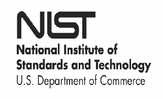
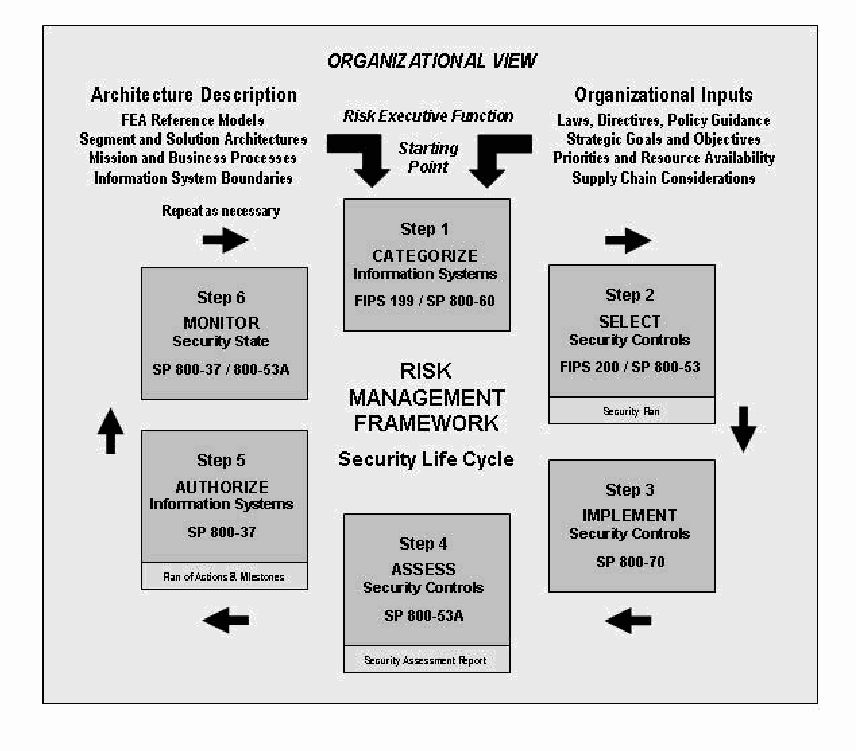
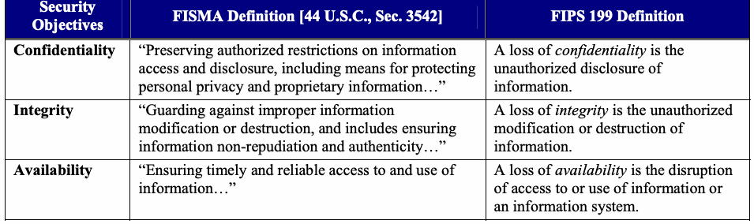
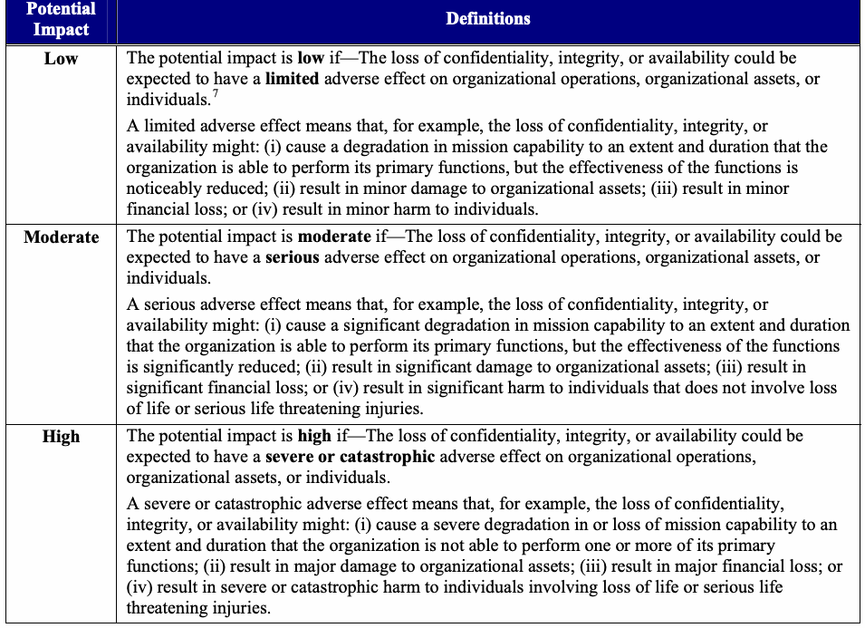
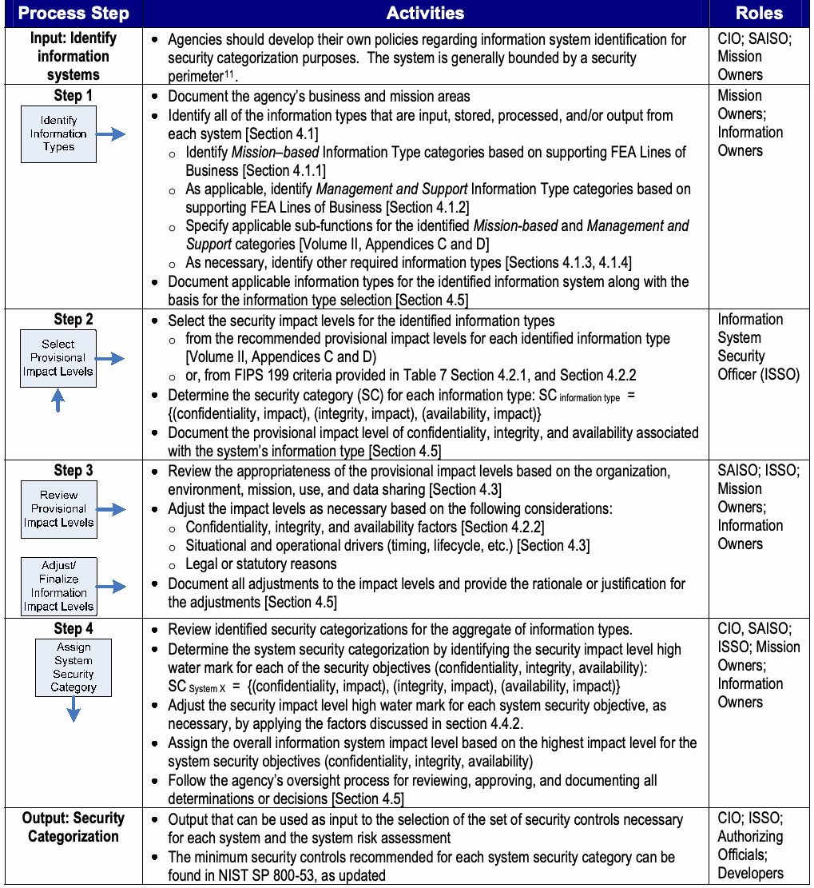
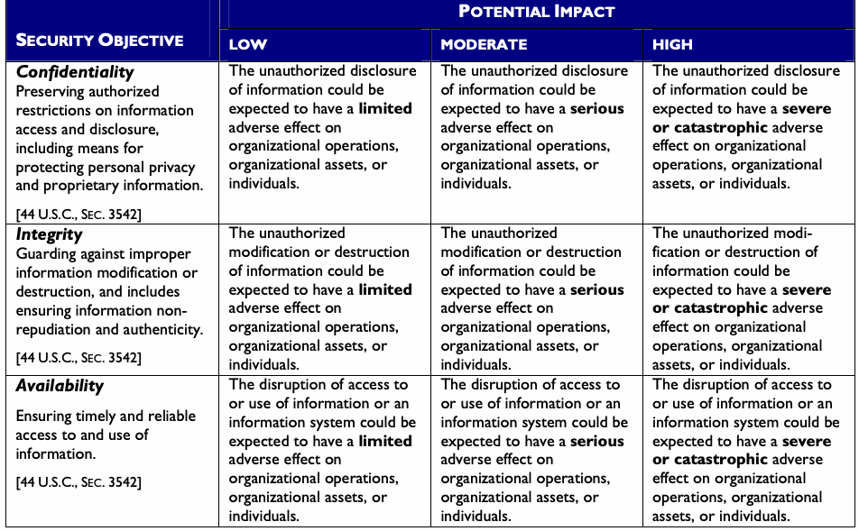
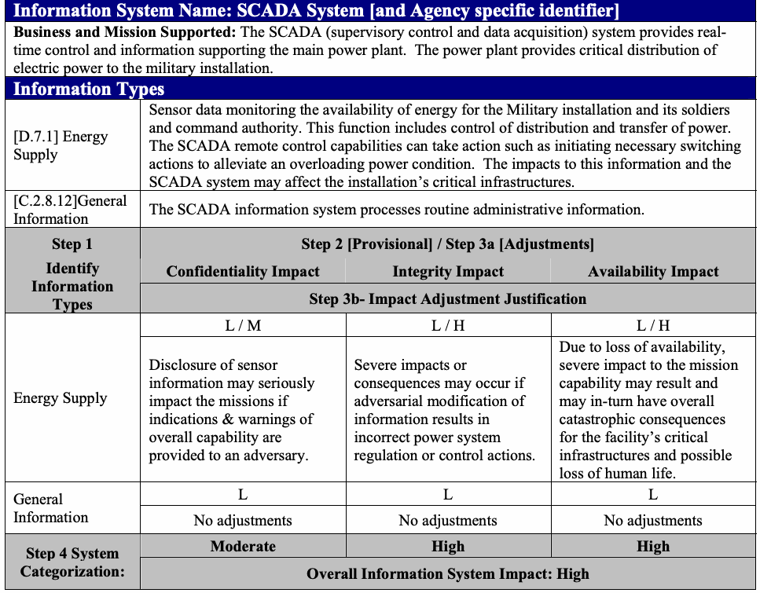

NIST Special Publication · PDF 原文抽出
Guide for Mapping Types of Information and Information Systems to Security Categories
情報および情報システムの種類をセキュリティカテゴリに対応付けるガイド：第1巻
NIST SP 800-60 Vol. 1 Rev. 1（Guide for Mapping Types of Information and Information Systems to Security Categories）の英文と日本語訳を段落ごとに並べた閲覧用ページです。情報および情報システムの種類を、リスクに応じたセキュリティカテゴリに対応付けるための基本指針を示します。 翻訳は非公式です。要件の確認にはNIST の正式版 PDFを参照してください。
PDF から抽出した原文は原本との照合待ちです。
PDF p.20: 二段組の可能性があるため読み順を原本と照合してください
PDF p.23: 二段組の可能性があるため読み順を原本と照合してください
PDF p.24: 二段組の可能性があるため読み順を原本と照合してください
PDF p.25: 二段組の可能性があるため読み順を原本と照合してください
PDF p.26: 二段組の可能性があるため読み順を原本と照合してください
本文の数式はLaTeXの構造からKaTeXで表示しています。
NIST Special Publication 800-60 Volume I Volume I: Revision 1
NIST特別刊行物800-60 第I巻 第I巻：改訂第1版
未レビュー訳Guide for Mapping Types of Information and Information
情報の種類および情報
未レビュー訳
米国国立標準技術研究所（NIST）と米国商務省を示すロゴ。
Systems to Security Categories
システムをセキュリティカテゴリに対応付けるためのガイド
未レビュー訳Kevin Stine Rich Kissel William C. Barker Jim Fahlsing Jessica Gulick
Kevin Stine Rich Kissel William C. Barker Jim Fahlsing Jessica Gulick
未レビュー訳I N F O R M A T I O N S E C U R I T Y
情報セキュリティ
Computer Security Division Information Technology Laboratory National Institute of Standards and Technology Gaithersburg, MD 20899-8930
コンピュータセキュリティ部門 情報技術研究所 米国国立標準技術研究所 Gaithersburg, MD 20899-8930
未レビュー訳August 2008
2008年八月
未レビュー訳米国商務省の紋章。盾、帆船、鷲を中心に、周囲に省名と「アメリカ合衆国」の文字を配する。
U.S. DEPARTMENT OF COMMERCE Carlos M. Gutierrez, Secretary
米国商務省 Carlos M. Gutierrez長官
未レビュー訳NATIONAL INSTITUTE OF STANDARDS AND TECHNOLOGY James M. Turner, Deputy Director
米国国立標準技術研究所 James M. Turner副所長
未レビュー訳Reports on Computer Systems Technology
コンピュータシステム技術に関する報告
The Information Technology Laboratory (ITL) at the National Institute of Standards and Technology (NIST) promotes the U.S. economy and public welfare by providing technical leadership for the nation’s measurement and standards infrastructure. ITL develops tests, test methods, reference data, proof-of-concept implementations, and technical analyses to advance the development and productive use of information technology. ITL’s responsibilities include the development of management, administrative, technical, and physical standards and guidelines for the cost-effective security and privacy of other than national security-related information in federal information systems. This Special Publication 800-series reports on ITL’s research, guidelines, and outreach efforts in information system security and its collaborative activities with industry, government, and academic organizations.
米国国立標準技術研究所（NIST）の情報技術研究所（ITL）は、国の計測・標準インフラに技術的リーダーシップを提供することで、米国経済と公共の福祉を促進する。ITLは、情報技術の開発と生産的利用を推進するため、試験、試験方法、参照データ、概念実証実装および技術分析を開発する。ITLの責任には、連邦情報システムにおける国家安全保障関連以外の情報の費用対効果の高いセキュリティとプライバシーを確保するための、管理的、運営上、技術的および物理的な標準とガイドラインの策定が含まれる。この特別刊行物800シリーズは、情報システムセキュリティに関するITLの研究、ガイドラインおよび普及活動、ならびに産業界、政府および学術機関との協力活動を報告する。
未レビュー訳Authority
権限
未レビュー訳This document has been developed by the National Institute of Standards and Technology (NIST) to further its statutory responsibilities under the Federal Information Security Management Act (FISMA) of 2002, P.L. 107-347. NIST is responsible for developing standards and guidelines, including minimum requirements, for providing adequate information security for all agency operations and assets but such standards and guidelines shall not apply to national security systems. This guideline is consistent with the requirements of the Office of Management and Budget (OMB) Circular A-130, Section 8b(3), Securing Agency Information Systems, as analyzed in A-130, Appendix IV: Analysis of Key Sections. Supplemental information is provided in A-130, Appendix III. This guideline has been prepared for use by federal agencies. It may also be used by nongovernmental organizations on a voluntary basis and is not subject to copyright. (Attribution would be appreciated by NIST.) Nothing in this document should be taken to contradict standards and guidelines made mandatory and binding on federal agencies by the Secretary of Commerce under statutory authority. Nor should these guidelines be interpreted as altering or superseding the existing authorities of the Secretary of Commerce, Director of the OMB, or any other federal official.
本書は、2002年連邦情報セキュリティ管理法（FISMA）、公法107-347に基づく法定責任をさらに遂行するため、米国国立標準技術研究所（NIST）が策定した。NISTは、すべての機関の業務および資産に適切な情報セキュリティを提供するため、最低要件を含む標準およびガイドラインを策定する責任を負う。ただし、そのような標準およびガイドラインは国家安全保障システムには適用してはならない。本ガイドラインは、行政管理予算局（OMB）通達A-130第8b(3)項「機関情報システムの保護」の要件と整合しており、その分析はA-130付属書IV「主要条項の分析」に示されている。補足情報はA-130付属書IIIに記載されている。本ガイドラインは連邦機関が使用するために作成された。非政府組織も任意で使用でき、著作権の対象ではない。（NISTの出典表示を歓迎する。）本書のいかなる内容も、法定権限に基づき商務長官が連邦機関に義務付け、拘束力を持たせた標準およびガイドラインに反するものと解釈してはならない。また、本ガイドラインは、商務長官、OMB長官またはその他の連邦政府職員が有する既存の権限を変更または置き換えるものと解釈してはならない。
未レビュー訳NIST Special Publication 800-60 Volume I, Revision 1, 53 pages (Date) CODEN: NSPUE2
NIST特別刊行物800-60 第I巻、改訂第1版、53ページ（日付）CODEN: NSPUE2
未レビュー訳Certain commercial entities, equipment, or materials may be identified in this document in order to describe an experimental procedure or concept adequately. Such identification is not intended to imply recommendation or endorsement by the National Institute of Standards and Technology, nor is it intended to imply that the entities, materials, or equipment are necessarily the best available for the purpose. There are references in this publication to documents currently under development by NIST in accordance with responsibilities assigned to NIST under the Federal Information Security Management Act of 2002. The methodologies in this document may be used even before the completion of such companion documents. Thus, until such time as each document is completed, current requirements, guidelines, and procedures (where they exist) remain operative. For planning and transition purposes, agencies may wish to closely follow the development of these new documents by NIST. Individuals are also encouraged to review the public draft documents and offer their comments to NIST. All NIST documents mentioned in this publication, other than the ones noted above, are available at http://csrc.nist.gov/publications.
実験手順または概念を適切に説明するため、本書では特定の商業的事業体、機器または材料を特定する場合がある。このような特定は、米国国立標準技術研究所による推奨または推奨採用を意味するものではなく、また、それらの事業体、材料または機器が目的に照らして必ずしも入手可能な最良のものであることを意味するものでもない。本刊行物では、2002年連邦情報セキュリティ管理法に基づきNISTに割り当てられた責任に従って、NISTが現在策定中の文書を参照している。本書の方法論は、こうした関連文書が完成する前であっても使用できる。したがって、各文書が完成するまでは、現行の要件、ガイドラインおよび手順（存在する場合）が引き続き有効である。計画および移行のため、機関はNISTによるこれら新文書の策定を注意深く追跡することが望ましい。個人にも、公開草案を確認し、NISTに意見を提出することを推奨する。上記で言及したものを除き、本刊行物で言及するすべてのNIST文書は、http://csrc.nist.gov/publications で入手できる。
未レビュー訳COMMENTS MAY BE SUBMITTED TO THE COMPUTER SECURITY DIVISION, INFORMATION TECHNOLOGY LABORATORY, NIST VIA ELECTRONIC MAIL AT SEC-CERT@NIST.GOV OR VIA REGULAR MAIL AT 100 BUREAU DRIVE (MAIL STOP 8930), GAITHERSBURG, MD 20899-8930
意見は、NIST情報技術研究所コンピュータセキュリティ部門宛に、電子メール SEC-CERT@NIST.GOV または通常郵便 100 BUREAU DRIVE (MAIL STOP 8930), GAITHERSBURG, MD 20899-8930 にて提出できる（MAY）。
未レビュー訳Acknowledgements
謝辞
未レビュー訳The authors, Kevin Stine, Rich Kissel, and William C. Barker, wish to thank their colleagues, Jim Fahlsing and Jessica Gulick from Science Applications International Corporation (SAIC), who helped update this document, prepare drafts, and review materials. In addition, special thanks are due to our reviewers, Arnold Johnson (NIST), Karen Quigg (Mitre Corporation), and Ruth Bandler (Food and Drug Administration), who greatly contributed to the document’s development. A special note of thanks goes to Elizabeth Lennon for her superb technical editing and administrative support. NIST also gratefully acknowledges and appreciates the many contributions from individuals in the public and private sectors whose thoughtful and constructive comments improved the quality and usefulness of this publication.
著者のKevin Stine、Rich KisselおよびWilliam C. Barkerは、本書の更新、草稿の作成および資料の査読を支援したScience Applications International Corporation（SAIC）の同僚Jim FahlsingおよびJessica Gulickに謝意を表する。さらに、本書の策定に大きく貢献した査読者であるArnold Johnson（NIST）、Karen Quigg（Mitre Corporation）およびRuth Bandler（食品医薬品局）に特に感謝する。卓越した技術編集と事務支援を提供したElizabeth Lennonにも、特記して謝意を表する。NISTはまた、本刊行物の品質と有用性を高める、思慮深く建設的な意見を寄せた官民両部門の多くの方々の貢献に感謝し、謝意を表する。
未レビュー訳Table of Contents
目次
未レビュー訳Volume I: Guide for Mapping Types of Information and Information
第I巻：情報の種類および情報
未レビュー訳Systems to Security Categories
システムをセキュリティカテゴリに対応付けるためのガイド
未レビュー訳EXECUTIVE SUMMARY .........................................................................................................VII
エグゼクティブサマリー .........................................................................................................VII
未レビュー訳1.0 INTRODUCTION — 1
1.0 はじめに — 1
未レビュー訳1.1 Purpose and Applicability — 1
1.1 目的および適用可能性 — 1
未レビュー訳1.2 Target Audience — 1
1.2 対象読者 — 1
未レビュー訳1.3 Relationship to Other Documents — 1
1.3 他の文書との関係 — 1
未レビュー訳1.4 Organization of this Special Publication — 2
1.4 本特別刊行物の構成 — 2
2.0 PUBLICATION OVERVIEW — 4
2.0 刊行物の概要 — 4
未レビュー訳2.1 Agencies Support the Security Categorization Process — 4
2.1 機関によるセキュリティ分類プロセスの支援 — 4
未レビュー訳2.2 Value to Agency Missions, Security Programs and IT Management — 4
2.2 機関のミッション、セキュリティプログラムおよびIT管理にとっての価値 — 4
未レビュー訳2.3 Role in the System Development Lifecycle — 5
2.3 システム開発ライフサイクルにおける役割 — 5
未レビュー訳2.4 Role in the Certification and Accreditation Process — 5
2.4 認証および認定プロセスにおける役割 — 5
2.5 Role in the NIST Risk Management Framework — 6
2.5 NISTリスク管理フレームワークにおける役割 — 6
未レビュー訳3.0 SECURITY CATEGORIZATION OF INFORMATION AND INFORMATION SYSTEMS — 9
3.0 情報および情報システムのセキュリティ分類 — 9
3.1 Security Categories and Objectives — 9
3.1 セキュリティカテゴリおよび目的 — 9
未レビュー訳3.1.1 Security Categories — 9
3.1.1 セキュリティカテゴリ — 9
未レビュー訳3.1.2 Security Objectives and Types of Potential Losses — 9
3.1.2 セキュリティ目的および潜在的損失の種類 — 9
未レビュー訳3.2 Impact Assessment — 10
3.2 影響度評価 — 10
未レビュー訳4.0 ASSIGNMENT OF IMPACT LEVELS AND SECURITY CATEGORIZATION — 12
4.0 影響レベルの割り当ておよびセキュリティカテゴリ化 — 12
4.1 Step 1: Identify Information Types — 14
4.1 ステップ1：情報の種類を識別する — 14
未レビュー訳4.1.1 Identification of Mission-based Information Types — 14
4.1.1 ミッションに基づく情報種別の識別 — 14
4.1.2 Identification of Management and Support Information — 16
4.1.2 管理情報および支援情報の識別 — 16
4.1.3 Legislative and Executive Information Mandates — 18
4.1.3 立法府および行政府の情報に関する指令 — 18
4.1.4 Identifying Information Types Not Listed in this Guideline — 18
4.1.4 本ガイドラインに記載されていない情報の種類を特定する — 18
4.2 Step 2: Select Provisional Impact Level — 19
4.2 ステップ2：暫定的な影響レベルを選択する — 19
未レビュー訳4.2.1 FIPS 199 Security Categorization Criteria — 19
4.2.1 FIPS 199のセキュリティ分類基準 — 19
未レビュー訳4.2.2 Common Factors for Selection of Impact Levels — 20
4.2.2 影響レベルの選択に共通する要因 — 20
未レビュー訳4.2.3 Examples of FIPS 199-Based Selection of Impact Levels — 22
4.2.3 FIPS 199に基づく影響レベル選択の例 — 22
未レビュー訳4.3 Step 3: Review Provisional Impact Levels and Adjust/Finalize Information Type Impact Levels — 23
4.3 ステップ3：暫定的な影響レベルを確認し、情報の種類の影響レベルを調整／最終決定する — 23
4.4 Step 4: Assign System Security Category — 24
4.4 ステップ4：システムセキュリティカテゴリを割り当てる — 24
未レビュー訳4.4.1 FIPS 199 Process for System Security Categorization — 25
4.4.1 FIPS 199によるシステムセキュリティ分類プロセス — 25
未レビュー訳4.4.2 Guidelines for System Categorization — 26
4.4.2 システムカテゴリ化の指針 — 26
4.4.3 Overall Information System Impact — 30
4.4.3 情報システム全体への影響 — 30
未レビュー訳4.5 Documenting the Security Categorization Process — 31
4.5 セキュリティ分類プロセスの文書化 — 31
未レビュー訳4.6 Uses of Categorization Information — 33
4.6 分類情報の利用 — 33
未レビュー訳APPENDIX A: GLOSSARY OF TERMS — 1
付録A：用語集 — 1
未レビュー訳APPENDIX B: REFERENCES — 1
付録B：参考文献 — 1
未レビュー訳EXECUTIVE SUMMARY
要約
未レビュー訳Title III of the E-Government Act (Public Law 107-347), titled the Federal Information Security Management Act (FISMA), tasked the National Institute of Standards and Technology (NIST) to develop:
「連邦情報セキュリティ管理法（FISMA）」と題する電子政府法（公法107-347）第III編は、米国国立標準技術研究所（NIST）に以下の策定を課した：
•Standards to be used by all Federal agencies to categorize all information and information systems collected or maintained by or on behalf of each agency based on the objectives of providing appropriate levels of information security according to a range of risk levels;
•さまざまなリスクレベルに応じた適切な情報セキュリティ水準を提供するという目的に基づき、すべての連邦機関が、各機関によって、または各機関に代わって収集もしくは維持されるすべての情報および情報システムをカテゴリ化するために使用する規格；
•Guidelines recommending the types of information and information systems to be included in each such category; and
•各カテゴリーに含める情報および情報システムの種類を推奨するガイドライン；および
未レビュー訳•Minimum information security requirements (i.e., management, operational, and technical security controls), for information and information systems in each such category.
•各カテゴリーの情報および情報システムに対する最低限の情報セキュリティ要件（すなわち、管理的、運用的および技術的なセキュリティ管理策）。
未レビュー訳In response to the second of these tasks, this guideline has been developed to assist Federal government agencies to categorize information and information systems. The guideline’s objective is to facilitate application of appropriate levels of information security according to a range of levels of impact or consequences that might result from the unauthorized disclosure, modification, or use of the information or information system. This guideline assumes that the user is familiar with Standards for Security Categorization of Federal Information and Information Systems (Federal Information Processing Standard [FIPS] 199). The guideline and its appendices:
これらの課題のうち2つ目に対応するため、本ガイドラインは、連邦政府機関が情報および情報システムをカテゴリに分類するのを支援する目的で策定された。本ガイドラインの目的は、情報または情報システムの不正な開示、改変、使用によって生じ得る影響や結果の度合いに応じて、適切な情報セキュリティレベルを適用しやすくすることである。本ガイドラインは、「連邦情報および情報システムのセキュリティカテゴリ化標準」（連邦情報処理標準［FIPS］199）に精通した利用者を想定している。本ガイドラインとその付録は、次の事項を行う。
•Review the security categorization terms and definitions established by FIPS 199;
•FIPS 199で定められたセキュリティカテゴリ化の用語および定義を確認する。
•Recommend a security categorization process;
•セキュリティカテゴリ化のプロセスを推奨する。
•Describe a methodology for identifying types of Federal information and information systems;
•連邦政府の情報および情報システムの種別を特定する方法を説明する。
未レビュー訳•Suggest provisional1 security impact levels for common information types;
•一般的な情報種別について、暫定的な1セキュリティ影響レベルを提案する。
未レビュー訳•Discuss information attributes that may result in variances from the provisional impact level assignment; and
•暫定的な影響レベルの割り当てに差異を生じさせる可能性のある情報属性を論じる。
•Describe how to establish a system security categorization based on the system’s use, connectivity, and aggregate information content.
•システムの用途、接続性、および情報内容の集約に基づいて、システムのセキュリティカテゴリを設定する方法を説明する。
未レビュー訳This document is intended as a reference resource rather than as a tutorial and not all of the material will be relevant to all agencies. This document includes two volumes, a basic guideline and a volume of appendices. Users should review the guidelines provided in Volume I, then refer to only that specific material from the appendices that applies to their own systems and applications. The provisional impact assignments are provided in Volume II, Appendix C and D. The basis employed in this guideline for the identification of information types is the Office of
本書はチュートリアルではなく参考資料として用いることを意図しており、すべての内容がすべての機関に関係するわけではない。本書は、基本ガイドラインの第I巻と付録を収録した第II巻の2巻で構成される。利用者は第I巻のガイドラインを確認したうえで、自らのシステムおよびアプリケーションに該当する付録の資料のみを参照する。暫定的な影響レベルの割り当ては第II巻の付録CおよびDに示す。本ガイドラインにおける情報種別の特定の基礎として用いたのは、米国行政管理予算局（OMB）の
未レビュー訳Management and Budget’s Federal Enterprise Architecture (FEA) Program Management Office (PMO) October 2007 publication, The Consolidated Reference Model Document Version 2.3.
連邦エンタープライズアーキテクチャ（FEA）プログラム管理室（PMO）が2007年10月に公表した『The Consolidated Reference Model Document Version 2.3』。
未レビュー訳1.0 INTRODUCTION
1.0 はじめに
未レビュー訳The identification of information processed on an information system is essential to the proper selection of security controls and ensuring the confidentiality, integrity, and availability of the system and its information. The National Institute of Standards and Technology (NIST) Special Publication (SP) 800-60 has been developed to assist Federal government agencies to categorize information and information systems.
情報システムで処理される情報を特定することは、セキュリティ管理策を適切に選定し、システムおよびその情報の機密性、完全性、可用性を確保するうえで不可欠である。NIST特別刊行物（SP）800-60は、連邦政府機関が情報および情報システムを分類するのを支援するために策定された。
1.1 Purpose and Applicability
1.1 目的および適用範囲
未レビュー訳NIST SP 800-60 addresses the FISMA direction to develop guidelines recommending the types of information and information systems to be included in each category of potential security impact. This guideline is intended to help agencies consistently map security impact levels to types of: (i) information (e.g., privacy, medical, proprietary, financial, contractor sensitive, trade secret, investigation); and (ii) information systems (e.g., mission critical, mission support, administrative). This guideline applies to all Federal information systems other than national security systems. National security systems store, process, or communicate national security information.2
NIST SP 800-60は、潜在的なセキュリティ影響の各カテゴリに含める情報および情報システムの種別を推奨するガイドラインを策定するというFISMAの指示に対応する。本ガイドラインは、次の種別にセキュリティ影響レベルを一貫して対応付けるために、各機関を支援することを意図している。（i）情報（例：プライバシー、医療、専有、財務、請負業者の機微情報、企業秘密、調査）；および（ii）情報システム（例：ミッション上重要なもの、ミッション支援、管理業務）。本ガイドラインは、国家安全保障システムを除くすべての連邦情報システムに適用される。国家安全保障システムは、国家安全保障情報を保存、処理、または通信する。2
未レビュー訳1.2 Target Audience
1.2 対象読者
This publication is intended to serve a diverse federal audience of information system and information security professionals including: (i) individuals with information system and information security management and oversight responsibilities (e.g., chief information officers, senior agency information security officers, authorizing officials); (ii) organizational officials having a vested interest in the accomplishment of organizational missions (e.g., mission and business area owners, information owners); (iii) individuals with information system development responsibilities (e.g., program and project managers, information system developers); and (iv) individuals with information security implementation and operational responsibilities (e.g., information system owners, information owners, information system security officers).
本書は、情報システムおよび情報セキュリティの専門家を含む、幅広い連邦政府関係者を対象とする。対象者には、（i）情報システムおよび情報セキュリティの管理・監督責任を持つ者（例：最高情報責任者、機関の上級情報セキュリティ責任者、認可担当者）；（ii）組織のミッション達成に利害関係を持つ職員（例：ミッション領域および事業領域の所有者、情報所有者）；（iii）情報システムの開発責任を持つ者（例：プログラムマネージャー、プロジェクトマネージャー、情報システム開発者）；および（iv）情報セキュリティの実装および運用責任を持つ者（例：情報システム所有者、情報所有者、情報システムセキュリティ責任者）が含まれる。
1.3 Relationship to Other Documents
1.3 他の文書との関係
NIST Special Publication (SP) 800-60 is a member of the NIST family of security-related publications including:
NIST特別刊行物（SP）800-60は、次のものを含む、NISTのセキュリティ関連刊行物群の一つである。
•FIPS Publication 199, Standards for Security Categorization of Federal Information and Information Systems;
•FIPS刊行物199『連邦情報および情報システムのセキュリティカテゴリ化標準』；
•FIPS Publication 200, Minimum Security Requirements for Federal Information and Information Systems;
•FIPS刊行物200『連邦情報および情報システムの最低セキュリティ要件』；
•NIST SP 800-30, Risk Management Guide for Information Technology Systems;3
•NIST SP 800-30『情報技術システムのリスク管理ガイド』；3
未レビュー訳•NIST SP 800-37, Guide for the Security Certification and Accreditation of Federal Information Systems;
•NIST SP 800-37『連邦情報システムのセキュリティ認証および認定ガイド』；
•NIST Draft SP 800-39, Managing Risk from Information Systems: An Organization Perspective;
•NISTドラフトSP 800-39『情報システムからのリスク管理：組織の視点』；
未レビュー訳•NIST SP 800-53, Recommended Security Controls for Federal Information Systems;
•NIST SP 800-53『連邦情報システムの推奨セキュリティ管理策』；
•NIST SP 800-53A, Guide for Assessing the Security Controls in Federal Information Systems; and
•NIST SP 800-53A『連邦情報システムのセキュリティ管理策評価ガイド』；および
•NIST SP 800-59, Guideline for Identifying an Information System as a National Security System.
•NIST SP 800-59『情報システムを国家安全保障システムとして識別するためのガイドライン』。
未レビュー訳This series of nine documents is intended to provide a structured, yet flexible framework for selecting, specifying, employing, evaluating, and monitoring the security controls in Federal information systems—and thus, makes a significant contribution toward satisfying the requirements of the Federal Information Security Management Act (FISMA) of 2002. While the publications are mutually reinforcing and have some dependencies, in most cases, they can be effectively used independently of one another. The SP 800-60 information types and associated security impact levels are based on the Office of Management and Budget (OMB) Federal Enterprise Architecture Program Management Office’s October 2007 FEA Consolidated Reference Model Document, Version 2.3, inputs from participants in previous NIST SP 800-60 workshops, and FIPS 199. Rationale for the example impact-level recommendations provided in the appendices has been derived from multiple sources and, as such, will require several iterations of review, comment, and subsequent modification to achieve consistency in terminology, structure, and content.
この9文書シリーズは、連邦情報システムのセキュリティ管理策を選定、規定、導入、評価、監視するための、体系的でありながら柔軟な枠組みを提供することを意図している。これにより、2002年連邦情報セキュリティ管理法（FISMA）の要件を満たすことに大きく貢献する。各刊行物は相互に補完し合い、相互依存関係もあるが、多くの場合、それぞれを単独で効果的に利用できる。SP 800-60の情報種別と関連するセキュリティ影響レベルは、OMB連邦エンタープライズアーキテクチャ・プログラム管理室が2007年10月に公表したFEA統合参照モデル文書第2.3版、過去のNIST SP 800-60ワークショップ参加者からの意見、およびFIPS 199に基づく。付録に示す影響レベルの推奨例の根拠は複数の情報源から導かれているため、用語、構成、内容の一貫性を確保するには、レビュー、コメント、およびその後の修正を数回繰り返す必要がある。
未レビュー訳1.4 Organization of this Special Publication
1.4 本特別刊行物の構成
This is Volume I of two volumes. It contains the basic guidelines for mapping types of information and information systems to security categories. The appendices, including security categorization recommendations for mission-based information types and rationale for security categorization recommendations, are published as a separate Volume II. Volume I provides the following background information and mapping guidelines:
本書は2巻構成の第I巻である。情報および情報システムの種別をセキュリティカテゴリに対応付けるための基本ガイドラインを記載する。ミッションに基づく情報種別のセキュリティカテゴリ化推奨事項と、その推奨の根拠を含む付録は、別冊の第II巻として刊行されている。第I巻には、次の背景情報と対応付けのガイドラインを記載する。
未レビュー訳•Section 2: Provides an overview of the value of the categorization process to agency missions, security programs and overall information technology (IT) management and the publication’s role in the system development lifecycle, the certification and accreditation process, and the NIST Risk Management Framework.
•第2節：カテゴリ化プロセスが機関のミッション、セキュリティプログラム、情報技術（IT）管理全体にもたらす価値、およびシステム開発ライフサイクル、認証・認定プロセス、NISTリスク管理フレームワークにおける本書の役割の概要を示す。
•Section 3: Provides the security objectives and corresponding security impact levels identified in the Federal Information Processing Standard 199, Standards for Security Categorization of Federal Information and Information Systems [FIPS 199];
•第3節：連邦情報処理標準199『連邦情報および情報システムのセキュリティカテゴリ化標準』［FIPS 199］で特定されたセキュリティ目的と、それに対応するセキュリティ影響レベルを示す。
•Section 4: Identifies the process including guidelines for identification of mission-based and management and support information types and the process used to select security impact levels, general considerations relating to security impact assignment, guidelines for system security categorization, and considerations and guidelines for applying and interrelating system categorization results to the agency’s enterprise, large supporting infrastructures, and interconnecting systems;
•第4節：ミッションに基づく情報種別ならびに管理・支援情報種別を特定するためのガイドラインを含むプロセス、セキュリティ影響レベルの選定方法、影響レベル割り当てに関する一般的な考慮事項、システムのセキュリティカテゴリ化に関するガイドライン、およびシステムカテゴリ化の結果を機関のエンタープライズ、大規模な支援インフラ、相互接続システムに適用し相互に関連付ける際の考慮事項とガイドラインを説明する。
未レビュー訳•Appendix A: Glossary; and
•付録A：用語集；および
•Appendix B: References.
•付録B：参考文献。
Volume II includes the following appendices:
第II巻には、次の付録を収録する。
•Appendix A: Glossary [Repeated];
•付録A：用語集［再掲］；
•Appendix B: References [Repeated];
•付録B：参考文献［再掲］；
•Appendix C: Provisional security impact level assignments and supporting rationale for management and support information (administrative, management, and service information);
•付録C：管理・支援情報（管理業務、経営管理、サービス情報）の暫定的なセキュリティ影響レベル割り当てとその根拠；
未レビュー訳•Appendix D: Provisional security impact level assignments and supporting rationale for mission-based information (mission information and services delivery mechanisms); and
•付録D：ミッションに基づく情報（ミッション情報およびサービス提供メカニズム）の暫定的なセキュリティ影響レベル割り当てとその根拠；および
未レビュー訳•Appendix E: Legislative and executive sources that specify sensitivity/criticality properties.
•付録E：機微性／重要性の特性を定める立法および行政機関の情報源。
未レビュー訳2.0 PUBLICATION OVERVIEW
2.0 刊行物の概要
未レビュー訳Security categorization provides a vital step in integrating security into the government agency’s business and information technology management functions and establishes the foundation for security standardization amongst their information systems. Security categorization starts with the identification of what information supports which government lines of business, as defined by the Federal Enterprise Architecture (FEA). Subsequent steps focus on the evaluation of the need for security in terms of confidentiality, integrity, and availability. The result is strong linkage between missions, information, and information systems with cost effective information security.
セキュリティカテゴリ化は、セキュリティを政府機関の業務および情報技術管理機能に組み込むための重要な段階であり、情報システム間のセキュリティ標準化の基盤となる。セキュリティカテゴリ化は、連邦エンタープライズアーキテクチャ（FEA）で定義されている政府のどの業務分野をどの情報が支援するかを特定することから始まる。その後、機密性、完全性、可用性の観点から、必要なセキュリティを評価する。これにより、ミッション、情報、情報システムが強く結び付けられ、費用対効果の高い情報セキュリティが実現する。
未レビュー訳2.1 Agencies Support the Security Categorization Process
2.1 機関によるセキュリティカテゴリ化プロセスの支援
未レビュー訳Agencies support the categorization process by establishing mission-based information types for the organization. The approach to establishing mission-based information types at an agency begins by documenting the agency’s mission and business areas. In the case of mission-based information, the responsible individuals, in coordination with management, operational, enterprise architecture, and security stakeholders, should compile a comprehensive set of the agency’s lines of business and mission areas. In addition, responsible individuals should identify the applicable sub-functions necessary to accomplish the organization’s mission. For example, one organization’s mission might be related to economic development. Sub-functions that are part of the organization’s economic development mission might include business and industry development, intellectual property protection, or financial sector oversight. Each of these sub-functions represents an information type.
各機関は、組織のミッションに基づく情報種別を定めることで、カテゴリ化プロセスを支援する。機関でミッションに基づく情報種別を定めるには、まず機関のミッションと業務分野を文書化する。ミッションに基づく情報については、担当者が管理、運用、エンタープライズアーキテクチャ、セキュリティの関係者と連携し、機関の業務分野とミッション領域を網羅した一覧を作成すべきである。また、担当者は組織のミッション達成に必要な適用可能な下位機能も特定すべきである。たとえば、ある組織のミッションが経済開発に関係しているとする。このミッションを構成する下位機能には、企業・産業の振興、知的財産の保護、金融部門の監督などが含まれる場合がある。これらの下位機能は、それぞれ情報種別に相当する。
未レビュー訳Agencies should conduct FIPS 199 security categorizations of their information systems as an agency-wide activity with the involvement of the senior leadership and other key officials within the organization (e.g., mission and business owners, authorizing officials, risk executive, chief information officer, senior agency information security officer, information system owners, and information owners) to ensure that each information system receives the appropriate management oversight and reflects the needs of the organization as a whole. Senior leadership oversight in the security categorization process is essential so that the next steps in the NIST Risk Management Framework4 (e.g., security control selection) can be carried out in an effective and consistent manner throughout the agency.
各機関は、情報システムごとに適切な管理監督が行われ、組織全体のニーズが反映されるよう、上級幹部やその他の主要職員（例：ミッションおよび業務の責任者、認可担当者、リスク責任者、最高情報責任者、機関の上級情報セキュリティ責任者、情報システム所有者、情報所有者）が参加する機関全体の活動として、FIPS 199に基づく情報システムのセキュリティカテゴリ化を実施すべきである。セキュリティカテゴリ化プロセスにおける上級幹部の監督は、NISTリスク管理フレームワーク4の次の段階（例：セキュリティ管理策の選定）を機関全体で効果的かつ一貫して実施するうえで不可欠である。
未レビュー訳2.2 Value to Agency Missions, Security Programs and IT Management
2.2 機関のミッション、セキュリティプログラムおよびIT管理にもたらす価値
Federal agencies are heavily dependent upon information and information systems to successfully conduct critical missions. With an increasing reliability on and growing complexity of information systems as well as a constantly changing risk environment, information security has become a mission-essential function. This function must be conducted in a manner that reduces the risks to the information entrusted to the agency, its overall mission, and its ability to do business and to serve the American public. In the end, information security, as a function, becomes a business enabler through diligent and effective management of risk to information confidentiality, integrity, and availability.
連邦政府機関は、重要なミッションを遂行するために情報および情報システムに大きく依存している。情報システムへの依存度が高まり、その複雑さも増す一方で、リスク環境が絶えず変化していることから、情報セキュリティはミッション遂行に不可欠な機能となった。この機能は、機関に託された情報、機関全体のミッション、業務遂行能力、および米国民へのサービス提供能力に対するリスクを低減する形で実施しなければならない。最終的に、情報セキュリティは、情報の機密性、完全性、可用性に対するリスクを慎重かつ効果的に管理することで、業務を可能にする機能となる。
Therefore, the value of information security categorization is to enable agencies to proactively implement appropriate information security controls based on the assessed potential impact to information confidentiality, integrity, and availability and in turn to support their mission in a cost-effective manner. An incorrect information system impact analysis (i.e., incorrect FIPS 199 security categorization) can result in the agency either over protecting the information system thus wasting valuable security resources, or under protecting the information system and placing important operations and assets at risk. The aggregation of such mistakes at the enterprise level can further compound the problem. In contrast, conducting FIPS 199 impact analyses as an agency-wide exercise with the participation of key officials (e.g., Chief Information Officer [CIO], Senior Agency Information Security Officer [SAISO], Authorizing Officials, Mission/System Owners) at multiple levels can enable the agency to leverage economies of scale through the effective management and implementation of security controls at the enterprise level. A resulting value of consistently implementing this systematic process for determining the security categorization and the application of appropriate security protection is an improved overall understanding of the agency’s mission, business processes, and information and system ownership.
したがって、情報セキュリティカテゴリ化の価値は、情報の機密性、完全性、可用性に対する潜在的影響の評価に基づいて、機関が適切な情報セキュリティ管理策を先回りして実装できるようにし、費用対効果の高い形でミッションを支援することにある。情報システムの影響分析を誤ると（すなわち、FIPS 199に基づくセキュリティカテゴリ化を誤ると）、システムを過剰に保護して貴重なセキュリティ資源を浪費したり、保護が不足して重要な業務や資産を危険にさらしたりする可能性がある。こうした誤りが組織全体で積み重なると、問題はさらに深刻になる。これに対し、最高情報責任者［CIO］、機関の上級情報セキュリティ責任者［SAISO］、認可担当者、ミッション／システム所有者などの主要職員が複数の階層から参加する機関全体の取組としてFIPS 199の影響分析を実施すれば、組織全体でセキュリティ管理策を効果的に管理・実装し、規模の経済を活用できる。セキュリティカテゴリを決定し、適切なセキュリティ保護を適用するこの体系的なプロセスを一貫して実施することで、機関のミッション、業務プロセス、情報およびシステムの所有関係について、機関全体の理解が深まる。
未レビュー訳Implementation Tip To enable an appropriate level of mission support and the diligent
実施のヒント：ミッション支援を適切な水準で行い、現行および将来の情報セキュリティ要件を確実に
未レビュー訳implementation of current and future information security requirements, each agency should establish a formal process to validate system level security categorizations in terms of agency priorities. This will not only promote comparable evaluation of systems, but also yield added benefits to include leveraging common security controls and establishing defense-in-depth.
実施するため、各機関は機関の優先事項に照らしてシステムレベルのセキュリティカテゴリを検証する正式なプロセスを設けるべきである。これにより、システムを比較可能な形で評価できるだけでなく、共通セキュリティ管理策の活用や多層防御の構築といった追加の効果も得られる。
未レビュー訳2.3 Role in the System Development Lifecycle
2.3 システム開発ライフサイクルにおける役割
An initial security categorization should occur early in the agency’s system development lifecycle (SDLC). The resulting security categorization would feed into security requirements identification (later to evolve into security controls) and other related activities such as privacy impact analysis or critical infrastructure analysis. Ultimately, the identified security requirements and selected security controls are introduced to the standard systems engineering process to effectively integrate the security controls with the information systems functional and operational requirements, as well as other pertinent system requirements (e.g., reliability, maintainability, supportability).
初期のセキュリティカテゴリ化は、機関のシステム開発ライフサイクル（SDLC）の早い段階で実施すべきである。得られたセキュリティカテゴリは、セキュリティ要件の特定（後にセキュリティ管理策へと具体化する）や、プライバシー影響分析、重要インフラ分析などの関連活動に反映される。最終的に、特定されたセキュリティ要件と選定されたセキュリティ管理策を標準的なシステムエンジニアリングプロセスに取り込み、情報システムの機能要件および運用要件、ならびに信頼性、保守性、サポート性などのその他の関連要件と効果的に統合する。
2.4 Role in the Certification and Accreditation Process
2.4 認証および認定プロセスにおける役割
Security categorization establishes the foundation of the certification and accreditation (C&A) activity by determining the levels of rigor required for certification and overall assurance testing of security controls, as well as additional activities that may be needed (i.e., privacy and critical infrastructure protection (CIP)). Thus, it assists in determining C&A level of effort and associated activity duration.
セキュリティカテゴリ化は、認証および認定（C&A）に必要な厳格さの水準、セキュリティ管理策の総合的な保証試験、および必要となり得る追加活動（プライバシー保護や重要インフラ保護［CIP］など）を決めることで、C&A活動の基盤を確立する。したがって、C&Aに必要な作業量と関連活動の期間を決定する助けとなる。
未レビュー訳Security categorization is a prerequisite activity for the C&A process. The categorization should be revisited at least every three years or when significant change occurs to the system or supporting business lines. Situational changes outside the system or agency may require a reevaluation of the categorization (i.e., directed mission changes, changes in governance, elevated or targeted threat activities). For more information, see NIST SP 800-64, Security Considerations in the Information System Development Life Cycle and NIST SP 800-37, Guide for the Security Certification and Accreditation of Federal Information Systems.
セキュリティカテゴリ化はC&Aプロセスの前提となる活動である。カテゴリ化は少なくとも3年ごと、またはシステムやそれを支える業務分野に重大な変更が生じたときに見直すべきである。システムまたは機関の外部における状況の変化（例：ミッション変更の指示、ガバナンスの変更、脅威活動の増大または標的化）によっても、カテゴリの再評価が必要になる場合がある。詳細については、NIST SP 800-64『情報システム開発ライフサイクルにおけるセキュリティの考慮事項』およびNIST SP 800-37『連邦情報システムのセキュリティ認証および認定ガイド』を参照。
Implementation Tip It is important to routinely revisit the security categorization as the
実施のヒント：セキュリティカテゴリは、ミッション／業務が
未レビュー訳mission/ business changes because it is likely the impact levels or even information types may change as well.
変更される際に定期的に見直すことが重要である。影響レベルや情報種別自体も変わる可能性が高いためである。
未レビュー訳2.5 Role in the NIST Risk Management Framework
2.5 NISTリスク管理フレームワークにおける役割
Security Categorization is the key first step in the Risk Management Framework5 because of its effect on all other steps in the framework from selection of security controls to level of effort in assessing security control effectiveness. Figure 1, NIST Risk Management Framework, depicts the role of NIST security standards and guidelines for information system security.
セキュリティカテゴリ化は、セキュリティ管理策の選定から、その有効性評価に必要な作業量まで、フレームワークの他のすべての段階に影響するため、リスク管理フレームワーク5の最初の重要な段階である。図1「NISTリスク管理フレームワーク」は、情報システムセキュリティに関するNISTの標準およびガイドラインが果たす役割を示す。
未レビュー訳
NISTリスク管理フレームワークの6段階を示す図。情報システムの分類、管理策の選択・実装・評価、システム承認、継続的監視を循環させ、組織の目標やリスク管理方針から入力を受ける。
Figure 1: NIST Risk Management Framework The security categorization process documented in this publication provides input into the
図1：NISTリスク管理フレームワーク。本書に記載するセキュリティカテゴリ化プロセスは、次のプロセスへの入力となる。
未レビュー訳following processes:
次のプロセス：
未レビュー訳•Step 2: Select an initial set of security controls for the information system based on the FIPS 199 security categorization and apply tailoring guidance as appropriate, to obtain a starting point for required controls as specified in FIPS 200, Minimum Security Requirements for Federal Information and Information Systems and NIST SP 800-53, Recommended Security Controls for Federal Information Systems. Utilizing NIST SP 800-53 and SP 800-30, Risk Management Guide for Information Technology Systems, supplement the initial set of tailored security controls based on an assessment of risk and local conditions including organization-specific security requirements, specific threat information, cost-benefit analyses, or special circumstances.
•ステップ2：FIPS 199に基づくセキュリティカテゴリ化を踏まえて、情報システムの初期セキュリティ管理策一式を選定し、必要に応じて調整指針を適用する。これにより、FIPS 200『連邦情報および情報システムの最低セキュリティ要件』とNIST SP 800-53『連邦情報システムの推奨セキュリティ管理策』で定める必要な管理策の出発点を得る。NIST SP 800-53およびSP 800-30『情報技術システムのリスク管理ガイド』を用い、リスク評価と、組織固有のセキュリティ要件、具体的な脅威情報、費用対効果分析、特別な状況などを含む現場の状況に基づいて、調整済みの初期管理策一式を補完する。
•Step 3: Implement the security controls in the information system.
•ステップ3：情報システムにセキュリティ管理策を実装する。
•Step 4: Assess the security controls using appropriate methods and procedures to determine the extent to which the controls are implemented correctly, operating as intended, and producing the desired outcome with respect to meeting the security requirements for the system. (Reference NIST SP 800-53A, Guide for Assessing the Security Controls in Federal Information Systems).
•ステップ4：適切な方法および手順を用いてセキュリティ管理策を評価し、管理策が正しく実装され、意図したとおりに運用され、システムのセキュリティ要件を満たす望ましい結果を生み出しているかを判断する。（NIST SP 800-53A『連邦情報システムのセキュリティ管理策評価ガイド』を参照。）
未レビュー訳•Step 5: Authorize information system operation based upon a determination of the risk to organizational operations, organizational assets, or to individuals resulting from the operation of the information system and the decision that this risk is acceptable as specified in NIST SP 800-37, Guide for the Security Certification and Accreditation of Federal Information Systems.
•ステップ5：情報システムの運用により組織の業務、組織の資産、または個人に生じるリスクを判断し、そのリスクが受容可能であると決定したうえで、情報システムの運用を認可する。NIST SP 800-37『連邦情報システムのセキュリティ認証および認定ガイド』に規定されている。
未レビュー訳•Step 6: Monitor and assess selected security controls in the information system on a continuous basis including documenting changes to the system, conducting security impact analyses of the associated changes, and reporting the security status of the system to appropriate organizational officials on a regular basis. (Reference NIST SP 800-37 and
•ステップ6：情報システムの選定済みセキュリティ管理策を継続的に監視および評価する。これには、システム変更の文書化、関連する変更のセキュリティ影響分析の実施、システムのセキュリティ状況の定期的な組織内報告が含まれる。（NIST SP 800-37および
未レビュー訳SP 800-53A).
SP 800-53Aを参照。）
未レビュー訳3.0 SECURITY CATEGORIZATION OF INFORMATION AND
3.0 情報および
未レビュー訳INFORMATION SYSTEMS
情報システム
未レビュー訳Federal Information Processing Standard 199 (FIPS 199), Standards for Security Categorization of Federal Information and Information Systems, defines the security categories, security objectives, and impact levels to which SP 800-60 maps information types. FIPS 199 establishes security categories based on the magnitude of harm expected to result from compromises rather than on the results of an assessment that includes an attempt to determine the probability of compromise. FIPS 199 also describes the context of use for this guideline. Some of the content of FIPS 199 is included in this section in order to simplify the use of this guideline.
連邦情報処理標準199（FIPS 199）『連邦情報および情報システムのセキュリティカテゴリ化標準』は、SP 800-60が情報種別を対応付けるためのセキュリティカテゴリ、セキュリティ目的、および影響レベルを定義する。FIPS 199は、侵害の発生確率を判定しようとする評価結果ではなく、侵害によって予想される損害の大きさに基づいてセキュリティカテゴリを定める。また、FIPS 199は本ガイドラインの利用に関する文脈も説明する。本ガイドラインを使いやすくするため、FIPS 199の一部をこの節に収録する。
3.1 Security Categories and Objectives
3.1 セキュリティカテゴリと目的
未レビュー訳3.1.1 Security Categories
3.1.1 セキュリティカテゴリ
FIPS 199 establishes security categories for both information6 and information systems. The security categories are based on the potential impact on an organization should certain events occur. The potential impacts could jeopardize the information and information systems needed by the organization to accomplish its assigned mission, protect its assets, fulfill its legal responsibilities, maintain its day-to-day functions, and protect individuals. Security categories are to be used in conjunction with vulnerability and threat information in assessing the risk to an organization. FIPS 199 establishes three potential levels of impact (low, moderate, and high) relevant to securing Federal information and information systems for each of three stated security objectives (confidentiality, integrity, and availability).
FIPS 199は情報6と情報システムの両方についてセキュリティカテゴリを定める。セキュリティカテゴリは、特定の事象が発生した場合に組織へ及ぶ潜在的影響に基づく。その影響によって、組織が割り当てられたミッションを遂行し、資産を保護し、法的責任を果たし、日常業務を維持し、個人を保護するために必要な情報および情報システムが危険にさらされる可能性がある。組織のリスクを評価する際には、セキュリティカテゴリを脆弱性情報および脅威情報と併用する。FIPS 199は、連邦の情報および情報システムを保護するため、3つのセキュリティ目的（機密性、完全性、可用性）のそれぞれについて、低、中、高の3段階の潜在的影響レベルを定める。
未レビュー訳3.1.2 Security Objectives and Types of Potential Losses
3.1.2 セキュリティ目的と潜在的損失の種類
As reflected in Table 1, FISMA and FIPS 199 define three security objectives for information and information systems. Table 1: Information and Information System Security Objectives
表1に示すとおり、FISMAおよびFIPS 199は、情報および情報システムについて3つのセキュリティ目的を定めている。表1：情報および情報システムのセキュリティ目的
未レビュー訳| Security | FISMA Definition [44 U.S.C., Sec. 3542] | FIPS 199 Definition |
| Objectives | ||
| Confidentiality | “Preserving authorized restrictions on information access and disclosure, including means for protecting personal privacy and proprietary information…” | A loss of confidentiality is the unauthorized disclosure of information. |
| Integrity | “Guarding against improper information modification or destruction, and includes ensuring information non-repudiation and authenticity…” | A loss of integrity is the unauthorized modification or destruction of information. |
| Availability | “Ensuring timely and reliable access to and use of information…” | A loss of availability is the disruption of access to or use of information or an information system. |
原本PDFの抜粋画像

| セキュリティ | FISMAの定義 [44 U.S.C., 第3542条] | FIPS 199の定義 |
| 目的 | ||
| 機密性 | 「情報へのアクセスおよび開示に関する認可済みの制限を維持すること。これには、個人のプライバシーおよび専有情報を保護する手段を含む…」 | 機密性の喪失とは、情報が不正に開示されることである。 |
| 完全性 | 「不適切な情報の改変または破壊を防ぐこと。これには、情報の否認防止および真正性の確保を含む…」 | 完全性の喪失とは、情報が不正に改変または破壊されることである。 |
| 可用性 | 「情報への適時かつ信頼できるアクセスおよび情報の利用を確保すること…」 | 可用性の喪失とは、情報または情報システムへのアクセス、もしくはその利用が妨げられることである。 |
3.2 Impact Assessment
3.2 影響評価
未レビュー訳FIPS 199 defines three levels of potential impact on organizations or individuals should there be a breach of security (i.e., a loss of confidentiality, integrity, or availability). The application of these definitions must take place within the context of each organization and the overall national interest. Table 2 provides FIPS 199 potential impact definitions. Table 2: Potential Impact Levels
FIPS 199は、セキュリティ侵害（すなわち、機密性、完全性、または可用性の喪失）が発生した場合に、組織または個人に及ぶ潜在的影響を3段階で定義する。これらの定義は、各組織の状況および国益全体を踏まえて適用しなければならない。表2に、FIPS 199の潜在的影響の定義を示す。表2：潜在的影響レベル
未レビュー訳| Potential | Definitions |
| Impact | |
| Low | The potential impact is low if—The loss of confidentiality, integrity, or availability could be expected to have a limited adverse effect on organizational operations, organizational assets, or individuals.7 A limited adverse effect means that, for example, the loss of confidentiality, integrity, or availability might: (i) cause a degradation in mission capability to an extent and duration that the organization is able to perform its primary functions, but the effectiveness of the functions is noticeably reduced; (ii) result in minor damage to organizational assets; (iii) result in minor financial loss; or (iv) result in minor harm to individuals. |
| Moderate | The potential impact is moderate if—The loss of confidentiality, integrity, or availability could be expected to have a serious adverse effect on organizational operations, organizational assets, or individuals. A serious adverse effect means that, for example, the loss of confidentiality, integrity, or availability might: (i) cause a significant degradation in mission capability to an extent and duration that the organization is able to perform its primary functions, but the effectiveness of the functions is significantly reduced; (ii) result in significant damage to organizational assets; (iii) result in significant financial loss; or (iv) result in significant harm to individuals that does not involve loss of life or serious life threatening injuries. |
| High | The potential impact is high if—The loss of confidentiality, integrity, or availability could be expected to have a severe or catastrophic adverse effect on organizational operations, organizational assets, or individuals. A severe or catastrophic adverse effect means that, for example, the loss of confidentiality, integrity, or availability might: (i) cause a severe degradation in or loss of mission capability to an extent and duration that the organization is not able to perform one or more of its primary functions; (ii) result in major damage to organizational assets; (iii) result in major financial loss; or (iv) result in severe or catastrophic harm to individuals involving loss of life or serious life threatening injuries. |
原本PDFの抜粋画像

| 潜在的 | 定義 |
| 影響 | |
| 低 | 機密性、完全性、または可用性の喪失が、組織の業務、組織の資産、または個人に限定的な悪影響を及ぼすと予想される場合、潜在的影響は低である。7 限定的な悪影響とは、たとえば、機密性、完全性、または可用性の喪失によって、組織が主要機能を実施できる程度および期間内でミッション遂行能力が低下するものの、機能の有効性が目に見えて損なわれること、組織の資産に軽微な損害が生じること、軽微な金銭的損失が生じること、または個人に軽微な被害が生じることをいう。 |
| 中 | 機密性、完全性、または可用性の喪失が、組織の業務、組織の資産、または個人に重大な悪影響を及ぼすと予想される場合、潜在的影響は中である。重大な悪影響とは、たとえば、機密性、完全性、または可用性の喪失によって、組織が主要機能を実施できる程度および期間内でミッション遂行能力が大幅に低下すること、組織の資産に重大な損害が生じること、大きな金銭的損失が生じること、または死亡や生命を脅かす重傷には至らない重大な被害が個人に生じることをいう。 |
| 高 | 機密性、完全性、または可用性の喪失が、組織の業務、組織の資産、または個人に深刻または壊滅的な悪影響を及ぼすと予想される場合、潜在的影響は高である。深刻または壊滅的な悪影響とは、たとえば、機密性、完全性、または可用性の喪失によって、組織が主要機能の1つ以上を実施できない程度および期間にわたり、ミッション遂行能力が著しく低下または失われること、組織の資産に甚大な損害が生じること、甚大な金銭的損失が生じること、または死亡や生命を脅かす重傷を伴う深刻もしくは壊滅的な被害が個人に生じることをいう。 |
In FIPS 199, the security category of an information type can be associated with both user information and system information8 and can be applicable to information in either electronic or non-electronic form. It is also used as input in considering the appropriate security category for a system. Establishing an appropriate security category for an information type simply requires determining the potential impact for each security objective associated with the particular information type. The generalized format for expressing the security category, or SC, of an information type is:
FIPS 199では、情報種別のセキュリティカテゴリを、利用者情報およびシステム情報8の両方に関連付けることができ、電子形式・非電子形式のいずれの情報にも適用できる。このカテゴリは、システムに適切なセキュリティカテゴリを検討する際の入力としても用いる。情報種別に適切なセキュリティカテゴリを設定するには、その情報種別に関係する各セキュリティ目的について潜在的影響を判定すればよい。情報種別のセキュリティカテゴリ（SC）を表す一般形式は次のとおりである。
未レビュー訳Security Category
セキュリティカテゴリ
未レビュー訳= {(confidentiality, impact), (integrity, impact), (availability,
= {(機密性, 影響度), (完全性, 影響度), (可用性,
未レビュー訳information type
情報種別
未レビュー訳impact)}
影響度)}
未レビュー訳where the acceptable values for potential impact are low, moderate, high, or not applicable.9
ここで、潜在的影響の許容値は、低、中、高、または該当なしである。9
未レビュー訳4.0 ASSIGNMENT OF IMPACT LEVELS AND SECURITY
4.0 影響レベルの割り当ておよびセキュリティ
未レビュー訳CATEGORIZATION
カテゴリ化
未レビュー訳This section provides a methodology for assigning security impact levels and security categorizations for information types and information systems consistent with the organization’s assigned mission and business functions based on FIPS 199, Standards for Security Categorization of Federal Information and Information Systems. This document assumes that the user has read and is familiar with FIPS 199. Figure 2 illustrates the four-step security categorization process and how it drives the selection of baseline security controls.
この節では、FIPS 199『連邦情報および情報システムのセキュリティカテゴリ化標準』に基づき、組織に割り当てられたミッションおよび業務機能と整合する形で、情報種別および情報システムにセキュリティ影響レベルとセキュリティカテゴリを割り当てる方法を示す。本書は、利用者がFIPS 199を読み、その内容を理解していることを前提とする。図2は、4段階のセキュリティカテゴリ化プロセスと、それがベースラインセキュリティ管理策の選定をどのように導くかを示す。
未レビュー訳Process Inputs
プロセスへの入力
未レビュー訳Identify Information Systems
情報システムの特定
未レビュー訳3
未レビュー訳Adjust/
調整／
未レビュー訳Assign 4
割り当て 4
未レビュー訳1
未レビュー訳2
未レビュー訳Identify
特定
未レビュー訳Select
選定
未レビュー訳Review
レビュー
未レビュー訳Finalize
確定
未レビュー訳System
システム
未レビュー訳Information
情報
未レビュー訳Provisional
暫定
未レビュー訳Provisional
暫定
未レビュー訳Information
情報
未レビュー訳Security
セキュリティ
未レビュー訳Types
種別
未レビュー訳Impact Levels Impact Levels
影響レベル 影響レベル
未レビュー訳Impact Levels
影響レベル
未レビュー訳Category
カテゴリ
未レビュー訳Process
プロセス
未レビュー訳FIPS 200 / SP 800-53
FIPS 200／SP 800-53
未レビュー訳Process Outputs
プロセスの出力
未レビュー訳Security
セキュリティ
未レビュー訳Security Control
セキュリティ管理策
未レビュー訳Categorization
カテゴリ化
未レビュー訳Selection
選定
未レビュー訳Figure 2: SP 800-60 Security Categorization Process Execution Table 3 provides a step-by-step roadmap for identifying information types, establishing security
図2：SP 800-60のセキュリティカテゴリ化プロセスの実行。表3は、情報種別を特定し、
未レビュー訳impact levels for loss of confidentiality, integrity, and availability of information types, and assigning security categorization for the information types and for the information systems. Security categorization is the basis for identifying an initial baseline set of security controls for the information system.10 Each functional step in the process is explained in detail in Sections 4.1 through 4.4.
情報種別の機密性、完全性、可用性の喪失に対するセキュリティ影響レベルを設定し、情報種別および情報システムにセキュリティカテゴリを割り当てるための段階的な手順を示す。セキュリティカテゴリ化は、情報システムの初期ベースライン管理策一式を特定する基礎となる。10 プロセスの各段階は第4.1節から第4.4節で詳しく説明する。
未レビュー訳Table 3: SP 800-60 Process Roadmap
表3：SP 800-60プロセスの手順一覧
未レビュー訳| Process Step | Activities | Roles |
| Input: Identify information systems | • Agencies should develop their own policies regarding information system identification for security categorization purposes. The system is generally bounded by a security perimeter11. | CIO; SAISO; Mission Owners |
| Step 1 | • Document the agency’s business and mission areas • Identify all of the information types that are input, stored, processed, and/or output from each system [Section 4.1] o Identify Mission–based Information Type categories based on supporting FEA Lines of Business [Section 4.1.1] o As applicable, identify Management and Support Information Type categories based on supporting FEA Lines of Business [Section 4.1.2] o Specify applicable sub-functions for the identified Mission-based and Management and Support categories [Volume II, Appendices C and D] o As necessary, identify other required information types [Sections 4.1.3, 4.1.4] • Document applicable information types for the identified information system along with the basis for the information type selection [Section 4.5] | Mission Owners; Information Owners |
| Step 2 | • Select the security impact levels for the identified information types o from the recommended provisional impact levels for each identified information type [Volume II, Appendices C and D) o or, from FIPS 199 criteria provided in Table 7 Section 4.2.1, and Section 4.2.2 • Determine the security category (SC) for each information type: SC = information type {(confidentiality, impact), (integrity, impact), (availability, impact)} • Document the provisional impact level of confidentiality, integrity, and availability associated with the system’s information type [Section 4.5] | Information System Security Officer (ISSO) |
| Step 3 | • Review the appropriateness of the provisional impact levels based on the organization, environment, mission, use, and data sharing [Section 4.3] • Adjust the impact levels as necessary based on the following considerations: o Confidentiality, integrity, and availability factors [Section 4.2.2] o Situational and operational drivers (timing, lifecycle, etc.) [Section 4.3] o Legal or statutory reasons • Document all adjustments to the impact levels and provide the rationale or justification for the adjustments [Section 4.5] | SAISO; ISSO; Mission Owners; Information Owners |
| Step 4 | • Review identified security categorizations for the aggregate of information types. • Determine the system security categorization by identifying the security impact level high water mark for each of the security objectives (confidentiality, integrity, availability): SC = {(confidentiality, impact), (integrity, impact), (availability, impact)} System X • Adjust the security impact level high water mark for each system security objective, as necessary, by applying the factors discussed in section 4.4.2. • Assign the overall information system impact level based on the highest impact level for the system security objectives (confidentiality, integrity, availability) • Follow the agency’s oversight process for reviewing, approving, and documenting all determinations or decisions [Section 4.5] | CIO, SAISO; ISSO; Mission Owners; Information Owners |
| Output: Security Categorization | • Output that can be used as input to the selection of the set of security controls necessary for each system and the system risk assessment • The minimum security controls recommended for each system security category can be found in NIST SP 800-53, as updated | CIO; ISSO; Authorizing Officials; Developers |
原本PDFの抜粋画像

| プロセス段階 | 活動 | 役割 |
| 入力：情報システムを特定する | • 各機関は、セキュリティカテゴリ化を目的とする情報システムの特定方針を定めるべきである。通常、システムの境界はセキュリティ境界11によって定める。 | CIO；SAISO；ミッション所有者 |
| ステップ1 | • 機関の業務分野およびミッション領域を文書化する。• 各システムで入力、保存、処理、および／または出力されるすべての情報種別を特定する［第4.1節］。o FEAの業務分野に基づき、ミッションに基づく情報種別のカテゴリを特定する［第4.1.1節］。o 該当する場合、FEAの業務分野に基づき、管理・支援情報種別のカテゴリを特定する［第4.1.2節］。o 特定したミッションに基づくカテゴリおよび管理・支援カテゴリに適用される下位機能を明記する［第II巻、付録CおよびD］。o 必要に応じて、その他の必要な情報種別を特定する［第4.1.3節、第4.1.4節］。• 特定した情報システムに適用される情報種別と、その選定根拠を文書化する［第4.5節］。 | ミッション所有者；情報所有者 |
| ステップ2 | • 特定した情報種別のセキュリティ影響レベルを選定する。o 特定した各情報種別に推奨される暫定的な影響レベルを第II巻の付録CおよびDから選ぶ。o または、表7、第4.2.1節および第4.2.2節に示すFIPS 199の基準から選ぶ。• 各情報種別のセキュリティカテゴリ（SC）を決定する：SC = 情報種別 {(機密性, 影響度), (完全性, 影響度), (可用性, 影響度)}。• システムの情報種別に関連付けられた機密性、完全性、可用性の暫定的な影響レベルを文書化する［第4.5節］。 | 情報システムセキュリティ責任者（ISSO） |
| ステップ3 | • 組織、環境、ミッション、用途、およびデータ共有に基づき、暫定的な影響レベルの妥当性をレビューする［第4.3節］。• 次の考慮事項に基づき、必要に応じて影響レベルを調整する。o 機密性、完全性、可用性に関する要因［第4.2.2節］。o 状況および運用上の要因（時期、ライフサイクルなど）［第4.3節］。o 法的または法令上の理由。• 影響レベルに対するすべての調整を文書化し、その根拠または正当化理由を示す［第4.5節］。 | SAISO；ISSO；ミッション所有者；情報所有者 |
| ステップ4 | • 情報種別の集合全体について、特定したセキュリティカテゴリの妥当性をレビューする。• 各セキュリティ目的（機密性、完全性、可用性）の最高影響レベルを特定して、システムのセキュリティカテゴリを決定する：SC = {(機密性, 影響度), (完全性, 影響度), (可用性, 影響度)} システムX。• 第4.4.2節で述べる要因を適用し、必要に応じて各システムセキュリティ目的の最高影響レベルを調整する。• システムセキュリティ目的（機密性、完全性、可用性）のうち最も高い影響レベルに基づき、情報システム全体の影響レベルを割り当てる。• 機関の監督プロセスに従い、すべての判断または決定をレビュー、承認、文書化する［第4.5節］。 | CIO；SAISO；ISSO；ミッション所有者；情報所有者 |
| 出力：セキュリティカテゴリ化 | • 各システムに必要なセキュリティ管理策一式の選定およびシステムのリスク評価への入力として使用できる出力。• 各システムのセキュリティカテゴリに推奨される最低限のセキュリティ管理策は、最新版のNIST SP 800-53に記載されている。 | CIO；ISSO；認可担当者；開発者 |
4.1 Step 1: Identify Information Types
4.1 ステップ1：情報種別の特定
未レビュー訳In accordance with FIPS 199, agencies shall identify all of the applicable information types that are representative of input, stored, processed, and/or output data from each system. The initial activity in mapping types of Federal information and information systems to security objectives and impact levels is the development of an information taxonomy, or creation of a catalog of information types.12 The basis for the identification of information types is the OMB’s Business Reference Model (BRM) described in the October 2007 publication, FEA Consolidated Reference Model Document, Version 2.3. The BRM describes four business areas containing 39 FEA lines of business.13 The four business areas separate government operations into high-level categories relating:
FIPS 199に従い、各機関は各システムで入力、保存、処理、および／または出力されるデータを代表する、該当するすべての情報種別を特定しなければならない。連邦政府の情報および情報システムの種別をセキュリティ目的と影響レベルに対応付ける最初の活動は、情報分類体系の策定、すなわち情報種別の一覧の作成である。12 情報種別を特定する基礎は、OMBの業務参照モデル（BRM）であり、2007年10月の刊行物『FEA統合参照モデル文書』第2.3版で説明されている。BRMは、39のFEA業務分野を含む4つの業務領域を定義する。13 これら4つの業務領域は、政府運営を次のような上位カテゴリに分ける。
未レビュー訳•The purpose of government (services for citizens);
•政府の目的（市民向けサービス）；
未レビュー訳•The mechanisms the government uses to achieve its purpose (mode of delivery);
•政府がその目的を達成するために用いる仕組み（提供形態）；
未レビュー訳•The support functions necessary to conduct government operations (support delivery of services); and
•政府運営を行うために必要な支援機能（サービス提供の支援）；および
未レビュー訳•The resource management functions that support all areas of the government’s business (management of government resources).
•政府のすべての業務領域を支える資源管理機能（政府資源の管理）。
未レビュー訳The first two business areas, services for citizens and the mode of delivery represent the NIST SP 800-60 Mission-based Information Types and will be discussed first in the following section, while support delivery of services and management of government resources represent Management and Support Information Types and will be presented in Section 4.1.2. Although this guideline identifies a number of information types and bases its taxonomy on the BRM, only a few of the types identified are likely to be processed by any single system. Also, each system may process information that does not fall neatly into one of the listed information types. Once a set of information types identified in this guideline has been selected, it is prudent to review the information processed by each system under review to see if additional types need to be identified for impact assessment purposes. Also, it is recommended that organizational officials maintain proper documentation of identified information types per information system along with the basis for the information type selection. Guidance for documenting information types is provided in Section 4.5.
最初の2つの業務領域である市民向けサービスと提供形態は、NIST SP 800-60のミッションに基づく情報種別に相当するため、次節で先に説明する。サービス提供の支援と政府資源の管理は、管理・支援情報種別に相当し、第4.1.2節で説明する。本ガイドラインは複数の情報種別を特定し、BRMに基づく分類体系を用いるが、単一のシステムで処理される可能性があるのは、特定した種別のうち一部に限られる。また、各システムは、列挙した情報種別のいずれにも明確に当てはまらない情報を処理する場合がある。本ガイドラインで特定した情報種別の中から一式を選定した後、影響評価に必要な追加の種別がないか、評価対象の各システムが処理する情報を確認することが望ましい。また、組織の職員は、情報システムごとに特定した情報種別と、その選定根拠を適切に文書化しておくことが推奨される。情報種別の文書化に関するガイダンスは第4.5節に示す。
未レビュー訳4.1.1 Identification of Mission-based Information Types
4.1.1 ミッションに基づく情報種別の特定
This section describes a process for identifying mission-based information types and for specifying the impact of unauthorized disclosure, modification, or unavailability of this information. Mission-based information types are, by definition, specific to individual departments and agencies or to specific sets of departments and agencies. The BRM services for citizens business area provides the primary frame of reference for determining the security objectives impact levels for mission-based information and information systems. The consequences or impact of unauthorized disclosure of information, modification or destruction of information, and disruption of access to or use of information are defined by the nature and beneficiary of the service being provided or supported. The BRM establishes 26 direct services and delivery support lines of business with 98 associated information types (reference Table 4). Two additional information types were included to address Executive Functions of the Executive Office of the President and Trade Law Enforcement. These additions are identified by italics in Table 4.
この節では、ミッションに基づく情報種別を特定し、その情報の不正な開示、改変、または可用性喪失の影響を明記するためのプロセスを説明する。ミッションに基づく情報種別は、定義上、個々の省庁・機関、または特定の省庁・機関の集合に固有である。BRMの市民向けサービス業務領域は、ミッションに基づく情報および情報システムのセキュリティ目的の影響レベルを決めるための主要な参照枠となる。不正な情報開示、情報の改変または破壊、情報へのアクセスまたはその利用の妨害がもたらす結果や影響は、提供または支援されるサービスの性質と受益者によって定まる。BRMは、26の直接サービスおよび提供支援の業務分野と、それに関連する98の情報種別を定める（表4参照）。大統領府の執行機能および貿易法執行に対応するため、さらに2つの情報種別を追加した。これらの追加項目は表4でイタリック体により示す。
未レビュー訳Table 4: Mission-Based Information Types and Delivery Mechanisms14
表4：ミッションに基づく情報種別および提供メカニズム14
未レビュー訳Mission Areas and Information Types [Services for Citizens]
ミッション領域および情報種別［市民向けサービス］
未レビュー訳D.1 Defense & National Security
D.1 防衛および国家安全保障
未レビュー訳D.7 Energy
D.7 エネルギー
未レビュー訳D.14 Health
D.14 保健
未レビュー訳Strategic National & Theater Defense Energy Supply
戦略的な国家・戦域防衛 エネルギー供給
未レビュー訳Access to Care
医療へのアクセス
未レビュー訳Operational Defense
作戦防衛
未レビュー訳Energy Conservation and Preparedness Population Health Mgmt & Consumer
エネルギー保全および備え 集団健康管理および消費者
未レビュー訳Tactical Defense
戦術防衛
未レビュー訳Energy Resource Management
エネルギー資源管理
未レビュー訳Safety
安全
未レビュー訳Energy Production
エネルギー生産
未レビュー訳Health Care Administration
医療行政
未レビュー訳D.2 Homeland Security Border and Transportation Security
D.2 国土安全保障 国境および交通の安全保障
未レビュー訳D.8 Environmental Management Health Care Delivery Services
D.8 環境管理 医療提供サービス
未レビュー訳Key Asset and Critical Infrastructure Environmental Monitoring and
重要資産および重要インフラ 環境モニタリングおよび
未レビュー訳Health Care Research and Practitioner
医療研究および医療従事者
未レビュー訳Protection
保護
未レビュー訳Forecasting
予測
未レビュー訳Education
教育
未レビュー訳Catastrophic Defense
壊滅的事態への防衛
未レビュー訳Environmental Remediation
環境修復
未レビュー訳D.15 Income Security
D.15 所得保障
未レビュー訳Executive Functions of the Executive Pollution Prevention and Control
大統領府の執行機能 汚染防止および管理
未レビュー訳General Retirement and Disability
一般退職給付および障害給付
未レビュー訳Office of the President (EOP)
大統領府（EOP）
未レビュー訳D.9 Economic Development Unemployment Compensation
D.9 経済開発 失業補償
未レビュー訳D.3 Intelligence Operations Business and Industry Development Housing Assistance Intellectual Property Protection
D.3 情報活動 企業・産業の振興 住宅支援 知的財産保護
未レビュー訳Food and Nutrition Assistance
食料・栄養支援
未レビュー訳Intelligence Planning
情報活動計画
未レビュー訳Financial Sector Oversight
金融部門の監督
未レビュー訳Survivor Compensation
遺族補償
未レビュー訳Intelligence Collection Intelligence Analysis & Production Industry Sector Income Stabilization
情報収集 情報分析・生成 産業部門の所得安定化
未レビュー訳D.16 Law Enforcement
D.16 法執行
未レビュー訳D.10 Community & Social Services Criminal Apprehension
D.10 コミュニティおよび社会サービス 犯罪容疑者の逮捕
未レビュー訳Intelligence Dissemination
情報活動の配布
未レビュー訳Criminal Investigation and Surveillance
犯罪捜査および監視
未レビュー訳Intelligence Processing
情報処理
未レビュー訳Homeownership Promotion D.4 Disaster Management Community and Regional Development Citizen Protection
住宅所有の促進 D.4 災害管理 コミュニティおよび地域の開発 市民保護
未レビュー訳Leadership Protection
要人警護
未レビュー訳Disaster Monitoring and Prediction Social Services
災害の監視および予測 社会福祉
未レビュー訳Property Protection
財産の保護
未レビュー訳Disaster Preparedness and Planning Postal Services
災害への備えおよび計画 郵便サービス
未レビュー訳Substance Control
薬物規制
未レビュー訳Disaster Repair and Restoration
災害の修復および復旧
未レビュー訳D.11 Transportation
D.11 交通
未レビュー訳Crime Prevention
犯罪予防
未レビュー訳Ground Transportation
地上交通
未レビュー訳Emergency Response
緊急対応
未レビュー訳Trade Law Enforcement
貿易法執行
未レビュー訳D.5 International Affairs & Water Transportation
D.5 国際関係 水上輸送
未レビュー訳Air Transportation
航空輸送
未レビュー訳D.17 Litigation & Judicial Activities
D.17 訴訟および司法活動
未レビュー訳Commerce
商業
未レビュー訳Space Operations
宇宙活動
未レビュー訳Judicial Hearings
司法審理
未レビュー訳Foreign Affairs
外交
未レビュー訳Legal Defense
法的防御
未レビュー訳International Development and
国際開発および
未レビュー訳D.12 Education
D.12 教育
未レビュー訳Elementary, Secondary, and Vocational Legal Investigation
初等・中等・職業教育 法務調査
未レビュー訳Humanitarian Aid
人道支援
未レビュー訳Legal Prosecution and Litigation
法的訴追および訴訟
未レビュー訳Education
教育
未レビュー訳Global Trade
世界貿易
未レビュー訳Resolution Facilitation
紛争解決支援
未レビュー訳Higher Education
高等教育
未レビュー訳D.6 Natural Resources Water Resource Management
D.6 天然資源 水資源管理
未レビュー訳Cultural and Historic Preservation
文化・歴史遺産の保護
未レビュー訳D.18 Federal Correctional Activities
D.18 連邦矯正活動
未レビュー訳Cultural and Historic Exhibition
文化・歴史展示
未レビュー訳Criminal Incarceration
犯罪者の収監
未レビュー訳Conservation, Marine and Land
海洋・陸域の保全
未レビュー訳D.13 Workforce Management Criminal Rehabilitation
D.13 労働力管理 犯罪者の更生
未レビュー訳Management Recreational Resource Management and Training and Employment
経営管理 娯楽資源管理 研修および雇用
未レビュー訳D.19 General Sciences & Innovation
D.19 一般科学およびイノベーション
未レビュー訳Labor Rights Management
労働者の権利管理
未レビュー訳Scientific and Technological Research
科学技術研究
未レビュー訳Tourism Agricultural Innovation and Services Worker Safety
観光 農業の革新およびサービス 労働者の安全
未レビュー訳and Innovation Space Exploration and Innovation
およびイノベーション 宇宙探査およびイノベーション
未レビュー訳Table 4: Mission-Based Information Types and Delivery Mechanisms14
表4：ミッションに基づく情報種別および提供メカニズム14
未レビュー訳Services Delivery Mechanisms and Information Types [Mode of Delivery]
サービス提供メカニズムおよび情報種別［提供形態］
未レビュー訳D.24 Credit and Insurance
D.24 信用および保険
未レビュー訳D.22 Public Goods Creation &
D.22 公共財の創出および
未レビュー訳D.20 Knowledge Creation &
D.20 知識の創出および
未レビュー訳Direct Loans
直接融資
未レビュー訳Management
管理
未レビュー訳Management
管理
未レビュー訳Loan Guarantees
融資保証
未レビュー訳Manufacturing
製造
未レビュー訳Research and Development
研究開発
未レビュー訳General Insurance
一般保険
未レビュー訳General Purpose Data and Statistics Construction
一般目的のデータおよび統計 建設
未レビュー訳Public Resources, Facility and
公共資源、施設および
未レビュー訳Advising and Consulting
助言およびコンサルティング
未レビュー訳D.25 Transfers to State/ Local
D.25 州・地方政府への移転
未レビュー訳Infrastructure Management
インフラ管理
未レビュー訳Knowledge Dissemination
知識の普及
未レビュー訳Governments
政府
未レビュー訳D.21 Regulatory Compliance & Information Infrastructure Management Formula Grants
D.21 規制遵守および情報インフラ管理 助成金
未レビュー訳D.23 Federal Financial Assistance Project/Competitive Grants
D.23 連邦政府の財政支援 プロジェクト／競争的助成金
未レビュー訳Enforcement
執行
未レビュー訳Earmarked Grants
使途指定助成金
未レビュー訳Federal Grants (Non-State)
連邦助成金（州以外）
未レビュー訳Inspections and Auditing
検査および監査
未レビュー訳State Loans
州融資
未レビュー訳Standards Setting/Reporting Guideline Direct Transfers to Individuals
基準策定／報告ガイドライン 個人への直接給付
未レビュー訳Subsidies
補助金
未レビュー訳Development
開発
未レビュー訳D.26 Direct Services for Citizens Military Operations
D.26 市民への直接サービス 軍事作戦
未レビュー訳Tax Credits
税額控除
未レビュー訳Permits and Licensing
許認可
未レビュー訳Civilian Operations
文民業務
未レビュー訳The approach to establishing mission-based information types at an agency level begins by documenting the agency’s business and mission areas. The owner, or designee, of each information system is responsible for identifying the information types stored in, processed by, or generated by that information system. In the case of mission-based information, the responsible individuals, in coordination with management, operational, and security stakeholders, should compile a comprehensive set of lines of business and mission areas conducted by the agency. In addition, the responsible individuals should identify the applicable sub-functions necessary to conduct agency business and in turn accomplish the agency’s mission. For example, one mission conducted by an agency might be law enforcement. Sub-functions that are part of the agency’s law enforcement mission might include criminal investigation and surveillance, criminal apprehension, criminal incarceration, citizen protection, crime prevention, and property protection. Each of these sub-functions would represent an information type. Recommended mission-based lines of business and constituent sub-functions that may be processed by information systems are identified in Table 4 with details provided in Volume II, Appendix D, “Examples of Impact Determination for Mission-based Information and Information Systems.”
機関レベルでミッションに基づく情報種別を定めるには、まず機関の業務分野とミッション領域を文書化する。各情報システムの所有者またはその指名を受けた者は、その情報システムに保存、処理、または生成される情報種別を特定する責任を負う。ミッションに基づく情報については、担当者が管理、運用、セキュリティの関係者と連携し、機関が遂行する業務分野とミッション領域を網羅した一覧を作成すべきである。また、担当者は、機関の業務遂行とミッション達成に必要な適用可能な下位機能を特定すべきである。たとえば、機関のミッションの一つが法執行である場合、その下位機能には、犯罪捜査および監視、犯罪容疑者の逮捕、犯罪者の収監、市民保護、犯罪予防、財産保護などが含まれる。これらの下位機能はそれぞれ情報種別に相当する。情報システムが処理する可能性のある、推奨されるミッションに基づく業務分野とその下位機能を表4に示す。詳細は第II巻付録D「ミッションに基づく情報および情報システムの影響判断例」に記載する。
未レビュー訳Implementation Tip At the agency level, all government agencies perform at least one of the
実施のヒント：機関レベルでは、すべての政府機関が、少なくとも次の
未レビュー訳mission areas and employ at least one of the services delivery mechanisms described in Table 4. However, some information systems may only provide a supporting role to the agency’s mission and not directly process any of the mission-based information types.
ミッション領域の1つを実施し、表4に示すサービス提供メカニズムの少なくとも1つを用いる。ただし、情報システムによっては、機関のミッションを支援する役割のみを担い、ミッションに基づく情報種別を直接処理しない場合もある。
未レビュー訳4.1.2 Identification of Management and Support Information
4.1.2 管理・支援情報の特定
未レビュー訳Much Federal government information and many supporting information systems are not employed directly to provide direct mission-based services, but are primarily intended to support delivery of services or to manage resources. The support delivery of services and management of resources business areas are together composed of 13 lines of business (Tables 5 and 6). The
連邦政府の情報およびそれを支援する情報システムの多くは、ミッションに基づく直接サービスの提供に直接用いられるのではなく、主としてサービス提供の支援または資源管理を目的としている。サービス提供の支援と資源管理の業務領域は、合わせて13の業務分野から成る（表5および表6）。BRMの
未レビュー訳BRM subdivides the lines of business into 72 sub-functions. The support delivery of services and management of resource business areas are common to most Federal government agencies, and the information associated with each of their sub-functions is identified in this guideline as a management and support information type. Four additional management and support sub-factor information types have been defined to address privacy information. One additional management and support sub-factor information type has been defined to address General Information as a catch-all information type that may not be defined by the FEA BRM. As such, agencies may find it necessary to identify additional information types not defined in the BRM and assign associated security impact levels to those types.
業務分野は72の下位機能に細分される。サービス提供の支援と資源管理の業務領域は、ほとんどの連邦政府機関に共通しており、それぞれの下位機能に関連する情報は、本ガイドラインでは管理・支援情報種別として特定されている。プライバシー情報に対応するため、管理・支援の下位要素として追加の情報種別を4つ定義した。また、FEA BRMで定義されていない情報を包括的に扱う一般情報種別に対応するため、管理・支援の下位要素として情報種別を1つ追加した。そのため、各機関はBRMで定義されていない追加の情報種別を特定し、それらに関連するセキュリティ影響レベルを割り当てる必要がある場合がある。
未レビュー訳4.1.2.1 Services Delivery Support Information
4.1.2.1 サービス提供支援情報
未レビュー訳Most information systems employed in both service delivery support and resource management activities engage in one or more of the eight support delivery of services lines of business. Each of the information types associated with support delivery of services sub-functions is provided in Table 5. Volume II, Appendix C.2, “Services Delivery Support Functions,” recommends provisional impact levels for confidentiality, integrity, and availability security objectives. These service support functions are the day-to-day activities necessary to provide the critical policy, programmatic, and managerial foundation that support Federal government operations. The direct service missions and constituencies ultimately being supported by service support functions comprise a significant factor in determining the security impacts associated with compromise of information associated with the support delivery of services business area.
サービス提供支援と資源管理の両方の活動で用いられる情報システムの大半は、サービス提供支援に関する8つの業務分野のうち1つ以上に関わる。サービス提供支援の下位機能に関連する各情報種別を表5に示す。第II巻付録C.2「サービス提供支援機能」には、機密性、完全性、可用性のセキュリティ目的に関する暫定的な影響レベルの推奨が記載されている。これらのサービス支援機能は、連邦政府の運営を支える重要な政策、プログラム、管理の基盤を提供するために日々必要となる活動である。最終的に支援される直接サービスのミッションおよび関係者は、サービス提供支援の業務領域に関連する情報が侵害された場合のセキュリティ影響を判断するうえで重要な要素となる。
未レビュー訳Table 5: Services Delivery Support Functions and Information Types15 C.2.1 Controls and Oversight C.2.4 Internal Risk Management & C.2.8 General Government
表5：サービス提供支援機能および情報種別15 C.2.1 管理および監督 C.2.4 内部リスク管理および C.2.8 一般政府
未レビュー訳Corrective Action (Policy/Regulation)
是正措置（方針／規制）
未レビュー訳Central Fiscal Operations
中央財務業務
未レビュー訳Mitigation
軽減
未レビュー訳Program Evaluation
プログラム評価
未レビュー訳Contingency Planning
緊急時対応計画
未レビュー訳Legislative Functions
立法機能
未レビュー訳Program Monitoring
プログラム監視
未レビュー訳Continuity of Operations
業務継続
未レビュー訳Executive Functions
執行機能
未レビュー訳C.2.2 Regulatory Development Service Recovery
C.2.2 規制策定 サービス復旧
未レビュー訳Central Property Management
中央資産管理
未レビュー訳Policy & Guidance Development
方針およびガイダンスの策定
未レビュー訳C.2.5 Revenue Collection Central Personnel Management
C.2.5 歳入徴収 中央人事管理
未レビュー訳Public Comment Tracking
パブリックコメントの追跡
未レビュー訳Debt Collection
債権回収
未レビュー訳Taxation Management
税務管理
未レビュー訳Regulatory Creation
規制の策定
未レビュー訳User Fee Collection
利用者手数料の徴収
未レビュー訳Central Records & Statistics
中央記録および統計
未レビュー訳Rule Publication
規則の公表
未レビュー訳Federal Asset Sales
連邦資産の売却
未レビュー訳Management Income Information
管理 所得情報
未レビュー訳C.2.3 Planning & Budgeting
C.2.3 計画および予算編成
未レビュー訳C.2.6 Public Affairs
C.2.6 広報
未レビュー訳Budget Formulation
予算編成
未レビュー訳Customer Services
顧客サービス
未レビュー訳Personal Identity and Authentication
個人の識別および認証
未レビュー訳Capital Planning
資本計画
未レビュー訳Official Information Dissemination Entitlement Event Information
公的情報の普及 権利給付に関する情報
未レビュー訳Enterprise Architecture
エンタープライズアーキテクチャ
未レビュー訳Product Outreach
製品の普及活動
未レビュー訳Representative Payee Information
代表受取人情報
未レビュー訳Strategic Planning
戦略計画
未レビュー訳Public Relations
広報活動
未レビュー訳General Information
一般情報
未レビュー訳Budget Execution
予算執行
未レビュー訳C.2.7 Legislative Relations
C.2.7 立法関係
未レビュー訳Workforce Planning
労働力計画
未レビュー訳Legislation Tracking
立法状況の追跡
未レビュー訳Management Improvement
経営改善
未レビュー訳Legislation Testimony
立法に関する証言
未レビュー訳Budgeting & Performance Integration Proposal Development Tax & Fiscal Policy
予算編成および業績統合 提案の策定 税制および財政政策
未レビュー訳Congressional Liaison Operations
議会連絡業務
未レビュー訳4.1.2.2 Government Resource Management Information
4.1.2.2 政府資源管理情報
未レビュー訳The government resource management information business area includes the back office support activities enabling the Federal government to operate effectively. The five government resource management information lines of business and the sub-functions associated with each information type are identified in Table 6. Volume II, Appendix C.3, “Government Resource Management Information,” recommends provisional impact levels for confidentiality, integrity, and availability security objectives. Many departments and agencies operate their own support systems. Others obtain at least some support services from other organizations. Some agencies’ missions are primarily to support other government departments and agencies in the conduct of direct service missions. As indicated above, security objectives and associated security impact levels for administrative and management information and systems are determined by the nature of the supported direct services and constituencies being supported.
政府資源管理情報の業務領域には、連邦政府が効果的に運営されるよう支えるバックオフィス業務が含まれる。政府資源管理情報に関する5つの業務分野と、各情報種別に関連する下位機能を表6に示す。第II巻付録C.3「政府資源管理情報」には、機密性、完全性、可用性のセキュリティ目的に対する暫定的な影響レベルの推奨が記載されている。多くの省庁・機関は独自の支援システムを運用する一方、他の組織から少なくとも一部の支援サービスを受ける機関もある。機関の中には、他の政府省庁・機関が直接サービスのミッションを遂行するのを支援することを主なミッションとするものもある。前述のとおり、管理・経営情報およびシステムのセキュリティ目的と関連する影響レベルは、支援対象となる直接サービスと関係者の性質によって決まる。
未レビュー訳Table 6: Government Resource Management Functions and Information Types16 C.3.1 Administrative Management C.3.3 Human Resource Management C.3.5 Information & Technology
表6：政府資源管理機能および情報種別16 C.3.1 管理業務管理 C.3.3 人的資源管理 C.3.5 情報および技術
未レビュー訳HR Strategy
人事戦略
未レビュー訳Facilities, Fleet, and Equipment
施設、車両および設備
未レビュー訳Management
管理
未レビュー訳System Development
システム開発
未レビュー訳Staff Acquisition
職員採用
未レビュー訳Management
管理
未レビュー訳Lifecycle/Change Management
ライフサイクル／変更管理
未レビュー訳Organization & Position Mgmt
組織および職位管理
未レビュー訳Help Desk Services
ヘルプデスクサービス
未レビュー訳System Maintenance
システム保守
未レビュー訳Compensation Management
報酬管理
未レビュー訳Security Management
セキュリティ管理
未レビュー訳IT Infrastructure Maintenance
ITインフラ保守
未レビュー訳Benefits Management
福利厚生管理
未レビュー訳Travel
出張
未レビュー訳Information Security
情報セキュリティ
未レビュー訳Workplace Policy Development & Employee Performance Mgmt
職場方針の策定および従業員の業績管理
未レビュー訳Record Retention
記録の保存
未レビュー訳Employee Relations
従業員関係
未レビュー訳Management
管理
未レビュー訳Information Management
情報管理
未レビュー訳C.3.2 Financial Management Labor Relations
C.3.2 財務管理 労使関係
未レビュー訳System and Network Monitoring
システムおよびネットワークの監視
未レビュー訳Separation Management
退職管理
未レビュー訳Accounting
会計
未レビュー訳Information Sharing
情報共有
未レビュー訳Human Resources Development
人的資源の開発
未レビュー訳Funds Control Payments
資金管理 支払
未レビュー訳C.3.4 Supply Chain Management Goods Acquisition
C.3.4 サプライチェーン管理 物品調達
未レビュー訳Collections and Receivables
債権および売掛金の管理
未レビュー訳Inventory Control
在庫管理
未レビュー訳Asset and Liability Management
資産および負債の管理
未レビュー訳Logistics Management
ロジスティクス管理
未レビュー訳Reporting and Information
報告および情報
未レビュー訳Services Acquisition
サービス調達
未レビュー訳Cost Accounting/ Performance Measurement
原価計算／業績測定
未レビュー訳4.1.3 Legislative and Executive Information Mandates
4.1.3 立法および行政機関の情報要件
未レビュー訳During the identification of information types within an information system, agency personnel should afford special consideration for applicable governances addressing the information processed and the agency’s supported mission. Volume II, Appendix E lists legislative and executive mandates establishing sensitivity and criticality guidelines for specific information types.
情報システム内の情報種別を特定する際、機関職員は、処理される情報および機関が支援するミッションに関係する適用可能なガバナンスを特に考慮すべきである。第II巻付録Eには、特定の情報種別について機微性および重要性のガイドラインを定める立法・行政機関の要件を列挙する。
未レビュー訳4.1.4 Identifying Information Types Not Listed in this Guideline
4.1.4 本ガイドラインに記載されていない情報種別の特定
未レビュー訳The FEA BRM Information Types are provided only as a taxonomy guideline. Not all information processed by an information system may be identified from Tables 4 through 6. Therefore, an agency may identify unique information types not listed in this guideline or may choose not to select provisional impact levels from Volume II, Appendix C (for management and support information types) or Volume II, Appendix D (for mission-based information types). Sections 4.2.1 through 4.2.3 of this guideline provide assistance to agencies in assigning provisional security categories to agency-identified information types and information systems. Additionally, SP 800-60 provides a management and support sub function, General Information Type, which can be used by agencies as a means to identify and categorize information not contained in the FEA BRM. A complete description of the General Information Type information should be captured in the agency’s collection and documentation process.
FEA BRMの情報種別は、分類体系のガイドラインとしてのみ提示されている。情報システムで処理されるすべての情報が、表4から表6で特定されているとは限らない。そのため、機関は本ガイドラインに記載のない独自の情報種別を特定してもよく、または管理・支援情報種別については第II巻付録C、ミッションに基づく情報種別については第II巻付録Dに示す暫定的な影響レベルを選択しないこともできる。本ガイドラインの第4.2.1節から第4.2.3節では、機関が特定した情報種別および情報システムに暫定的なセキュリティカテゴリを割り当てるための支援情報を示す。さらに、SP 800-60には管理・支援の下位機能である「一般情報種別」があり、FEA BRMに含まれない情報を特定しカテゴリ化する手段として機関が利用できる。「一般情報種別」に関する情報を完全に記述し、機関の収集・文書化プロセスに記録すべきである。
未レビュー訳4.2 Step 2: Select Provisional Impact Level
4.2 ステップ2：暫定的な影響レベルの選定
In Step 2, organizations should establish provisional impact levels17 based on the identified information types in Step 1. The provisional impact levels are the original impact levels assigned to the confidentiality, integrity, and availability security objectives of an information type from Volume II before any adjustments are made. Also in this step, the initial security categorization for the information type is established and documented. Volume II, Appendix C suggests provisional confidentiality, integrity, and availability impact levels for management and support information types, and Volume II, Appendix D provides examples of provisional impact level assignments for mission-based information types. Using the impact assessment criteria identified in Section 3.2 for the security objectives and types of potential losses identified in Section 3.1.2, the organizational entity responsible for impact determination must assign impact levels and consequent security categorization for the mission-based and management and support information types identified for each information system.
ステップ2では、組織はステップ1で特定した情報種別に基づいて、暫定的な影響レベル17を設定すべきである。暫定的な影響レベルとは、第II巻に示す情報種別の機密性、完全性、可用性のセキュリティ目的に最初に割り当てられる影響レベルであり、調整を行う前の値である。このステップでは、情報種別の初期セキュリティカテゴリも設定して文書化する。第II巻付録Cは管理・支援情報種別の機密性、完全性、可用性に関する暫定的な影響レベルを推奨し、付録Dはミッションに基づく情報種別の暫定的な影響レベル割り当て例を示す。第3.1.2節で特定したセキュリティ目的および潜在的損失の種類について、第3.2節の影響評価基準を用い、影響判断を担当する組織単位は、各情報システムについて特定されたミッションに基づく情報種別と管理・支援情報種別に影響レベルを割り当て、それに応じたセキュリティカテゴリを決定しなければならない。
未レビュー訳4.2.1 FIPS 199 Security Categorization Criteria
4.2.1 FIPS 199のセキュリティカテゴリ化基準
Where an information type processed by an information system is not categorized by this guideline [based on information types identified in Volume II, Appendices C and D], an initial impact determination will need to be made based on FIPS 199 categorization criteria (cited in Table 7). Agencies can assign security categories to information types and information systems by selecting and adjusting appropriate Table 7 values for the potential impact of compromises of confidentiality, integrity, and availability security objectives. Those responsible for impact level selection and subsequent security categorization should apply the criteria provided in Table 7 to each information type received by, processed in, stored in, and/or generated by each system for which they are responsible. The security categorization will generally be determined based on the most sensitive or critical information received by, processed in, stored in, and/or generated by the system under review.
情報システムで処理される情報種別が本ガイドライン（第II巻付録CおよびDで特定した情報種別）によってカテゴリ化されていない場合、FIPS 199のカテゴリ化基準（表7に引用）に基づいて初期の影響判断を行う必要がある。機関は、機密性、完全性、可用性のセキュリティ目的が侵害された場合の潜在的影響について、表7の適切な値を選択・調整することで、情報種別および情報システムにセキュリティカテゴリを割り当てることができる。影響レベルの選定とそれに続くセキュリティカテゴリ化を担当する者は、自らが責任を負う各システムについて、受信、処理、保存、および／または生成される各情報種別に表7の基準を適用すべきである。通常、レビュー対象システムが受信、処理、保存、および／または生成する情報のうち、最も機微または重要な情報に基づいてセキュリティカテゴリを決定する。
未レビュー訳Table 7: Categorization of Federal Information and Information Systems
表7：連邦情報および情報システムのカテゴリ化
未レビュー訳| POTENTIAL IMPACT | |||
| SECURITY OBJECTIVE | LOW | MODERATE | HIGH |
| Confidentiality Preserving authorized restrictions on information access and disclosure, including means for protecting personal privacy and proprietary information. [44 U.S.C., SEC. 3542] | The unauthorized disclosure of information could be expected to have a limited adverse effect on organizational operations, organizational assets, or individuals. | The unauthorized disclosure of information could be expected to have a serious adverse effect on organizational operations, organizational assets, or individuals. | The unauthorized disclosure of information could be expected to have a severe or catastrophic adverse effect on organizational operations, organizational assets, or individuals. |
| Integrity Guarding against improper information modification or destruction, and includes ensuring information non- repudiation and authenticity. [44 U.S.C., SEC. 3542] | The unauthorized modification or destruction of information could be expected to have a limited adverse effect on organizational operations, organizational assets, or individuals. | The unauthorized modification or destruction of information could be expected to have a serious adverse effect on organizational operations, organizational assets, or individuals. | The unauthorized modi- fication or destruction of information could be expected to have a severe or catastrophic adverse effect on organizational operations, organizational assets, or individuals. |
| Availability Ensuring timely and reliable access to and use of information. [44 U.S.C., SEC. 3542] | The disruption of access to or use of information or an information system could be expected to have a limited adverse effect on organizational operations, organizational assets, or individuals. | The disruption of access to or use of information or an information system could be expected to have a serious adverse effect on organizational operations, organizational assets, or individuals. | The disruption of access to or use of information or an information system could be expected to have a severe or catastrophic adverse effect on organizational operations, organizational assets, or individuals. |
原本PDFの抜粋画像

| 潜在的影響 | |||
| セキュリティ目的 | 低 | 中 | 高 |
| 機密性：情報へのアクセスおよび開示に関する認可済みの制限を維持すること。個人のプライバシーおよび専有情報を保護する手段を含む。［合衆国法典第44編第3542条］ | 情報の不正な開示は、組織の業務、組織の資産、または個人に限定的な悪影響を及ぼすと予想される。 | 情報の不正な開示は、組織の業務、組織の資産、または個人に重大な悪影響を及ぼすと予想される。 | 情報の不正な開示は、組織の業務、組織の資産、または個人に深刻または壊滅的な悪影響を及ぼすと予想される。 |
| 完全性：不適切な情報の改変または破壊を防ぐこと。情報の否認防止および真正性の確保を含む。［合衆国法典第44編第3542条］ | 情報の不正な改変または破壊は、組織の業務、組織の資産、または個人に限定的な悪影響を及ぼすと予想される。 | 情報の不正な改変または破壊は、組織の業務、組織の資産、または個人に重大な悪影響を及ぼすと予想される。 | 情報の不正な改変または破壊は、組織の業務、組織の資産、または個人に深刻または壊滅的な悪影響を及ぼすと予想される。 |
| 可用性：情報への適時かつ信頼できるアクセスおよび情報の利用を確保すること。［合衆国法典第44編第3542条］ | 情報または情報システムへのアクセス、もしくはその利用の妨害は、組織の業務、組織の資産、または個人に限定的な悪影響を及ぼすと予想される。 | 情報または情報システムへのアクセス、もしくはその利用の妨害は、組織の業務、組織の資産、または個人に重大な悪影響を及ぼすと予想される。 | 情報または情報システムへのアクセス、もしくはその利用の妨害は、組織の業務、組織の資産、または個人に深刻または壊滅的な悪影響を及ぼすと予想される。 |
4.2.2 Common Factors for Selection of Impact Levels
4.2.2 影響レベルの選定に共通する要因
Where an agency determines security impact levels and security categorization based on local application of FIPS 199 criteria, it is recommended that the following factors be considered with respect to security impacts for each information type.
機関がFIPS 199の基準を独自に適用してセキュリティ影響レベルとセキュリティカテゴリを決定する場合、各情報種別のセキュリティ影響について、次の要因を考慮することが推奨される。
未レビュー訳4.2.2.1 Confidentiality Factors
4.2.2.1 機密性に関する要因
Using the FIPS 199 potential impact criteria summarized in Table 7, each information type should be evaluated for confidentiality with respect to the impact level associated with unauthorized disclosure of (i) each known variant of the information belonging to the type and (ii) each use of the information by the system under review. Answers to the following questions will help in the evaluation process:
表7にまとめたFIPS 199の潜在的影響基準を用い、各情報種別について、（i）その種別に属する既知の各情報変種と、（ii）レビュー対象のシステムによる情報の各利用について、不正な開示に関連する影響レベルの観点から機密性を評価すべきである。次の質問が評価の助けとなる。
•How can a malicious adversary use the unauthorized disclosure of information to do limited/serious/severe harm to agency operations, agency assets, or individuals?
•悪意ある攻撃者は、情報の不正な開示をどのように利用して、機関の業務、資産、または個人に限定的／重大／深刻な被害を与え得るか。
未レビュー訳•How can a malicious adversary use the unauthorized disclosure of information to gain control of agency assets that might result in unauthorized modification of information, destruction of information, or denial of system services that would result in limited/serious/severe harm to agency operations, agency assets, or individuals?
•悪意ある攻撃者は、情報の不正な開示をどのように利用して機関の資産を制御し、その結果、情報の不正な改変、破壊、またはシステムサービスの拒否を引き起こし、機関の業務、資産、または個人に限定的／重大／深刻な被害を与え得るか。
•Would unauthorized disclosure/dissemination of elements of the information type violate laws, executive orders, or agency regulations?
•情報種別を構成する要素を不正に開示／配布すると、法律、大統領令、または機関の規則に違反するか。
4.2.2.2 Integrity Factors
4.2.2.2 完全性に関する要因
Using the FIPS 199 potential impact criteria summarized in Table 7, each information type should be evaluated for integrity with respect to the impact level associated with unauthorized modification or destruction of (i) each known variant of the information belonging to the type and (ii) each use of the information by the system under review. Answers to the following questions will help in the evaluation process:
表7にまとめたFIPS 199の潜在的影響基準を用い、各情報種別について、（i）その種別に属する既知の各情報変種と、（ii）レビュー対象システムによる情報の各利用について、不正な改変または破壊に関連する影響レベルの観点から完全性を評価すべきである。次の質問が評価の助けとなる。
•How can a malicious adversary use the unauthorized modification or destruction of information to do limited/serious/severe harm to agency operations, agency assets, or individuals?
•悪意ある攻撃者は、情報の不正な改変または破壊をどのように利用して、機関の業務、資産、または個人に限定的／重大／深刻な被害を与え得るか。
未レビュー訳•Would unauthorized modification/destruction of elements of the information type violate laws, executive orders, or agency regulations?
•情報種別を構成する要素の不正な改変／破壊は、法律、大統領令、または機関の規則に違反するか。
Unauthorized modification or destruction of information can take many forms. The changes can be subtle and hard to detect, or they can occur on a massive scale. One can construct an extraordinarily wide range of scenarios for modification of information and its likely consequences. Just a few examples include forging or modifying information to:
情報の不正な改変または破壊には、さまざまな形がある。変更は微妙で発見しにくい場合もあれば、大規模に行われる場合もある。情報改変のシナリオとその結果は、非常に幅広く想定できる。例として、次の目的で情報を偽造または改変することが挙げられる。
未レビュー訳•Reduce public confidence in an agency;
•機関に対する公衆の信頼を低下させる；
•Fraudulently achieve financial gain;
•不正に金銭的利益を得る；
•Create confusion or controversy by promulgating a fraudulent or incorrect procedure;
•不正または誤った手順を広めて混乱や論争を引き起こす；
•Initiate confusion or controversy through false attribution of a fraudulent or false policy;
•不正または虚偽の方針を他者のものとして見せかけ、混乱や論争を引き起こす；
•Influence personnel decisions;
•人事上の判断に影響を与える；
•Interfere with or manipulate law enforcement or legal processes;
•法執行または法的手続きを妨害もしくは操作する；
•Influence legislation; or
•立法に影響を与える；または
•Achieve unauthorized access to government information or facilities.
•政府情報または施設への不正アクセスを得る。
In most cases, the most serious impacts of integrity compromise occur when some action is taken that is based on the modified information or the modified information is disseminated to other organizations or the public. Undetected loss of integrity can be catastrophic for many information types. The consequences of integrity compromise can be either direct (e.g., modification of a financial entry, medical alert, or criminal record) or indirect (e.g., facilitation of unauthorized access to sensitive or private information or deny access to information or information system services). Malicious use of write access to information and information systems can do enormous harm to an agency’s mission and can be employed to use an agency system as a proxy for attacks on other systems. In many cases, the consequences of unauthorized modification or destruction of information to agency mission functions and public confidence in the agency can be expected to be limited. In other cases, integrity compromises can result in the endangerment of human life or other severe consequences. The impact can be particularly severe in the case of time-critical information.
多くの場合、完全性侵害による最も深刻な影響は、改変された情報に基づいて何らかの措置が取られたとき、または改変された情報が他の組織や公衆に配布されたときに生じる。完全性の喪失が検知されないと、多くの情報種別で壊滅的な結果となり得る。完全性侵害の結果は、直接的（例：財務記録、医療警告、犯罪記録の改変）にも、間接的（例：機微情報もしくはプライベート情報への不正アクセスを助長する、または情報・情報システムサービスへのアクセスを拒否する）にもなり得る。情報や情報システムへの書き込みアクセスを悪用すると、機関のミッションに甚大な損害を与える可能性があり、他のシステムへの攻撃の踏み台として機関のシステムを利用することもできる。多くの場合、情報の不正な改変または破壊が機関のミッション機能や機関への公衆の信頼に及ぼす影響は限定的と予想される。一方、完全性侵害によって人命が危険にさらされたり、その他の深刻な結果を招いたりする場合もある。時間的制約がある情報では、影響が特に深刻となり得る。
未レビュー訳4.2.2.3 Availability Factors
4.2.2.3 可用性に関する要因
Using the FIPS 199 potential impact criteria summarized in Table 7, each information type should be evaluated for availability with respect to the impact level associated with the disruption of access to or use of information of (i) each known variant of the information belonging to the type and (ii) each use of the information by the system under review. Answers to the following questions will help in the evaluation process:
表7にまとめたFIPS 199の潜在的影響基準を用い、各情報種別について、（i）その種別に属する既知の各情報変種と、（ii）レビュー対象システムによる情報の各利用について、情報へのアクセスまたは情報の利用の妨害に関連する影響レベルの観点から可用性を評価すべきである。次の質問が評価の助けとなる。
未レビュー訳•How can a malicious adversary use the disruption of access to or use of information to do limited/serious/severe harm to agency operations, agency assets, or individuals?
•悪意ある攻撃者は、情報へのアクセスまたは情報の利用を妨害して、どのように機関の業務、資産、または個人に限定的／重大／深刻な被害を与え得るか。
未レビュー訳•Would disruption of access to or use of elements of the information type violate laws, executive orders, or agency regulations?
•情報種別を構成する要素へのアクセスまたはその利用を妨害すると、法律、大統領令、または機関の規則に違反するか。
For many information types and information systems, the availability impact level depends on how long the information or system remains unavailable. Undetected loss of availability can be catastrophic for many information types. For example, permanent loss of budget execution, contingency planning, continuity of operations, service recovery, debt collection, taxation management, personnel management, payroll management, security management, inventory control, logistics management, or accounting information databases would be catastrophic for almost any agency. Complete reconstruction of such databases would be time consuming and expensive. In most cases, the adverse effects of a limited-duration availability compromise on an organization’s mission functions and public confidence will be limited. In contrast, for time-critical information types, availability is less likely to be restored before serious harm is done to agency assets, operations, or personnel (or to public welfare). In such instances, the documented availability impact level recommendations should indicate the information is time-critical and the basis for criticality.
多くの情報種別および情報システムでは、可用性の影響レベルは、情報またはシステムが利用できない状態が続く期間に左右される。可用性の喪失が検知されないと、多くの情報種別で壊滅的な結果となり得る。たとえば、予算執行、緊急時対応計画、業務継続、サービス復旧、債権回収、税務管理、人事管理、給与管理、セキュリティ管理、在庫管理、ロジスティクス管理、または会計の情報データベースが恒久的に失われれば、ほぼすべての機関で壊滅的な結果となる。こうしたデータベースを完全に再構築するには、時間と費用がかかる。多くの場合、可用性侵害が限定的な期間にとどまるなら、組織のミッション機能や公衆の信頼に対する悪影響は限定的である。これに対して、時間的制約のある情報種別では、機関の資産、業務、人員（または公衆の福祉）に深刻な被害が生じる前に可用性を回復できる可能性は低い。このような場合、文書化する可用性影響レベルの推奨には、情報が時間的制約を受けることと、その重要性の根拠を示すべきである。
未レビュー訳4.2.3 Examples of FIPS 199-Based Selection of Impact Levels
4.2.3 FIPS 199に基づく影響レベル選定例
FIPS 199-based examples of security objective impact selection and security categorization for sample information types follow: EXAMPLE 1: An organization managing public information on its web server determines that there is no potential impact from a loss of confidentiality (i.e., confidentiality requirements are not applicable), a moderate potential impact from a loss of integrity, and a moderate potential impact from a loss of availability. The resulting security category of this information type is expressed as:
情報種別のセキュリティ目的の影響レベル選定およびセキュリティカテゴリ化について、FIPS 199に基づく例を以下に示す。例1：Webサーバーで公開情報を管理する組織が、機密性の喪失による潜在的影響はなく（すなわち、機密性要件は該当しない）、完全性の喪失による潜在的影響は中、可用性の喪失による潜在的影響も中であると判断した。この情報種別のセキュリティカテゴリは、次のように表される。
未レビュー訳Security Category
セキュリティカテゴリ
未レビュー訳= {(confidentiality, n/a), (integrity, moderate), (availability,
= {(機密性, 該当なし), (完全性, 中), (可用性,
未レビュー訳public information
公開情報
未レビュー訳moderate)}.
中)}。
未レビュー訳EXAMPLE 2: A law enforcement organization managing extremely sensitive investigative information determines that the potential impact from a loss of confidentiality is high, the potential impact from a loss of integrity is moderate, and the potential impact from a loss of availability is moderate. The resulting security category for this type of information is expressed as:
例2：極めて機微な調査情報を管理する法執行機関が、機密性の喪失による潜在的影響は高、完全性の喪失による潜在的影響は中、可用性の喪失による潜在的影響も中であると判断した。この情報種別のセキュリティカテゴリは、次のように表される。
未レビュー訳Security Category
セキュリティカテゴリ
未レビュー訳= {(confidentiality, high), (integrity, moderate), (availability,
= {(機密性, 高), (完全性, 中), (可用性,
未レビュー訳investigative information
調査情報
未レビュー訳moderate)}.
中)}。
未レビュー訳EXAMPLE 3: A financial organization managing routine administrative information (not privacy-related information) determines that the potential impact from a loss of confidentiality is low, the potential impact from a loss of integrity is low, and the potential impact from a loss of availability is low. The resulting security category of this information type is expressed as:
例3：通常の管理情報（プライバシー関連情報を除く）を管理する金融機関が、機密性、完全性、可用性の喪失による潜在的影響はいずれも低であると判断した。この情報種別のセキュリティカテゴリは、次のように表される。
未レビュー訳Security Category
セキュリティカテゴリ
未レビュー訳= {(confidentiality, low), (integrity, low), (availability, low)}.
= {(機密性, 低), (完全性, 低), (可用性, 低)}。
未レビュー訳administrative information
管理情報
未レビュー訳In general, security objective impact assessment is independent of mechanisms employed to mitigate the consequences of a compromise.
一般に、セキュリティ目的の影響評価は、侵害の結果を軽減するために用いられる仕組みとは独立して行う。
4.3 Step 3: Review Provisional Impact Levels and Adjust/Finalize
4.3 ステップ3：暫定的な影響レベルをレビューし、調整／確定する
未レビュー訳Information Type Impact Levels
情報種別の影響レベル
未レビュー訳In Step 3, organizations should review and adjust the provisional security impact levels for the security objectives of each information type and arrive at a finalized state. To accomplish this, organizations should: (i) review the appropriateness of the provisional impact levels based on the organization, environment, mission, use, and data sharing; (ii) adjust the security objective impact levels as necessary using the special factors18 guidance found in Volume II, Appendices C and D; and (iii) document all adjustments to the impact levels and provide the rationale or justification for the adjustments. When security categorization impact levels recommended in Section 4.2 or Volume II, Appendices C and D are adopted as provisional security impact levels, the agency should review the appropriateness of the provisional impact levels in the context of the organization, environment, mission, use, and data sharing associated with the information system under review. This review should include the agency’s mission importance; lifecycle and timeliness implications; configuration and security policy related information; special handling requirements; etc. The FIPS 199 factors presented in Section 4.2.2 of this document should be used as the basis for decisions regarding adjustment or finalization of the provisional impact levels. The confidentiality, integrity, and availability impact levels may be adjusted one or more times in the course of the review. Once the review and adjustment process is complete, the mapping of impact levels by information type can be finalized. The impact of information compromise of a particular type can vary in different agencies or in dissimilar operational contexts. Also, the impact for an information type may vary throughout the life cycle. For example, contract information that has a moderate confidentiality impact level during the life of the contract may have a low impact level when the contract is completed. Policy information may have moderate confidentiality and integrity impact levels during the policy development process, low confidentiality and moderate integrity impact levels when the policy is implemented, and low confidentiality and integrity impact levels when the policy is no longer used.
ステップ3では、組織は各情報種別のセキュリティ目的に対する暫定的なセキュリティ影響レベルをレビューおよび調整し、最終値を決定すべきである。そのために、組織は、（i）組織、環境、ミッション、用途、データ共有に照らして暫定的な影響レベルの妥当性をレビューし、（ii）第II巻付録CおよびDにある特別要因18のガイダンスを用いて、必要に応じてセキュリティ目的の影響レベルを調整し、（iii）影響レベルへのすべての調整を文書化し、その根拠または正当化理由を示すべきである。第4.2節または第II巻付録CおよびDで推奨するセキュリティカテゴリ化の影響レベルを暫定的なセキュリティ影響レベルとして採用する場合、機関は、レビュー対象の情報システムに関係する組織、環境、ミッション、用途、データ共有に照らして、その暫定レベルが適切かをレビューすべきである。このレビューでは、機関のミッションの重要性、ライフサイクルおよび適時性への影響、構成やセキュリティ方針に関する情報、特別な取扱要件などを考慮する。暫定的な影響レベルを調整または確定する判断には、本書第4.2.2節に示すFIPS 199の要因を用いる。機密性、完全性、可用性の影響レベルは、レビューの過程で1回以上調整できる。レビューと調整が完了したら、情報種別ごとの影響レベルの対応付けを確定できる。特定の情報種別が侵害された場合の影響は、機関や運用状況によって異なる。また、情報種別の影響はライフサイクルを通じて変化する場合がある。たとえば、契約期間中は機密性の影響レベルが中の契約情報でも、契約完了後は低になることがある。方針情報は、策定中には機密性と完全性の影響レベルが中、実施中には機密性が低で完全性が中、使用されなくなった後には機密性と完全性の影響レベルが低となる場合がある。
未レビュー訳The impact levels associated with the management and support information common to many agencies are strongly affected by the mission-based information with which it is associated. That is, agency-common management and support information used with very sensitive or critical mission-based information types may have higher impact levels than the same agency-common information used with less critical mission-based information types. Further, information systems process many types of information. Not all of these information types are likely to have the same security impact levels. The compromise of some information types will jeopardize system functionality and agency mission more than the compromise of other information types. System security impact levels must be assessed in the context of system mission and function as well as on the basis of the aggregate of the component information types. Additionally, configuration and security policy enforcement information should be reviewed and adjusted considering the information processed on the system. Configuration and security policy information includes password files, network access rules, other hardware and software configuration settings, and documentation affecting access to the information system’s data, programs, and/or processes. At a minimum, a low confidentiality and integrity impact level will apply to this set of information and processes due to a potential for corruption, misuse, or abuse of system information and processes. A factor specific to the confidentiality objective is information subject to special handling (e.g., information subject to the Privacy Act of 1974, 5 U.S.C. § 552A). Regardless of other considerations, some minimum confidentiality impact level must be assigned to any information system that stores, processes, or generates such information. Examples of such information include information subject to the Trade Secrets Act, the Privacy Act, Department of Energy Safeguards Information, Internal Revenue Service Official Use Only Information, and Environmental Protection Agency Confidential Business Information (e.g., subject to Toxic Substances Control Act; Resource Conservation and Recovery Act; Comprehensive Environmental Response, Compensation, and Liability Act). Some of these statutory and regulatory specifications are listed in Volume II, Appendix E, “Legislative and Executive Sources Establishing Sensitivity/Criticality.”
多くの機関に共通する管理・支援情報の影響レベルは、それに関連付けられたミッションに基づく情報によって大きく左右される。つまり、非常に機微または重要なミッション情報種別と共に用いる機関共通の管理・支援情報は、重要度の低いミッション情報種別と共に用いる同じ機関共通情報よりも高い影響レベルとなる場合がある。また、情報システムは多くの種類の情報を処理するが、すべての情報種別が同じセキュリティ影響レベルを持つとは限らない。一部の情報種別が侵害されると、他の情報種別の侵害よりもシステム機能や機関のミッションが大きく損なわれる。システムのセキュリティ影響レベルは、システムのミッションと機能に照らすとともに、構成要素となる情報種別全体を考慮して評価しなければならない。さらに、構成情報およびセキュリティ方針の適用に関する情報は、システムが処理する情報を踏まえてレビューし、調整すべきである。構成情報およびセキュリティ方針情報には、パスワードファイル、ネットワークアクセス規則、その他のハードウェアおよびソフトウェアの構成設定、ならびに情報システムのデータ、プログラム、および／またはプロセスへのアクセスに影響する文書が含まれる。システム情報およびプロセスが破損、誤用、または悪用される可能性があるため、この情報とプロセスには少なくとも低の機密性および完全性影響レベルを適用する。機密性に固有の要因として、特別な取扱いの対象となる情報（例：1974年プライバシー法（合衆国法典第5編§552a）の対象情報）がある。他の考慮事項にかかわらず、こうした情報を保存、処理、または生成する情報システムには、最低限の機密性影響レベルを割り当てなければならない。該当する情報には、企業秘密法の対象情報、プライバシー法の対象情報、エネルギー省の保障措置情報、内国歳入庁の「公務使用限定」情報、環境保護庁の機密事業情報（例：有害物質規制法、資源保全回復法、包括的環境対処・補償・責任法の対象情報）が含まれる。こうした法律・規則上の規定の一部を、第II巻付録E「機微性／重要性を定める立法および行政機関の情報源」に列挙する。
未レビュー訳4.4 Step 4: Assign System Security Category
4.4 ステップ4：システムのセキュリティカテゴリを割り当てる
Once the security impact levels have been selected, reviewed and adjusted as necessary for the security objectives of each individual information type processed by an information system, it is necessary to assign a system security category based on the aggregate of information types. The Step 4 activities include the following: (i) review identified security categorizations for the aggregate of information types; (ii) determine the system security categorization by identifying the high water mark for each of the security objectives (confidentiality, integrity, availability) based on the aggregate of the information types; (iii) adjust the high water mark for each system security objective, as necessary, by applying the factors discussed in section 4.4.2; (iv) assign the overall information system impact level based on the highest impact level for the system security objectives; and (v) document all security categorization determinations and decisions.
情報システムが処理する各情報種別について、セキュリティ目的に対する影響レベルを選定し、必要に応じてレビュー・調整した後、情報種別全体に基づいてシステムのセキュリティカテゴリを割り当てる必要がある。ステップ4の活動は次のとおりである。（i）情報種別全体のセキュリティカテゴリ化をレビューする；（ii）情報種別全体に基づき、各セキュリティ目的（機密性、完全性、可用性）の最高影響レベルを特定して、システムのセキュリティカテゴリを決定する；（iii）第4.4.2節で述べる要因を適用し、必要に応じて各システムセキュリティ目的の最高影響レベルを調整する；（iv）システムのセキュリティ目的のうち最も高い影響レベルに基づいて、情報システム全体の影響レベルを割り当てる；および（v）セキュリティカテゴリ化に関するすべての判断および決定を文書化する。
未レビュー訳4.4.1 FIPS 199 Process for System Security Categorization
4.4.1 FIPS 199に基づくシステムのセキュリティカテゴリ化プロセス
FIPS 199 recognizes that determining the security category of an information system requires additional analysis and must consider the security categories of all information types resident on the information system. For an information system, the potential security impact levels assigned to each of the respective security objectives (confidentiality, integrity, availability) are the highest level (i.e., high water mark) for any one of these objectives that has been determined for the types of information resident on the information system.
FIPS 199は、情報システムのセキュリティカテゴリを決定するには追加の分析が必要であり、情報システム内に存在するすべての情報種別のセキュリティカテゴリを考慮しなければならないとしている。情報システムの各セキュリティ目的（機密性、完全性、可用性）に割り当てる潜在的なセキュリティ影響レベルは、情報システム内に存在する情報種別について、その目的に対して決定された最も高いレベル（すなわち、最高影響レベル）である。
Information systems are composed of both computer programs and information. Programs in execution within an information system (i.e., system processes) facilitate the processing, storage, and transmission of information and are necessary for the organization to conduct its essential business functions and operations. These system-processing functions also require protection and could be subject to security categorization as well. However, in the interest of simplification, it is assumed that the security categorization of all information types associated with the information system provide an appropriate worst case potential for the overall information system—thereby obviating the need to consider the system processes in the security categorization of the information system. This is in recognition of:
情報システムはコンピュータプログラムと情報の両方で構成される。情報システムで実行中のプログラム（すなわち、システムプロセス）は、情報の処理、保存、送信を可能にし、組織が不可欠な業務機能および運用を遂行するために必要である。こうしたシステム処理機能も保護を要し、セキュリティカテゴリ化の対象となり得る。ただし、簡素化のため、情報システムに関連するすべての情報種別をカテゴリ化すれば、情報システム全体の潜在的な最悪ケースを適切に評価できると想定する。したがって、情報システムのセキュリティカテゴリを決定する際にシステムプロセスを別途考慮する必要はない。これは次の点を踏まえたものである。
未レビュー訳•The fundamental requirement to protect the integrity, availability, and, for key information such as passwords and encryption keys, the confidentiality of system-level processing functions and information at the high water mark; and
•最高影響レベルにおいて、システムレベルの処理機能および情報の完全性、可用性、ならびにパスワードや暗号鍵などの重要情報の機密性を保護する基本要件；および
•The strong interdependence between confidentiality, integrity, and availability.
•機密性、完全性、可用性の間に強い相互依存関係があること。
For this reason, FIPS 199 notes that, while the value (i.e., level) of not applicable can apply to a security objective for specific information types processed by systems, this value cannot be assigned to any security objective for an information system. There is a minimum provisional impact (i.e., low water mark) for a compromise of confidentiality, integrity, and availability for an information system. This is necessary to protect the system-level processing functions and information critical to the operation of the information system. The generalized format for expressing the security category, or SC, of an information system is:
このため、FIPS 199は、システムで処理する特定の情報種別についてはセキュリティ目的の値（すなわち、レベル）を「該当なし」とできる一方、情報システムのセキュリティ目的には「該当なし」を割り当てられないとしている。情報システムの機密性、完全性、可用性が侵害された場合の暫定的な最低影響レベル（すなわち、最低影響レベル）が定められている。これは情報システムの運用に不可欠なシステムレベルの処理機能および情報を保護するために必要である。情報システムのセキュリティカテゴリ（SC）を表す一般形式は次のとおりである。
未レビュー訳SC
未レビュー訳{(confidentiality, impact), (integrity, impact), (availability, impact)},
{(機密性, 影響度), (完全性, 影響度), (可用性, 影響度)},
未レビュー訳information system =
情報システム =
未レビュー訳where the acceptable values for potential impact are LOW, MODERATE, or HIGH. The following examples illustrate the system security categorization process described in FIPS 199. SYSTEM EXAMPLE 1: An information system used for large acquisitions in a contracting organization contains both sensitive, pre-solicitation phase contract information and routine administrative information. The management within the contracting organization determines that: (i) for the sensitive contract information, the potential impact from a loss of confidentiality is moderate, the potential impact from a loss of integrity is moderate, and the potential impact from a loss of availability is low; and (ii) for the routine administrative information (non-privacy-related information), the potential impact from a loss of confidentiality is low, the potential impact from a loss of integrity is low, and the potential impact from a loss of availability is low. The resulting security categories, or SC, of these information types are expressed as:
ここで、潜在的影響の許容値は低、中、高である。次の例は、FIPS 199に示すシステムのセキュリティカテゴリ化プロセスを説明する。システム例1：大規模調達を扱う契約組織の情報システムには、機微な入札前段階の契約情報と通常の管理情報が含まれる。契約組織の管理者は、（i）機微な契約情報については、機密性喪失による潜在的影響を中、完全性喪失による潜在的影響も中、可用性喪失による潜在的影響を低と判断し、（ii）通常の管理情報（プライバシー関連情報ではない）については、機密性、完全性、可用性の喪失による潜在的影響をすべて低と判断した。これらの情報種別のセキュリティカテゴリ（SC）は、次のように表される。
未レビュー訳{(confidentiality, MODERATE), (integrity, MODERATE), (availability, LOW)}, and
= {(機密性, 中), (完全性, 中), (可用性, 低)}, および
未レビュー訳SC contract information = SC
SC 契約情報 = SC
未レビュー訳{(confidentiality, LOW), (integrity, LOW), (availability, LOW)}.
{(機密性, 低), (完全性, 低), (可用性, 低)}。
未レビュー訳administrative information =
管理情報 =
未レビュー訳The resulting security category of the information system is expressed as:
情報システムのセキュリティカテゴリは、次のように表される。
SC
未レビュー訳{(confidentiality, MODERATE), (integrity, MODERATE), (availability, LOW)},
{(機密性, 中), (完全性, 中), (可用性, 低)},
未レビュー訳acquisition system =
調達システム =
未レビュー訳representing the high water mark or maximum potential impact values for each security objective from the information types resident on the acquisition system. SYSTEM EXAMPLE 2: A power plant contains a SCADA (supervisory control and data acquisition) system controlling the distribution f electric power for a large military installation. The SCADA system contains both real-time sensor data and routine administrative information. The management at the power plant determines that: (i) for the sensor data being acquired by the SCADA system, there is no potential impact from a loss of confidentiality, a high potential impact from a loss of integrity, and a high potential impact from a loss of availability; and (ii) for the administrative information being processed by the system, there is a low potential impact from a loss of confidentiality, a low potential impact from a loss of integrity, and a low potential impact from a loss of availability. The resulting security categories, or SC, of these information types are expressed as: {(confidentiality, NA), (integrity, HIGH), (availability, HIGH)}, and
これは、調達システム内にある情報種別の各セキュリティ目的について、最高影響レベル、すなわち最大の潜在的影響値を表す。システム例2：発電所には、大規模な軍事施設への電力配分を制御する監視制御・データ収集（SCADA）システムがある。このSCADAシステムには、リアルタイムのセンサーデータと通常の管理情報の両方が含まれる。発電所の管理者は、（i）SCADAシステムが取得するセンサーデータについて、機密性喪失による潜在的影響はなく、完全性喪失による潜在的影響は高、可用性喪失による潜在的影響も高と判断し、（ii）システムが処理する管理情報について、機密性、完全性、可用性の喪失による潜在的影響をすべて低と判断した。これらの情報種別のセキュリティカテゴリ（SC）は、次のように表される。{(機密性, 該当なし), (完全性, 高), (可用性, 高)}、および
未レビュー訳SC sensor data = SC
SC センサーデータ = SC
未レビュー訳{(confidentiality, LOW), (integrity, LOW), (availability, LOW)}.
{(機密性, 低), (完全性, 低), (可用性, 低)}。
未レビュー訳administrative information =
管理情報 =
未レビュー訳The resulting security category of the information system is initially expressed as:
情報システムのセキュリティカテゴリは、当初、次のように表される。
SC
未レビュー訳{(confidentiality, LOW), (integrity, HIGH), (availability, HIGH)},
{(機密性, 低), (完全性, 高), (可用性, 高)},
未レビュー訳SCADA system =
SCADAシステム =
未レビュー訳representing the high water mark or maximum potential impact values for each security objective from the information types resident on the SCADA system. The management at the power plant chooses to increase the potential impact from a loss of confidentiality from low to moderate reflecting a more realistic view of the potential impact on the information system should there be a security breach due to the unauthorized disclosure of system-level information or processing functions. The final security category of the information system is expressed as:
これは、SCADAシステム内の情報種別に基づく、各セキュリティ目的の最高影響レベル、すなわち最大潜在的影響値を表す。発電所の管理者は、システムレベルの情報または処理機能の不正な開示によってセキュリティ侵害が発生した場合の情報システムへの潜在的影響をより現実的に反映させるため、機密性喪失による潜在的影響を低から中へ引き上げることを選択する。情報システムの最終的なセキュリティカテゴリは、次のように表される。
未レビュー訳SC
未レビュー訳{(confidentiality, MODERATE), (integrity, HIGH), (availability, HIGH)}.
{(機密性, 中), (完全性, 高), (可用性, 高)}。
未レビュー訳SCADA system =
SCADAシステム =
未レビュー訳4.4.2 Guidelines for System Categorization
4.4.2 システムのカテゴリ化に関するガイドライン
In some cases, the impact level for a system security category will be higher than any security objective impact level for any information type processed by the system. The primary factors that most commonly raise the impact levels of the system security category above that of its constituent information types are aggregation and critical system functionality. Additionally, variations in sensitivity/criticality with respect to time may need to be factored into the impact assignment process. Some information loses its sensitivity in time (e.g., economic/commodity projections after they’ve been published). Other information is particularly critical at some point in time (e.g., weather data in the terminal approach area during aircraft landing operations). This section provides some general guidelines regarding how aggregation, critical functionality, and other system factors may affect system security categorization.
システムのセキュリティカテゴリの影響レベルが、そのシステムで処理される情報種別のいずれかのセキュリティ目的の影響レベルより高くなる場合がある。システムのセキュリティカテゴリの影響レベルが構成情報種別の影響レベルを上回る最も一般的な要因は、情報の集約とシステムの重要機能である。また、時間の経過に伴う機微性／重要性の変化を影響レベル割り当て時に考慮する必要がある場合もある。情報によっては、時間の経過とともに機微性を失う（例：公表後の商品価格予測）。一方、ある時点で特に重要となる情報もある（例：航空機の着陸時における最終進入区域の気象データ）。この節では、集約、重要なシステム機能、その他のシステム要因がシステムのセキュリティカテゴリ化に及ぼす影響について、一般的なガイドラインを示す。
未レビュー訳Implementation Tip Agency personnel should be aware that there are several factors that
実施のヒント：機関職員は、システムの情報種別を集約する際に、複数の要因を
未レビュー訳should be considered during the aggregation of system information types. When considering these factors, previously unforeseen concerns may surface affecting the confidentiality, integrity, and/or availability impact levels at the system level. These factors include data aggregation, critical system functionality, extenuating circumstances, and other system factors.
考慮すべきである。これらの要因を検討することで、システムレベルの機密性、完全性、および／または可用性の影響レベルに関わる、これまで予測されていなかった懸念が明らかになる場合がある。これらの要因には、データの集約、システムの重要機能、特別な事情、およびその他のシステム要因が含まれる。
未レビュー訳In order to effectively accomplish this step, various stakeholders (e.g., management, operational personnel, or security experts) may need to be involved in decisions regarding system-level impact assessments. The following sections provide factors to consider in adjusting the system security objective impact levels.
このステップを効果的に実施するには、システムレベルの影響評価に関する判断に、管理者、運用担当者、セキュリティ専門家など、さまざまな関係者の参加が必要となる場合がある。以下の節では、システムのセキュリティ目的の影響レベルを調整する際に考慮する要因を示す。
4.4.2.1 Aggregation
4.4.2.1 情報の集約
Some information may have little or no sensitivity in isolation but may be highly sensitive in aggregation. In some cases, aggregation of large quantities of a single information type can reveal sensitive patterns and plans, or facilitate access to sensitive or critical systems. In other cases, aggregation of information of several different and seemingly innocuous types can have similar effects. In general, the sensitivity of a given data element is likely to be greater in context than in isolation (e.g., association of an account number with the identity of an individual and/or institution). The availability, routine operational employment, and sophistication of data aggregation and inference tools are all increasing rapidly. If review reveals increased sensitivity or criticality associated with information aggregates, then the system security objective impact levels may need to be adjusted to a higher level than would be indicated by the security impact levels associated with any individual information type. This could be implemented by incorporating a statement that explains the aggregation and potential security objective affected as well as the modification to impact levels.
単独では機微性がほとんどない、または全くない情報でも、集約されると非常に機微になる場合がある。単一の情報種別を大量に集約すると、機微なパターンや計画が明らかになったり、機微または重要なシステムへのアクセスが可能になったりする場合がある。また、複数の異なる、一見無害な情報種別を集約した場合にも、同様の影響が生じることがある。一般に、あるデータ要素の機微性は、単独の場合よりも文脈の中で高くなる可能性がある（例：口座番号を個人および／または組織の識別情報と結び付ける場合）。データの集約や推論に使えるツールは、利用可能性、通常運用への導入、機能の高度さのいずれも急速に向上している。レビューの結果、情報の集約によって機微性または重要性が高まると判明した場合、システムのセキュリティ目的の影響レベルを、個々の情報種別に付与された影響レベルが示す水準より高く調整する必要が生じる場合がある。この調整は、情報集約の内容、影響を受ける可能性のあるセキュリティ目的、および影響レベルの変更を説明する記述を加えることで実施できる。
4.4.2.2 Critical System Functionality
4.4.2.2 システムの重要機能
Compromise of some information types may have low impact in the context of a system’s primary function but may have much more significance when viewed in the context of the potential impact of compromising:
一部の情報種別は、システムの主要機能に照らすと侵害の影響が低くても、次の対象を侵害する潜在的影響という観点から見ると、はるかに重大となる場合がある。
•Other systems to which the system in question is connected, or
•当該システムが接続する他のシステム、または
未レビュー訳•Other systems which are dependent on that system’s information.
•当該システムの情報に依存する他のシステム。
Access control information for a system that processes only low impact information might initially be thought to have only low impact security objectives. However, if access to that system might result in some form of access to other systems (e.g., over a network), the sensitivity and criticality attributes of all systems to which such indirect access can result needs to be considered. Similarly, some information may, in general, have low sensitivity and/or criticality security objectives. However, that information may be used by other systems to enable extremely sensitive or critical functions (e.g., air traffic control use of weather information or use of commercial flight information to identify military combat transport systems). Loss of data integrity, availability, temporal context, or other context can have catastrophic consequences.
影響レベルが低い情報のみを処理するシステムのアクセス制御情報は、当初、セキュリティ目的の影響レベルも低いと思われる場合がある。しかし、そのシステムへのアクセスによって他のシステム（例：ネットワーク経由）にも何らかの形でアクセスできる場合は、間接的にアクセス可能となるすべてのシステムの機微性および重要性の属性を考慮する必要がある。同様に、一般には機微性および／または重要性が低い情報でも、他のシステムが極めて機微または重要な機能を実行するために利用する場合がある（例：航空管制が気象情報を利用する場合、または軍用戦闘輸送システムを特定するために民間航空便情報を利用する場合）。データの完全性、可用性、時間的文脈、その他の文脈が失われると、壊滅的な結果となり得る。
4.4.2.3 Extenuating Circumstances
4.4.2.3 酌量すべき状況
This publication focuses on categorizing an information system based on its information types and associated security objective impacts. There are times when a system security objective impact level should be elevated based on reasons other than its information. For example, the information system provides critical process flow or security capability, the visibility of the system to the public, the sheer number of other systems reliant on its operation or possibly its overall cost of replacement. These examples, given a specific situation, may provide reason for the system owner to increase the overall security impact level of a system. An elevation based on extenuating circumstances can be more apparent by comparing the original security categorization to the business impact analysis. If the system was categorized based on FIPS 199 at a Moderate overall impact level but the system owner has determined it needs to be operational within 4-8 hours of a disruption irrespective of the aggregated information type availability security impact level assigned, then there is a disconnect that might be caused by the system’s extenuating circumstances. Agencies must customize the information system availability security impact level as appropriate to obtain full value and accuracy.
本書は、情報種別と関連するセキュリティ目的の影響に基づく情報システムのカテゴリ化に焦点を当てている。しかし、情報種別以外の理由に基づいて、システムのセキュリティ目的の影響レベルを引き上げるべき場合もある。たとえば、情報システムが重要なプロセスフローまたはセキュリティ機能を提供すること、システムが公衆から見えること、その運用に依存する他のシステムの数が非常に多いこと、またはシステムの再取得費用が高いことなどが挙げられる。具体的な状況によっては、これらの例を根拠にシステム所有者がシステム全体のセキュリティ影響レベルを引き上げる場合がある。特別な事情による引き上げは、当初のセキュリティカテゴリと業務影響分析を比較すると明らかになることがある。たとえば、FIPS 199に基づく当初のカテゴリ化でシステム全体の影響レベルが中とされた一方、集約された情報種別に割り当てられた可用性影響レベルにかかわらず、システム所有者が中断発生から4～8時間以内の運用再開を必要と判断した場合、システムの特別な事情による不整合が存在する可能性がある。機関は、十分な価値と正確性を確保するため、必要に応じて情報システムの可用性セキュリティ影響レベルを調整しなければならない。
未レビュー訳4.4.2.4 Other System Factors
4.4.2.4 その他のシステム要因
Public Information Integrity
公開情報の完全性
未レビュー訳Most Federal agencies maintain web pages that are accessible to the public. The vast majority of these public web pages permit interaction between the site and the public. In some cases, the site provides only information. In other cases, forms may be submitted via the website (e.g., applications for service or job applications). In some cases, the site is a medium for business transactions. Unauthorized modification or destruction of information affecting external communications (e.g., web pages, electronic mail) may adversely affect operations and/or public confidence in the agency. In most cases, the damage can be corrected within a relatively short period of time, and the damage is limited (impact level is low). In other cases (e.g., very large fraudulent transactions or modification of a web page belonging to an intelligence/security community component), the damage to mission function and/or public confidence in the agency can be serious. In such cases, the integrity impact associated with unauthorized modification or destruction of a public web page would be at least moderate.
ほとんどの連邦政府機関は、公衆がアクセスできるWebページを運営している。その大半は、サイトと公衆とのやり取りを可能にしている。情報のみを提供するサイトもあれば、サービス申請や求人応募などのフォームをWebサイトから送信できるサイトもある。また、業務取引の媒体となるサイトもある。Webページや電子メールなど、外部との通信に関わる情報が不正に改変または破壊されると、機関の業務および／または公衆の信頼に悪影響を及ぼす場合がある。多くの場合、損害は比較的短期間で修復でき、その範囲も限定的である（影響レベルは低）。一方、非常に大規模な不正取引や、情報・セキュリティ関連部門のWebページの改変などの場合は、ミッション機能および／または機関への公衆の信頼に重大な損害を与えることがある。このような場合、公開Webページの不正な改変または破壊に伴う完全性影響レベルは、少なくとも中となる。
Catastrophic Loss of System Availability
システム可用性の壊滅的な喪失
未レビュー訳Either physical or logical destruction of major assets can result in very large expenditures to restore the assets and/or long periods of time for recovery. Permanent loss/unavailability of information system capabilities can seriously hamper agency operations and, where direct services to the public are involved, have a severe adverse effect on public confidence in Federal agencies. Particularly in the case of large systems, FIPS 199 criteria suggest that catastrophic loss of system availability may result in a high availability impact level. Whether or not the impact level of system availability should be high (and subsequent high system security impact level) is dependent on other factors, such as cost and criticality of the system, rather than on the security impact levels for the information types being processed by the system.
主要資産が物理的または論理的に破壊されると、復旧のために非常に大きな費用がかかったり、長期間の復旧作業が必要になったりする。情報システムの機能が恒久的に失われ、利用できなくなると、機関の業務に深刻な支障が生じる可能性があり、公衆への直接サービスが関わる場合は、連邦政府機関に対する公衆の信頼に重大な悪影響を及ぼし得る。特に大規模システムでは、FIPS 199の基準に照らすと、システム可用性の壊滅的な喪失は可用性影響レベルが高となる可能性がある。システム可用性の影響レベルを高とすべきか（したがってシステムのセキュリティ影響レベルも高とすべきか）は、そのシステムで処理される情報種別のセキュリティ影響レベルではなく、システムの費用や重要性など他の要因に左右される。
未レビュー訳Large Supporting and Interconnecting Systems
大規模な支援システムおよび相互接続システム
未レビュー訳Large or complex information systems composed of multiple lower level systems often require additional consideration regarding assignment of system security categorization. This section will provide guidelines for applying and interrelating individual system security categorization results to enterprise organizations, large supporting infrastructures (such as general support systems, data warehouse applications, large data storage units, server farms, and information repositories), and interconnecting systems. Upon security categorization identification for all information systems interacting with large infrastructure systems, senior IT and security officials have possession of valuable information that can now enable an enterprise wide security perspective. One significant activity includes levying an overall security categorization for the agency’s supporting network infrastructures. Since networks, as well as other general support systems, do not inherently “own” mission-based or management and support information types, the infrastructure’s categorization is based on the aggregation of the information systems’ security categorizations. In other words, the infrastructure’s security categorization is the high water mark of the supported information systems and is based on the information types processed, flowed, or stored on the network or general support system. Together, the top down enterprise wide threat assessment and bottom up security assessment derived by aggregation will allow an organization to look at its risk profile from a comprehensive and balanced view. Further, this analysis will ensure the proper application of common security controls supporting the multiple information systems and the protection provided by those controls are inherited by the individual systems.
複数の下位システムから成る大規模または複雑な情報システムでは、システムのセキュリティカテゴリを割り当てる際に、追加の検討が必要となることが多い。この節では、個々のシステムのセキュリティカテゴリ化の結果を、エンタープライズ組織、大規模な支援インフラ（汎用支援システム、データウェアハウスアプリケーション、大規模データストレージ、サーバーファーム、情報リポジトリなど）、相互接続システムに適用し、相互に関連付けるためのガイドラインを示す。大規模インフラシステムと連携するすべての情報システムのセキュリティカテゴリを特定すると、上級IT職員とセキュリティ担当職員は、組織全体のセキュリティを俯瞰するための貴重な情報を得る。重要な活動の一つは、機関を支えるネットワークインフラ全体のセキュリティカテゴリを割り当てることである。ネットワークやその他の汎用支援システムは、ミッションに基づく情報種別または管理・支援情報種別を本来的に「所有」するわけではないため、インフラのカテゴリは、情報システムのセキュリティカテゴリを集約して決定する。つまり、インフラのセキュリティカテゴリは、支援する情報システムの最高影響レベルであり、ネットワークまたは汎用支援システム上で処理、転送、保存される情報種別に基づく。集約による上位からの組織全体の脅威評価と、下位からのセキュリティ評価を組み合わせることで、組織はリスクプロファイルを包括的かつ均衡の取れた観点から把握できる。さらに、この分析により、複数の情報システムを支援する共通セキュリティ管理策を適切に適用し、その管理策による保護を各システムが継承できる。
未レビュー訳Critical Infrastructures and Key Resources
重要インフラおよび主要資源
未レビュー訳Where the mission served by an information system, or the information that the system processes, affects the security of critical infrastructures and key resources, the harm that results from a compromise requires particularly close attention. In this case, an effect on security might include a significant reduction in the effectiveness of physical or cyber security protection mechanisms, or facilitation of a terrorist attack on critical infrastructures and key resources. Accordingly, the system security categorization should be carefully determined when a loss of confidentiality, integrity, or availability will result in a negative impact on the critical infrastructures and key resources. The Critical Information Infrastructure Act of 2002, Public Law 107-296 §§ 211-215 of November 25, 2002 (codified as 6 U.S.C. 131-134), defines the term "critical infrastructure information" to mean information not customarily in the public domain and related to the security of critical infrastructure or protected systems. Should information types be aligned with Critical Infrastructures, then action should be taken to ensure compliance with Homeland Security Presidential Directive No. 7 (HSPD 7) and to initiate an interdependency analysis.
情報システムが支援するミッション、またはそのシステムが処理する情報が、重要インフラおよび主要資源のセキュリティに影響する場合、侵害による損害を特に慎重に検討する必要がある。この場合のセキュリティへの影響には、物理的またはサイバーセキュリティ保護メカニズムの有効性が大幅に低下することや、重要インフラおよび主要資源に対するテロ攻撃を容易にすることが含まれ得る。したがって、機密性、完全性、または可用性の喪失が重要インフラおよび主要資源に悪影響を及ぼす場合、システムのセキュリティカテゴリを慎重に決定すべきである。2002年重要情報インフラ保護法（2002年11月25日公法107-296 §§ 211–215、合衆国法典第6編131–134条として成文化）は、「重要インフラ情報」を、一般に公開されていない情報であって、重要インフラまたは保護対象システムのセキュリティに関係する情報と定義する。情報種別が重要インフラに対応する場合、国土安全保障大統領指令第7号（HSPD 7）への準拠を確保し、相互依存性の分析を開始するための措置を講じるべきである。
未レビュー訳Privacy Information
プライバシー情報
未レビュー訳The E-Government Act of 2002 complements privacy protection requirements of the Privacy Act of 1974. Under the terms of these public laws, Federal government agencies have specific responsibilities regarding collection, dissemination or disclosure of information regarding individuals.19 The September 26, 2003 OMB Memorandum M-03-22, “OMB Guidance for Implementing the Privacy Provisions of the E-Government Act of 2002,” puts the privacy provisions of the E-Government Act of 2002 into effect. The guidance applies to information that identifies individuals in a recognizable form, including name, address, telephone number, Social Security Number, and e-mail addresses. OMB instructed agency heads “to describe how the government handles information that individuals provide electronically, so that the American public has assurances that personal information is protected.” Under these public laws and executive policies, it is necessary to broaden the definition of “unauthorized disclosure” to encompass any access, use, disclosure, or sharing of privacy-protected information among Federal government agencies when such actions are prohibited by privacy laws and policies. Since most privacy regulations focus on access, use, disclosure, or sharing of information, privacy considerations are dealt with in this guideline as special factors affecting the confidentiality impact level. In establishing confidentiality impact levels for each information type, responsible parties must consider the consequences of unauthorized disclosure of privacy information (with respect to violations of Federal policy and/or law). Agencies are required to conduct Privacy Impact Assessments (PIAs) before developing IT systems that contain personally identifiable information or before collecting personally identifiable information electronically. The impact of privacy violations should consider any adverse effects experienced by individuals or organizations as a result of the loss of PII confidentiality. Examples of adverse effects experienced by individuals may include blackmail, identity theft, discrimination, or emotional distress. Examples of adverse effects experienced by organizations may include administrative burden, financial losses, loss of public reputation and confidence, and the penalties associated with violation of the relevant statutes and policies. Categorizations should be reviewed to ensure that the adverse effects of a loss of PII confidentiality have been adequately factored into impact determinations. The confidentiality impact level should generally fall into the moderate range.
2002年電子政府法は、1974年プライバシー法のプライバシー保護要件を補完する。これらの公法に基づき、連邦政府機関は個人に関する情報の収集、配布または開示について具体的な責任を負う。19 2003年9月26日付OMB覚書M-03-22『2002年電子政府法のプライバシー条項を実施するためのOMBガイダンス』は、同法のプライバシー条項を施行する。このガイダンスは、氏名、住所、電話番号、社会保障番号、電子メールアドレスなど、個人を識別できる形式の情報に適用される。OMBは各機関の長に対し、「政府が個人から電子的に提供された情報をどのように取り扱うかを説明し、個人情報が保護されているという保証を米国民に与える」よう指示した。これらの公法および行政方針の下では、プライバシー法令・方針で禁止されている場合、連邦政府機関間におけるプライバシー保護情報へのアクセス、使用、開示、共有をすべて含むよう、「不正な開示」の定義を広げる必要がある。多くのプライバシー規則が情報へのアクセス、使用、開示、共有に焦点を当てているため、本ガイドラインではプライバシーに関する考慮事項を、機密性影響レベルに影響する特別要因として扱う。各情報種別の機密性影響レベルを設定する際、担当者は、プライバシー情報の不正な開示がもたらす結果（連邦政府の方針および／または法律への違反）を考慮しなければならない。機関は、個人を特定できる情報を含むITシステムを開発する前、または個人を特定できる情報を電子的に収集する前に、プライバシー影響評価（PIA）を実施することが求められる。プライバシー侵害の影響を評価する際は、PIIの機密性喪失によって個人または組織が受ける悪影響を考慮すべきである。個人への悪影響には、恐喝、なりすまし、差別、精神的苦痛などがある。組織への悪影響には、管理負担、金銭的損失、公的評価や信頼の低下、関連する法令・方針違反に伴う罰則などがある。PIIの機密性喪失による悪影響が影響判断に適切に反映されていることを確認するため、カテゴリ化をレビューすべきである。通常、機密性影響レベルは中の範囲となる。
未レビュー訳Trade Secrets
企業秘密
未レビュー訳There are several laws that specifically prohibit unauthorized disclosure of trade secrets (e.g., 7 U.S.C., Chapter 6, Subchapter II, Section 136h and 42 U.S.C., Chapter 6A, Subchapter XII, Part E, Section 300j-4(d)(1)). Systems that store, communicate, or process trade secrets will generally be assigned at least a moderate confidentiality impact level.
営業秘密の不正な開示を明確に禁止する法律が複数ある（例：合衆国法典第7編第6章第II副章第136h条、合衆国法典第42編第6A章第XII副章第E部第300j-4(d)(1)条）。営業秘密を保存、通信、または処理するシステムには、通常、少なくとも「中」の機密性影響レベルを割り当てる。
4.4.3 Overall Information System Impact
4.4.3 情報システム全体の影響
Since the impact values (i.e., levels) for confidentiality, integrity, and availability may not always be the same for a particular information system, the high water mark concept20 is used to determine the overall impact level of the information system. The security impact level for an information system will generally be the highest impact level for the security objectives (confidentiality, integrity, and availability) associated with the aggregate of system information types. Thus, a low-impact system is defined as an information system in which all three of the security objectives are low. A moderate-impact system is an information system in which at least one of the security objectives is moderate and no security objective is greater than moderate. And finally, a high-impact system is an information system in which at least one security objective is high.
特定の情報システムでは、機密性、完全性、可用性の影響値（すなわち、レベル）が常に同じとは限らないため、情報システム全体の影響レベルを決定する際に最高影響レベルの概念20を用いる。情報システムのセキュリティ影響レベルは、通常、システム情報種別全体に関連付けられたセキュリティ目的（機密性、完全性、可用性）のうち最も高い影響レベルとなる。したがって、低影響システムとは、3つのセキュリティ目的がすべて低の情報システムである。中影響システムとは、少なくとも1つのセキュリティ目的が中であり、いずれの目的も中を超えない情報システムである。最後に、高影響システムとは、少なくとも1つのセキュリティ目的が高である情報システムである。
未レビュー訳4.5 Documenting the Security Categorization Process
4.5 セキュリティカテゴリ化プロセスの文書化
未レビュー訳Essential to the security categorization process is documenting the research, key decisions and approvals, and supporting rationale driving the information system security categorization. This information is key to supporting the security life cycle and will need to be included in the information system’s security plan. Figure 3 provides an example of information details that should be collected.
セキュリティカテゴリ化プロセスでは、情報システムのセキュリティカテゴリ化を導く調査、主要な判断と承認、および根拠を文書化することが不可欠である。この情報はセキュリティライフサイクルを支えるうえで重要であり、情報システムのセキュリティ計画に含める必要がある。図3に、収集すべき情報の例を示す。
未レビュー訳| Information System Name: SCADA System [and Agency specific identifier] | |
| Business and Mission Supported: The SCADA (supervisory control and data acquisition) system provides real- time control and information supporting the main power plant. The power plant provides critical distribution of electric power to the military installation. | |
| Information Types | |
| [D.7.1] Energy Supply | Sensor data monitoring the availability of energy for the Military installation and its soldiers and command authority. This function includes control of distribution and transfer of power. The SCADA remote control capabilities can take action such as initiating necessary switching actions to alleviate an overloading power condition. The impacts to this information and the SCADA system may affect the installation’s critical infrastructures. |
| [C.2.8.12]General Information | The SCADA information system processes routine administrative information. |
| Step 1 | Step 2 [Provisional] / Step 3a [Adjustments] |
| Identify / Confidentiality Impact | Integrity Impact / Availability Impact |
| Information | Step 3b- Impact Adjustment Justification |
| Types | |
| Energy Supply / L / M | L / H / L / H |
| Disclosure of sensor information may seriously impact the missions if indications & warnings of overall capability are provided to an adversary. | Severe impacts or consequences may occur if adversarial modification of information results in incorrect power system regulation or control actions. / Due to loss of availability, severe impact to the mission capability may result and may in-turn have overall catastrophic consequences for the facility’s critical infrastructures and possible loss of human life. |
| General Information / L | L / L |
| No adjustments | No adjustments / No adjustments |
| Step 4 System / Moderate | High / High |
| Categorization: | Overall Information System Impact: High |
原本PDFの抜粋画像

| 情報システム名：SCADAシステム［および機関固有の識別子］ | |
| 支援する業務およびミッション：SCADA（監視制御・データ収集）システムは、主要発電所を支援するリアルタイム制御と情報を提供する。発電所は軍事施設への電力の重要な配分を担う。 | |
| 情報種別 | |
| [D.7.1] エネルギー供給 | 軍事施設、その兵士および指揮権限者に対するエネルギー供給の可用性を監視するセンサーデータ。この機能には電力の配分および送電の制御が含まれる。SCADAの遠隔制御機能は、電力過負荷状態を緩和するために必要な切替操作を開始するなどの措置を実行できる。この情報およびSCADAシステムへの影響は、施設の重要インフラに及ぶ場合がある。 |
| [C.2.8.12] 一般情報 | SCADA情報システムは通常の管理情報を処理する。 |
| ステップ1 | ステップ2［暫定］／ステップ3a［調整］ |
| 情報の特定／機密性影響 | 完全性影響／可用性影響 |
| 情報 | ステップ3b：影響調整の根拠 |
| 種別 | |
| エネルギー供給／低／中 | 低／高／低／高 |
| センサー情報が開示され、全体的な能力に関する兆候や警告が敵対者に伝わると、ミッションに重大な影響を及ぼす場合がある。 | 敵対者による情報改変の結果、電力システムの制御や調整が誤って行われると、深刻な影響または結果が生じ得る。／可用性の喪失によりミッション遂行能力に深刻な影響が生じ、ひいては施設の重要インフラに壊滅的な結果をもたらし、人命が失われる可能性がある。 |
| 一般情報／低 | 低／低 |
| 調整なし | 調整なし／調整なし |
| ステップ4 システム／中 | 高／高 |
| カテゴリ化： | 情報システム全体の影響：高 |
Figure 3: Security Categorization Information Collection In addition, agencies may consider enhancing their SSPs with other analyses, decisions,
図3：セキュリティカテゴリ化情報の収集。さらに各機関は、カテゴリ化プロセスで用いた他の分析、判断、割り当て、および／または承認をセキュリティ計画（SSP）に加えることを検討できる。例を以下に示す。
未レビュー訳assignments, and or approvals that were used in the categorization process. Examples may include:
機関の業務分野およびミッション領域（表1のステップ1）
未レビュー訳•Agency’s business and mission areas (Step 1 in Table 1)
•情報の影響レベル割り当てまたは調整に影響する立法および行政機関の要件（第4.1.3節）
未レビュー訳•Legislative and executive information mandates affecting the information impact assignment or adjustment (Section 4.1.3)
•影響レベルの割り当てまたは調整に影響する、立法および行政上の情報に関する義務（第4.1.3節）
•Indicating whether the information is time-critical in rationales for assigning availability impact levels (Section 4.2.2.3)
•情報を「一般情報種別」に分類した根拠（第4.1.2節「実施のヒント」）
未レビュー訳•Rationales for assigning information to the General Information Type (Section 4.1.2, Implementation Tip)
•情報を一般情報種別に割り当てた根拠（第4.1.2節、実装のヒント）
•Results of reviews of the appropriateness of the provisional impact levels for information (Section 4.3)
•他の組織への潜在的影響を検討した結果、および「2001年米国愛国者法と国土安全保障大統領指令に従い、情報システムをカテゴリ化する際に国家レベルの潜在的影響を考慮した」結果（NIST SP 800-53セキュリティ管理策RA-2）
未レビュー訳•Results of considering the potential impacts to other organizations and considering, “in accordance with the USA Patriot Act of 2001 and Homeland Security Presidential Directives, potential national-level impacts in categorizing the information system” (NIST SP 800-53 security control RA-2)
•他組織への潜在的な影響を考慮した結果、および「2001年米国愛国者法と国土安全保障大統領指令に従い、情報システムの分類において国家レベルの潜在的影響を考慮する」こと（NIST SP 800-53セキュリティ管理策RA-2）
•Results of reviewing the identified security categorizations for the aggregate of information types (Step 4 in Table 1)
•情報タイプ全体について特定されたセキュリティ分類をレビューした結果（表1のステップ4）
•Effects of various factors and circumstances (e.g., data aggregation, critical system functionality, privacy, trade secrets, critical infrastructure, aggregation, critical system functionality, extenuating circumstances) on the system category (Section 4.4.2)
•さまざまな要因や状況（例：データの集約、重要なシステム機能、プライバシー、営業秘密、重要インフラ、集約、重要なシステム機能、酌量すべき状況）がシステムカテゴリに及ぼす影響（第4.4.2節）
•Whether and why the agency determined that the system impact level must be higher than any of the levels of the information types that the system processes (Section 4.4)
•機関が、システムの影響度を、そのシステムが処理する情報タイプのいずれの影響度よりも高くする必要があると判断したかどうか、およびその理由（4.4節）
未レビュー訳•Approvals of all determinations or decisions (Step 4 in Table 1)
•すべての判断または決定の承認（表1のステップ4）
未レビュー訳4.6 Uses of Categorization Information
4.6 分類情報の利用
The results of system security categorization can and should be used by, or made available to, appropriate agency personnel to support agency activities including:
システムのセキュリティ分類の結果は、次を含む機関の活動を支援するため、適切な機関職員が利用できるようにする、または利用可能にしておくべきである。
未レビュー訳•Business Impact Analysis (BIA): Agency personnel should consider the cross-utilization of security categorization and BIA information in the performance of each activity. Their common objectives enable agencies to mutually draw from them, thus, providing checks and balances to ensure accuracy for each information system. Conflicting information and anomalous conditions, such as a low availability impact and a BIA three-hour recovery time objective, should trigger a reevaluation by the mission and data owners.
•業務影響分析（BIA）：機関職員は、各活動の実施にあたり、セキュリティ分類情報とBIA情報の相互利用を検討すべきである。両者の目的は共通しているため、機関は相互に情報を活用し、各情報システムの評価の正確性を確保するチェック・アンド・バランスを実現できる。可用性の影響度が低い一方でBIAの目標復旧時間が3時間である場合など、情報の不一致や異常な状態があれば、ミッション所有者およびデータ所有者による再評価を促すべきである。
•Capital Planning and Investment Control (CPIC) and Enterprise Architecture (EA): Just as no IT investment should be made without a business-approved architecture,21 the security categorization that begins the security life cycle is a business-enabling activity directly feeding the enterprise architecture and CPIC processes for new investments, as well as migration and upgrade decisions. Specifically, the security categorization can provide a firm basis for justifying certain capital expenditures and also can provide analytical input to avoid unnecessary investments.
•資本計画・投資管理（CPIC）およびエンタープライズ・アーキテクチャ（EA）：業務部門が承認したアーキテクチャなしにIT投資を行うべきでないのと同様に、セキュリティ・ライフサイクルの起点となるセキュリティ分類は、事業を可能にする活動であり、新規投資ならびに移行・アップグレードの意思決定に関するエンタープライズ・アーキテクチャおよびCPICのプロセスに直接情報を提供する。具体的には、セキュリティ分類は特定の資本支出を正当化する確かな根拠となり、不要な投資を避けるための分析情報も提供できる。
未レビュー訳•System Design: Understanding and designing the system architecture with varying information sensitivity levels in mind may assist in achieving economies of scale with security services and protection through common security zones within the enterprise. For example, an information system containing privacy information may be located in one security zone with other information systems containing similar sensitive information. Each zone may have varying levels of security. For instance, the more critical zones may require 3-factor authentication where the open area may only require normal access controls. This type of approach requires a solid understanding of an agency’s information and data types gained through the security categorization process.
•システム設計：さまざまな機密度の情報を念頭にシステム・アーキテクチャを理解し設計することで、セキュリティ・サービスの規模の経済や、組織内で共通のセキュリティ・ゾーンを用いた保護を実現しやすくなる。たとえば、プライバシー情報を含む情報システムを、同様に機微な情報を含む他の情報システムとともに一つのセキュリティ・ゾーンに配置できる。各ゾーンのセキュリティ・レベルは異なってよい。たとえば、重要度の高いゾーンでは3要素認証を求める一方、オープン領域では通常のアクセス制御だけでよい場合がある。この方式には、セキュリティ分類プロセスを通じて得られる、機関の情報およびデータの種類に関する確かな理解が必要である。
未レビュー訳•Contingency and Disaster Recovery Planning: Contingency and disaster recovery planning personnel should review information systems that have multiple data types of varying impact levels and consider grouping applications with similar information system impact levels with sufficiently protected infrastructures. This ensures efficient application of the correct contingency and disaster protection security controls and avoids the over protection of lower impact information systems.
•緊急時対応および災害復旧計画：緊急時対応および災害復旧計画の担当者は、影響度の異なる複数のデータタイプを扱う情報システムをレビューし、十分に保護された基盤上で、影響度が類似する情報システムのアプリケーションをグループ化することを検討すべきである。これにより、適切な緊急時対応および災害対策のセキュリティ管理策を効率よく適用でき、影響度の低い情報システムを過剰に保護することを避けられる。
未レビュー訳•Information Sharing and System Interconnection Agreements: Agency personnel should utilize aggregated and individual security categorization information when assessing interagency connections. For example, knowing that information processed on a high impact information system is flowing to another agency’s moderate impact information system should cause both agencies to evaluate the security categorization information, the implemented or resulting security controls, and the risk associated with interconnecting systems. The results of this evaluation may substantiate the need for additional security controls in the form of a Service Level Agreement, information systems upgrades, additional mitigating security controls, or alternative means of sharing the required information.
•情報共有およびシステム相互接続に関する合意：機関職員は、機関間接続を評価する際、集約されたセキュリティ分類情報と個別のセキュリティ分類情報の双方を活用すべきである。たとえば、高影響度の情報システムで処理される情報が、別の機関の中影響度の情報システムに流れることが分かった場合、両機関はセキュリティ分類情報、実装済みまたは適用予定のセキュリティ管理策、およびシステム相互接続に伴うリスクを評価すべきである。この評価結果に基づき、サービスレベル合意、情報システムのアップグレード、追加のリスク軽減用セキュリティ管理策、または必要な情報を共有する代替手段が必要と判断されることがある。
APPENDIX A: GLOSSARY OF TERMS
付録A：用語集
未レビュー訳Accreditation
認定
未レビュー訳The official management decision given by a senior agency official to authorize operation of an information system and to explicitly accept the risk to agency operations (including mission, functions, image, or reputation), agency assets, or individuals, based on the implementation of an agreed-upon set of security controls. [FIPS 200, NIST SP 800-37]
合意された一連のセキュリティ管理策の実装に基づき、情報システムの運用を許可し、機関の業務（ミッション、機能、イメージまたは評判を含む）、機関資産または個人に対するリスクを明示的に受容するため、上級機関職員が下す正式な管理上の決定。[FIPS 200、NIST SP 800-37]
未レビュー訳Accreditation
認定
未レビュー訳All components of an information system to be accredited by an
認可担当者が認定する情報システムのすべての構成要素
未レビュー訳Boundary
境界
未レビュー訳authorizing official and excludes separately accredited systems to which the information system is connected. Synonymous with the term security perimeter defined in CNSS Instruction 4009 and DCID 6/3. [NIST SP 800-37]
認可担当者が認定する情報システムのすべての構成要素を含み、その情報システムが接続する別個に認定されたシステムは除外される。CNSS Instruction 4009およびDCID 6/3で定義された「セキュリティ境界」と同義。[NIST SP 800-37]
未レビュー訳Accrediting
認定する
未レビュー訳See Authorizing Official.
「認可担当者」を参照。
未レビュー訳Authority
権限
未レビュー訳Agency
機関
未レビュー訳An executive department specified in 5 U.S.C., Sec. 101; a military department specified in 5 U.S.C., Sec. 102; an independent establishment as defined in 5 U.S.C., Sec. 104(1); and a wholly owned Government corporation fully subject to the provisions of 31 U.S.C., Chapter 91. [41 U.S.C., Sec. 403]
5 U.S.C.第101条に規定される行政機関の省庁、同第102条に規定される軍事省庁、同第104条(1)に定義される独立機関、および31 U.S.C.第91章の規定が全面的に適用される政府全額出資法人。[41 U.S.C.第403条]
未レビュー訳Authentication
認証
未レビュー訳Verifying the identity of a user, process, or device, often as a prerequisite to allowing access to resources in an information system.
情報システムの資源へのアクセスを許可する前提として行われることが多い、利用者、プロセスまたはデバイスの身元確認。
未レビュー訳[FIPS 200]
[FIPS 200]
Authenticity
真正性
未レビュー訳The property of being genuine and being able to be verified and trusted; confidence in the validity of a transmission, a message, or message originator. See authentication.
真正であり、検証可能かつ信頼できる性質。伝送、メッセージ、またはメッセージの送信者の正当性に対する確信。「認証」も参照。
未レビュー訳Authorizing Official Official with the authority to formally assume responsibility for
認可担当者 正式に責任を負う権限を有する者
未レビュー訳operating an information system at an acceptable level of risk to agency operations (including mission, functions, image, or reputation), agency assets, or individuals. Synonymous with Accreditation Authority. [FIPS
機関の業務（ミッション、機能、イメージまたは評判を含む）、機関資産または個人にとって許容可能なリスク水準で情報システムを運用することについて。認定権限者と同義。[FIPS
未レビュー訳200, NIST SP 800-37]
200、NIST SP 800-37]
未レビュー訳Availability
可用性
未レビュー訳Ensuring timely and reliable access to and use of information. [44 U.S.C., Sec. 3542]
情報への適時かつ信頼できるアクセスおよびその利用を確保すること。[44 U.S.C.第3542条]
未レビュー訳Business Areas “Business areas” separate government operations into high-level
業務領域：政府の「業務領域」は、政府の目的、目的達成のために政府が用いる仕組み、政府運営に必要な支援機能、および政府のあらゆる業務領域を支える資源管理機能に関する上位カテゴリに、政府運営を区分する。
未レビュー訳categories relating to the purpose of government, the mechanisms the government uses to achieve its purposes, the support functions necessary to conduct government operations, and resource management functions that support all areas of the government’s business. “Business areas” are subdivided into “areas of operation” or “lines of business.” The recommended information types provided in NIST SP 800-60 are established from the “business areas” and “lines of business” from OMB’s Business Reference Model (BRM) section of Federal Enterprise Architecture (FEA) Consolidated Reference Model Document Version 2.3
「業務領域」は「運用領域」または「業務分野」に細分される。NIST SP 800-60で提示される推奨情報タイプは、連邦エンタープライズ・アーキテクチャ（FEA）統合参照モデル文書バージョン2.3におけるOMBの業務参照モデル（BRM）の「業務領域」および「業務分野」に基づいて定められている。
未レビュー訳Certification
認証評価
未レビュー訳A comprehensive assessment of the management, operational, and technical security controls in an information system, made in support of security accreditation, to determine the extent to which the controls are implemented correctly, operating as intended, and producing the desired outcome with respect to meeting the security requirements for the system. [FIPS 200, NIST SP 800-37]
セキュリティ認定を支援するために実施する、情報システムの管理面、運用面および技術面のセキュリティ管理策の包括的な評価。システムのセキュリティ要件を満たすうえで、管理策が正しく実装され、意図したとおりに運用され、期待する結果をもたらしている程度を判断する。[FIPS 200、NIST SP 800-37]
未レビュー訳Chief Information Agency official responsible for: Officer
最高情報責任者：次の責任を負う機関職員：
未レビュー訳(i) Providing advice and other assistance to the head of the executive agency and other senior management personnel of the agency to ensure that information technology is acquired and information resources are managed in a manner that is consistent with laws, Executive Orders, directives, policies, regulations, and priorities established by the head of the agency; (ii) Developing, maintaining, and facilitating the implementation of a sound and integrated information technology architecture for the agency; and (iii) Promoting the effective and efficient design and operation of all major information resources management processes for the agency, including improvements to work processes of the agency. [PL 104-106, Sec. 5125(b)]
(i) 情報技術が取得され、情報資源が、法令、大統領令、指令、政策、規則、および機関の長が定めた優先事項に沿って管理されるよう、行政機関の長およびその他の上級管理職に助言その他の支援を行うこと。(ii) 機関の健全で統合された情報技術アーキテクチャを策定、維持し、その実装を促進すること。(iii) 業務プロセスの改善を含め、機関における主要な情報資源管理プロセスすべての効果的かつ効率的な設計と運用を推進すること。[PL 104-106、第5125(b)条]
未レビュー訳Classified
機密指定された
未レビュー訳Information that has been determined pursuant to Executive Order
大統領令に従って、保護を要すると判断された
未レビュー訳Information
情報
未レビュー訳(E.O.) 13292 or any predecessor order to require protection against unauthorized disclosure and is marked to indicate its classified status when in documentary form.
(大統領令) 13292またはその先行する大統領令に基づき、未承認の開示から保護する必要があると判断され、文書形式の場合に機密指定を示す表示が付されたもの。
未レビュー訳Command and
指揮・
未レビュー訳The exercise of authority and direction by a properly designated
適切に指定された者による権限の行使および指示
未レビュー訳Control
統制
未レビュー訳commander over assigned and attached forces in the accomplishment of the mission. Command and control functions are performed through an arrangement of personnel, equipment, communications, facilities, and procedures employed by a commander in planning, directing, coordinating, and controlling forces and operations in the accomplishment of the mission.
任務の達成にあたり、指揮官が指揮下および配属された部隊を統率する。指揮統制機能は、任務達成のために指揮官が部隊および作戦を計画、指示、調整、統制する際に用いる人員、装備、通信、施設および手順の体系を通じて実行される。
未レビュー訳Confidentiality
機密性
未レビュー訳Preserving authorized restrictions on information access and disclosure, including means for protecting personal privacy and proprietary information. [44 U.S.C., Sec. 3542]
個人のプライバシーや専有情報を保護する手段を含め、情報へのアクセスおよび開示に関する認可された制限を維持すること。[44 U.S.C.第3542条]
未レビュー訳Counterintelligence Information gathered and activities conducted to protect against
防諜：外国政府もしくはその構成組織、外国組織または外国人によって、あるいはこれらのために行われる
未レビュー訳espionage, other intelligence activities, sabotage, or assassinations conducted by or on behalf of foreign governments or elements thereof, foreign organizations, or foreign persons, or international terrorist activities.
スパイ活動、その他の情報活動、破壊工作または暗殺、あるいは国際テロ活動から保護するために収集された情報および実施される活動。
未レビュー訳Criticality
重要度
未レビュー訳A measure of the degree to which an organization depends on the information or information system for the success of a mission or of a business function.
組織がミッションまたは業務機能の成功のために、その情報または情報システムにどの程度依存しているかを示す尺度。
未レビュー訳Cryptologic
暗号に関する
未レビュー訳Of or pertaining to cryptology.
暗号学に関する、または暗号学に属する。
未レビュー訳Cryptology
暗号学
未レビュー訳The science that deals with hidden, disguised, or encrypted communications. It includes communications security and communications intelligence.
秘匿、偽装または暗号化された通信を扱う学問。通信セキュリティおよび通信情報活動を含む。
未レビュー訳Executive Agency An executive department specified in 5 U.S.C., Sec. 101; a military
行政機関：5 U.S.C.第101条に規定される行政省庁、同第102条に規定される軍事
未レビュー訳department specified in 5 U.S.C., Sec.102; an independent establishment as defined in 5 U.S.C., Sec. 104(1); or a wholly owned government corporation fully subject to the provisions of 31 U.S.C., Chapter 91. [41 U.S.C., Sec. 403]
省庁、同第104条(1)に定義される独立機関、または31 U.S.C.第91章の規定が全面的に適用される政府全額出資法人。[41 U.S.C.第403条]
未レビュー訳Federal Enterprise A business-based framework for government-wide improvement Architecture
連邦エンタープライズ・アーキテクチャ（FEA）：政府全体の改善を目的とする業務ベースの枠組み
未レビュー訳developed by the Office of Management and Budget that is intended to
行政管理予算局（OMB）が策定したもので、
未レビュー訳[FEA Program
[FEAプログラム管理室]
未レビュー訳facilitate efforts to transform the federal government to one that is
連邦政府を
未レビュー訳Management Office] citizen-centered, results-oriented, and market-based.
市民中心、成果重視、市場ベースの政府へと変革する取り組みを促進することを目的とする。
未レビュー訳Federal Information An information system used or operated by an executive agency, by a System
連邦情報システム：行政機関が使用または運用する情報システム、行政機関の請負業者が使用または運用する情報システム、または
未レビュー訳contractor of an executive agency, or by another organization on behalf of an executive agency. [40 U.S.C., Sec. 11331]
行政機関に代わって他の組織が使用または運用する情報システム。[40 U.S.C.第11331条]
未レビュー訳General Support An interconnected set of information resources under the same direct System
共通サポートシステム：同一の直接的な管理統制下にあり、共通機能を共有する相互接続された情報資源の集合。
未レビュー訳management control that shares common functionality. It normally includes hardware, software, information, data, applications, communications, and people. [OMB Circular A-130, Appendix III]
通常、ハードウェア、ソフトウェア、情報、データ、アプリケーション、通信および人員を含む。[OMB通達A-130、付録III]
未レビュー訳High-Impact System An information system in which at least one security objective (i.e.,
高影響度システム：少なくとも1つのセキュリティ目的（機密性、完全性または可用性）に、
未レビュー訳confidentiality, integrity, or availability) is assigned a FIPS 199 potential impact value of high. [FIPS 200]
FIPS 199の潜在的影響値「高」が割り当てられている情報システム。[FIPS 200]
未レビュー訳Impact
影響
未レビュー訳The magnitude of harm that can be expected to result from the consequences of unauthorized disclosure of information, unauthorized modification of information, unauthorized destruction of information, or loss of information or information system availability.
情報の未承認の開示、未承認の変更、未承認の破壊、または情報もしくは情報システムの可用性喪失によって生じる結果として予想される損害の大きさ。
未レビュー訳Independent
独立規制機関
未レビュー訳The Board of Governors of the Federal Reserve System, the Commodity
連邦準備制度理事会、
未レビュー訳Regulatory Agency Futures Trading Commission, the Consumer Product Safety
商品先物取引委員会、消費者製品安全
未レビュー訳Commission, the Federal Communications Commission, the Federal Deposit Insurance Corporation, the Federal Energy Regulatory Commission, the Federal Housing Finance Board, the Federal Maritime Commission, the Federal Trade Commission, the Interstate Commerce Commission, the Mine Enforcement Safety and Health Review Commission, the National Labor Relations Board, the Nuclear Regulatory Commission, the Occupational Safety and Health Review Commission, the Postal Rate Commission, the Securities and Exchange Commission, and any other similar agency designated by statute as a Federal independent regulatory agency or commission.
委員会、連邦通信委員会、連邦預金保険公社、連邦エネルギー規制委員会、連邦住宅金融委員会、連邦海事委員会、連邦取引委員会、州際通商委員会、鉱山安全衛生審査委員会、全国労働関係委員会、原子力規制委員会、労働安全衛生審査委員会、郵便料金委員会、証券取引委員会、および法律により連邦独立規制機関または委員会として指定されたその他の同様の機関。
未レビュー訳Individual
個人
未レビュー訳A citizen of the United States or an alien lawfully admitted for permanent residence. Agencies may, consistent with individual practice, choose to extend the protections of the Privacy Act and E-Government Act to businesses, sole proprietors, aliens, etc.
米国民または永住者として合法的に入国を認められた外国人。機関は、通常の個人の範囲に沿いつつ、個人情報保護法および電子政府法による保護を企業、個人事業主、外国人などに拡張することを選択できる。
未レビュー訳Information
情報
未レビュー訳An instance of an information type. [FIPS 199]
情報タイプの一つの事例。[FIPS 199]
未レビュー訳Information Owner Official with statutory or operational authority for specified information
情報所有者：特定の情報に関する法令上または運用上の権限を持つ職員であり、その情報の生成、収集、処理、配布および廃棄に関する管理策を確立する責任を負う。
未レビュー訳and responsibility for establishing the controls for its generation, collection, processing, dissemination, and disposal. [CNSS Inst. 4009]
[CNSS指示書4009]
未レビュー訳Information
情報
未レビュー訳Information and related resources, such as personnel, equipment, funds,
人員、装備、資金
未レビュー訳Resources
資源
未レビュー訳and information technology. [44 U.S.C., Sec. 3502]
および情報技術などの情報と関連資源。[44 U.S.C.第3502条]
未レビュー訳Information Security The protection of information and information systems from
情報セキュリティ
未レビュー訳unauthorized access, use, disclosure, disruption, modification, or destruction in order to provide confidentiality, integrity, and availability. [44 U.S.C., Sec. 3542]
機密性、完全性および可用性を確保するため、情報および情報システムを未承認のアクセス、使用、開示、中断、変更または破壊から保護すること。[44 U.S.C.第3542条]
未レビュー訳Information System A discrete set of information resources organized for the collection,
情報システム
未レビュー訳processing, maintenance, use, sharing, dissemination, or disposition of information. [44 U.S.C., Sec. 3502; OMB Circular A-130, Appendix
情報の収集、処理、保守、使用、共有、配布または処分のために編成された、明確に区分された情報資源の集合。[44 U.S.C.第3502条、OMB通達A-130、付録
未レビュー訳III]
III]
未レビュー訳Information System Official responsible for the overall procurement, development, Owner (or Program integration, modification, or operation and maintenance of an information system. [CNSS Inst. 4009, Adapted] Manager)
情報システム所有者（またはプログラム・マネージャ）：情報システムの調達、開発、統合、変更、運用および保守全体に責任を負う職員。[CNSS指示書4009を一部改変]
未レビュー訳Information System Individual assigned responsibility by the senior agency information Security Officer security officer, authorizing official, management official, or
情報システム・セキュリティ責任者：上級機関情報セキュリティ責任者、認可担当者、管理担当者、または
未レビュー訳information system owner for maintaining the appropriate operational security posture for an information system or program. [CNSS Inst. 4009, Adapted]
情報システムもしくはプログラムの適切な運用上のセキュリティ態勢を維持する責任を、情報システム所有者から割り当てられた個人。[CNSS指示書4009を一部改変]
未レビュー訳Information
情報
未レビュー訳Any equipment or interconnected system or subsystem of equipment that
情報機器、または相互接続された機器のシステムもしくはサブシステムであって、
未レビュー訳Technology
技術
未レビュー訳is used in the automatic acquisition, storage, manipulation, management, movement, control, display, switching, interchange, transmission, or reception of data or information by the executive agency. For purposes of the preceding sentence, equipment is used by an executive agency if the equipment is used by the executive agency directly or is used by a contractor under a contract with the executive agency which: (i) requires the use of such equipment; or (ii) requires the use, to a significant extent, of such equipment in the performance of a service or the furnishing of a product. The term information technology includes computers, ancillary equipment, software, firmware, and similar procedures, services (including support services), and related resources. [40 U.S.C., Sec. 1401]
行政機関によるデータまたは情報の自動的な取得、保存、操作、管理、移動、制御、表示、切替え、交換、送信または受信に使用されるもの。前文の機器が行政機関によって使用されるとは、行政機関が直接使用する場合、または行政機関との契約に基づく請負業者が、(i) 当該機器の使用を求められる場合、もしくは (ii) サービスの提供または製品の供給において当該機器を相当程度使用することを求められる場合をいう。情報技術には、コンピュータ、周辺機器、ソフトウェア、ファームウェアおよび類似の手順、サービス（サポートサービスを含む）ならびに関連資源が含まれる。[40 U.S.C.第1401条]
未レビュー訳Information Type A specific category of information (e.g., privacy, medical, proprietary,
情報タイプ：組織、または場合によっては特定の法律、大統領令、指令、政策もしくは規則によって定義される特定の情報カテゴリ（例：プライバシー、医療、専有情報、
未レビュー訳financial, investigative, contractor sensitive, security management) defined by an organization or in some instances, by a specific law, Executive Order, directive, policy, or regulation. [FIPS 199]
財務、調査、請負業者の機微情報、セキュリティ管理）。[FIPS 199]
未レビュー訳Integrity
完全性
未レビュー訳Guarding against improper information modification or destruction, and includes ensuring information non-repudiation and authenticity. [44 U.S.C., Sec. 3542]
不適切な情報の変更または破壊を防止すること。情報の否認防止および真正性の確保を含む。[44 U.S.C.第3542条]
未レビュー訳Intelligence
情報
未レビュー訳(i) the product resulting from the collection, processing, integration, analysis, evaluation, and interpretation of available information concerning foreign countries or areas; or (ii) information and knowledge about an adversary obtained through observation, investigation, analysis, or understanding. The term 'intelligence' includes foreign intelligence and counterintelligence.
(i) 外国または地域に関して入手可能な情報を収集、処理、統合、分析、評価および解釈した結果として得られる成果物、または (ii) 観察、調査、分析もしくは理解を通じて得られた敵対者に関する情報および知識。「情報」には外国情報および防諜情報が含まれる。
未レビュー訳Intelligence
情報
未レビュー訳The term 'intelligence activities' includes all activities that agencies
「情報活動」には、機関が
未レビュー訳Activities
活動
未レビュー訳within the Intelligence Community are authorized to conduct pursuant to Executive Order 12333, United States Intelligence Activities.
情報コミュニティ内で大統領令12333「米国の情報活動」に基づき実施を認められているすべての活動が含まれる。
未レビュー訳Intelligence
情報
未レビュー訳The term 'intelligence community' refers to the following agencies or
「情報コミュニティ」とは、次の機関または
未レビュー訳Community
組織をいう。
未レビュー訳organizations: (i) The Central Intelligence Agency (CIA); (ii) The National Security Agency (NSA); (iii) The Defense Intelligence Agency (DIA); (iv) The offices within the Department of Defense for the collection of specialized national foreign intelligence through reconnaissance programs; (v) The Bureau of Intelligence and Research of the Department of State; (vi) The intelligence elements of the Army, Navy, Air Force, and Marine Corps, the Federal Bureau of Investigation (FBI), the Department of the Treasury, and the Department of Energy; and (vii)The staff elements of the Director of Central Intelligence.
(i) 中央情報局（CIA）、(ii) 国家安全保障局（NSA）、(iii) 国防情報局（DIA）、(iv) 偵察プログラムを通じて専門的な国家外国情報を収集する国防総省内の部局、(v) 国務省情報調査局、(vi) 陸軍、海軍、空軍および海兵隊、連邦捜査局（FBI）、財務省およびエネルギー省の情報部門、ならびに (vii) 中央情報長官のスタッフ部門。
未レビュー訳Lines of Business “Lines of business” or “areas of operation” describe the purpose of
業務分野：「業務分野」または「運用領域」は、政府の目的を機能面から説明するもの、または市民に効果的にサービスを提供するため政府が遂行すべき支援機能を説明するもの。
未レビュー訳government in functional terms or describe the support functions that the government must conduct in order to effectively deliver services to citizens. Lines of business relating to the purpose of government and the mechanisms the government uses to achieve its purposes tend to be mission-based. Lines of business relating to support functions and resource management functions that are necessary to conduct government operations tend to be common to most agencies. The recommended information types provided in NIST SP 800-60 are established from the “business areas” and “lines of business” from OMB’s Business Reference Model (BRM) section of Federal Enterprise Architecture (FEA) Consolidated Reference Model Document Version 2.3
政府の目的および目的達成のために政府が用いる仕組みに関する業務分野は、ミッションを基礎とする傾向がある。政府運営に必要な支援機能および資源管理機能に関する業務分野は、ほとんどの機関に共通する傾向がある。NIST SP 800-60で提示される推奨情報タイプは、連邦エンタープライズ・アーキテクチャ（FEA）統合参照モデル文書バージョン2.3におけるOMBの業務参照モデル（BRM）の「業務領域」および「業務分野」に基づいて定められている。
未レビュー訳Low-Impact System An information system in which all three security objectives (i.e.,
低影響度システム：3つすべてのセキュリティ目的（機密性、完全性および可用性）に、
未レビュー訳confidentiality, integrity, and availability) are assigned a FIPS 199 potential impact value of low. [FIPS 200]
FIPS 199の潜在的影響値「低」が割り当てられている情報システム。[FIPS 200]
未レビュー訳Mission Critical Any telecommunications or information system that is defined as a
ミッション・クリティカル：次のいずれかに該当する電気通信システムまたは情報システム。
未レビュー訳national security system (FISMA) or processes any information the loss, misuse, disclosure, or unauthorized access to or modification of, would have a debilitating impact on the mission of an agency.
国家安全保障システム（FISMA）として定義されるもの、または、喪失、誤用、開示、未承認のアクセスもしくは変更が機関のミッションに壊滅的な影響を与える情報を処理するもの。
未レビュー訳Moderate-Impact An information system in which at least one security objective (i.e., System
中影響度システム：少なくとも1つのセキュリティ目的（機密性、完全性または可用性）に、
未レビュー訳confidentiality, integrity, or availability) is assigned a FIPS 199 potential impact value of moderate and no security objective is assigned a FIPS 199 potential impact value of high. [FIPS 200]
FIPS 199の潜在的影響値「中」が割り当てられ、いずれのセキュリティ目的にも同基準の潜在的影響値「高」が割り当てられていない情報システム。[FIPS 200]
未レビュー訳National Security Information that has been determined pursuant to Executive Order Information
国家安全保障情報：大統領令に基づき、保護が必要と判断された情報
未レビュー訳12958 as amended by Executive Order 13292, or any predecessor order, or by the Atomic Energy Act of 1954, as amended, to require protection against unauthorized disclosure and is marked to indicate its classified status.
改正後の大統領令12958（大統領令13292による改正を含む）、その先行する大統領令、または改正後の1954年原子力法に従い、未承認の開示から保護する必要があると判断され、機密指定を示す表示が付されたもの。
未レビュー訳National Security Any information system (including any telecommunications system) System
国家安全保障システム：次のいずれかに該当する、あらゆる情報システム（電気通信システムを含む）。
未レビュー訳used or operated by an agency or by a contractor on behalf of an agency, or any other organization on behalf of an agency – (i) the function, operation, or use of which: involves intelligence activities; involves cryptologic activities related to national security; involves command and control of military forces; involves equipment that is an integral part of a weapon or weapon system; or is critical to the direct fulfillment of military or intelligence missions (excluding a system that is to be used for routine administrative and business applications, for example payroll, finance, logistics, and personnel management applications); or (ii) is protected at all times by procedures established by an Executive order or an Act of Congress to be kept classified in the interest of national defense or foreign policy. [44 U.S.C., Sec. 3542]
機関、機関のための請負業者、または機関に代わる他の組織が使用または運用し、(i) その機能、運用または使用が、情報活動、国家安全保障に関連する暗号活動、軍隊の指揮統制、兵器もしくは兵器システムに不可欠な装備、または軍事もしくは情報ミッションの直接的な遂行に不可欠なもの（給与、財務、物流、人事管理などの通常の事務・業務アプリケーションに用いるシステムは除く）に関係するもの、または (ii) 国防もしくは外交政策の利益のために機密として保持するよう大統領令もしくは連邦議会制定法で定められた手順によって常時保護されるもの。[44 U.S.C.第3542条]
未レビュー訳Non-repudiation Assurance that the sender of information is provided with proof of
否認防止：情報の送信者には配信の証拠が、受信者には送信者の身元の証拠が与えられ、
未レビュー訳delivery and the recipient is provided with proof of the sender’s identity, so neither can later deny having processed the information. [CNSS Inst. 4009 Adapted]
その結果、いずれの者も後から情報を処理したことを否定できないことの保証。[CNSS指示書4009を一部改変]
未レビュー訳Potential Impact The loss of confidentiality, integrity, or availability could be expected to
潜在的影響：機密性、完全性または可用性が失われた場合に、次の影響が予想されること。
未レビュー訳have: (i) a limited adverse effect (FIPS 199 low); (ii) a serious adverse effect (FIPS 199 moderate); or (iii) a severe or catastrophic adverse effect (FIPS 199 high) on organizational operations, organizational assets, or individuals. [FIPS 199]
(i) 限定的な悪影響（FIPS 199の低）、(ii) 重大な悪影響（FIPS 199の中）、または (iii) 深刻もしくは壊滅的な悪影響（FIPS 199の高）が、組織運営、組織資産または個人に及ぶ。[FIPS 199]
未レビュー訳Privacy Impact
プライバシー影響
未レビュー訳An analysis of how information is handled:
情報の取扱い方法を分析すること。
未レビュー訳Assessment (PIA)
評価（PIA）
未レビュー訳(i) to ensure handling conforms to applicable legal, regulatory, and policy requirements regarding privacy; (ii) to determine the risks and effects of collecting, maintaining, and disseminating information in identifiable form in an electronic information system; and
(i) プライバシーに関する適用法令、規則および政策の要件に取扱いが適合することを確保するため、(ii) 電子情報システムにおいて個人を特定できる形式の情報を収集、保守および配布することのリスクと影響を判断するため、ならびに
(iii) to examine and evaluate protections and alternative processes for handling information to mitigate potential privacy risks.
(iii) 潜在的なプライバシーリスクを軽減するための情報取扱いに関する保護策および代替プロセスを検討、評価するために行う。
未レビュー訳[OMB Memorandum 03-22]
[OMB覚書03-22]
未レビュー訳Public Information Any information, regardless of form or format that an agency discloses, disseminates, or makes available to the public.
公開情報：機関が開示、配布または一般に利用可能にする、形式またはフォーマットを問わない情報。
未レビュー訳Risk
リスク
未レビュー訳The level of impact on organizational operations (including mission, functions, image, or reputation), organizational assets, individuals, other organizations, or the Nation resulting from the operation of an information system given the potential impact of a threat and the likelihood of that threat occurring. [FIPS 200, Adapted]
脅威による潜在的影響とその脅威の発生可能性を踏まえた情報システムの運用によって生じる、組織運営（ミッション、機能、イメージまたは評判を含む）、組織資産、個人、他の組織または国家への影響の水準。[FIPS 200を一部改変]
未レビュー訳Security Category The characterization of information or an information system based on
セキュリティ分類：情報または情報システムの機密性、完全性もしくは可用性の喪失が組織運営、組織資産、個人、他の組織または国家に及ぼす潜在的影響の評価に基づく、
未レビュー訳an assessment of the potential impact that a loss of confidentiality, integrity, or availability of such information or information system would have on organizational operations, organizational assets, individuals, other organizations, or the Nation. [FIPS 199, Adapted]
情報または情報システムの特性付け。[FIPS 199を一部改変]
未レビュー訳Security Controls The management, operational, and technical controls (i.e., safeguards or
セキュリティ管理策：情報システムおよびその情報の機密性、完全性ならびに可用性を保護するために定められた管理上、運用上および技術上の管理策（すなわち、保護手段または対抗策）。
未レビュー訳countermeasures) prescribed for an information system to protect the confidentiality, integrity, and availability of the system and its information. [FIPS 199]
[FIPS 199]
未レビュー訳Security Objectives Confidentiality, integrity, and availability.[FIPS 199]
セキュリティ目的：機密性、完全性および可用性。[FIPS 199]
未レビュー訳Senior Agency
上級機関
未レビュー訳Official responsible for carrying out the Chief Information Officer
職員：最高情報責任者の情報セキュリティに関する責任を遂行し、
未レビュー訳Information Security responsibilities under FISMA and serving as the Chief Information Officer
FISMAに基づく責任を担うとともに、最高情報責任者の
未レビュー訳Officer’s primary liaison to the agency’s authorizing officials, information system owners, and information system security officers. [44 U.S.C., Sec. 3544]
機関の認可担当者、情報システム所有者および情報システム・セキュリティ責任者との主要な連絡窓口となる責任者。[44 U.S.C.第3544条]
未レビュー訳Sensitivity
機微度
未レビュー訳Used in this guideline to mean a measure of the importance assigned to information by its owner, for the purpose of denoting its need for protection.
本ガイドラインでは、保護の必要性を示す目的で、情報所有者が情報に割り当てた重要度を表す尺度として用いる。
未レビュー訳Sub-functions
下位機能
未レビュー訳Sub-functions are the basic operations employed to provide the system services within each area of operations or line of business. The recommended information types provided in NIST SP 800-60 are established from the “business areas” and “lines of business” from OMB’s Business Reference Model (BRM) section of Federal Enterprise Architecture (FEA) Consolidated Reference Model Document Version 2.3
下位機能は、各運用領域または業務分野においてシステム・サービスを提供するために用いる基本的な業務である。NIST SP 800-60で提示される推奨情報タイプは、連邦エンタープライズ・アーキテクチャ（FEA）統合参照モデル文書バージョン2.3におけるOMBの業務参照モデル（BRM）の「業務領域」および「業務分野」に基づいて定められている。
未レビュー訳System
システム
未レビュー訳See Information System.
「情報システム」を参照。
未レビュー訳Telecommunications The transmission, between or among points specified by the user, of
電気通信：利用者が指定する地点間または地点間で、
未レビュー訳information of the user's choosing, without change in the form or content of the information as sent and received.
送信時および受信時の情報の形式または内容を変更せずに、利用者が選択した情報を伝送すること。
未レビュー訳Threat
脅威
未レビュー訳Any circumstance or event with the potential to adversely impact agency operations (including mission, functions, image, or reputation), agency assets, individuals, other organizations, or the Nation through an information system via unauthorized access, destruction, disclosure, modification of information, and/or denial of service. [CNSS Inst. 4009, Adapted]
情報システムを介した未承認のアクセス、破壊、開示、情報の変更および／またはサービス拒否によって、機関の業務（ミッション、機能、イメージまたは評判を含む）、機関資産、個人、他の組織または国家に悪影響を及ぼす可能性のある状況または事象。[CNSS指示書4009を一部改変]
未レビュー訳Vulnerability
脆弱性
未レビュー訳Weakness in an information system, system security procedures, internal controls, or implementation that could be exploited or triggered by a threat source. [CNSS Inst. 4009, Adapted]
脅威源によって悪用され、または顕在化させられる可能性のある、情報システム、システム・セキュリティ手順、内部統制または実装上の弱点。[CNSS指示書4009を一部改変]
未レビュー訳Weapons System A combination of one or more weapons with all related equipment,
兵器システム
未レビュー訳materials, services, personnel, and means of delivery and deployment (if applicable) required for self-sufficiency.
1つ以上の兵器と、自立運用に必要なすべての関連装備、資材、サービス、人員ならびに（該当する場合）輸送・展開手段との組合せ。
未レビュー訳APPENDIX B: REFERENCES
付録B：参考文献
未レビュー訳S. 3418 [5 U.S.C. § 552A through Public Law 93-579], 93rd U.S. Cong., 2d Sess., The Privacy Act of 1974, December 31, 1974 (effective September 27, 1975). S. 244 [Public Law 104-13], 104th U.S. Cong., 1t Sess., Paperwork Reduction Act of 1995, May 22, 1995. S. 1124, Division E [Public Law 104-106], 104th U.S. Cong., 2d Sess., Information Technology Management Reform Act of 1996, February 10, 1996. H.R. 3162, Titles VII and Title IX [Public Law 107-56], 107th U.S. Cong., 1t Sess., The USA PATRIOT Act of 2001, October 26, 2001. Public Law 107-296, Critical Information Infrastructure Act of 2002, §§211-215, November 25, 2002. H.R. 2458 [Public Law 107-347], 107th U.S. Cong., 2d Sess., E-Government Act of 2002, December 17, 2002. H.R. 2458, Title III [Public Law 107-347], 107th U.S. Cong., 2d Sess., Federal Information Security Management Act of 2002, December 17, 2002. Executive Office of the President, Presidential Decision Directive 63, Protecting America’s Critical Infrastructures, May 22, 1998. United States Office of Management and Budget, Circular No. A-130, Appendix III, Transmittal Memorandum #4, Management of Federal Information Resources, November 2000. United States Office of Management and Budget, OMB Guidance for Implementing the Privacy Provisions of the E-Government Act of 2002, September 29, 2003. United States Office of Management and Budget (OMB), Federal Enterprise Architecture (FEA) Program Management Office (PMO), FEA Consolidated Reference Model 2.3, October 2007. United States Department of Commerce, National Institute of Standards and Technology, Federal Information Processing Standards Publication 199, Standards for Security Categorization of Federal Information and Information Systems, December 2003. United States Department of Commerce, National Institute of Standards and Technology, Federal Information Processing Standards Publication 200, Minimum Security Requirements for Federal Information and Information Systems, March 2006. United States Department of Commerce, National Institute of Standards and Technology, Special Publication 800-18, Guide for Developing Security Plans for Federal Information Systems, Revision 1, February 2006. United States Department of Commerce, National Institute of Standards and Technology, Special Publication 800-30, Risk Management Guide for Information Technology Systems, July 2002. United States Department of Commerce, National Institute of Standards and Technology, Special Publication 800-34, Contingency Planning Guide for Information Technology Systems, June 2002.
S. 3418［5 U.S.C. § 552A～公法93-579］、第93回米国議会第2会期、「1974年プライバシー法」、1974年12月31日（1975年9月27日施行）。S. 244［公法104-13］、第104回米国議会第1会期、「1995年文書削減法」、1995年5月22日。S. 1124、Division E［公法104-106］、第104回米国議会第2会期、「1996年情報技術管理改革法」、1996年2月10日。H.R. 3162、第VII編および第IX編［公法107-56］、第107回米国議会第1会期、「2001年米国愛国者法」、2001年10月26日。公法107-296、「2002年重要情報インフラ保護法」第211～215条、2002年11月25日。H.R. 2458［公法107-347］、第107回米国議会第2会期、「2002年電子政府法」、2002年12月17日。H.R. 2458、第III編［公法107-347］、第107回米国議会第2会期、「2002年連邦情報セキュリティ管理法」、2002年12月17日。大統領府、大統領決定指令63「米国の重要インフラの保護」、1998年5月22日。米国行政管理予算局、通達第A-130号、付録III、送付覚書第4号、「連邦情報資源の管理」、2000年11月。米国行政管理予算局、「2002年電子政府法のプライバシー条項実施に関するOMBガイダンス」、2003年9月29日。米国行政管理予算局（OMB）、連邦エンタープライズ・アーキテクチャ（FEA）プログラム管理室（PMO）、「FEA統合参照モデル2.3」、2007年10月。米国商務省、国立標準技術研究所、連邦情報処理標準出版物199、「連邦情報および情報システムのセキュリティ分類規格」、2003年12月。米国商務省、国立標準技術研究所、連邦情報処理標準出版物200、「連邦情報および情報システムの最小セキュリティ要件」、2006年3月。米国商務省、国立標準技術研究所、特別刊行物800-18、「連邦情報システムのセキュリティ計画策定ガイド」改訂第1版、2006年2月。米国商務省、国立標準技術研究所、特別刊行物800-30、「情報技術システムのリスク管理ガイド」、2002年7月。米国商務省、国立標準技術研究所、特別刊行物800-34、「情報技術システムの緊急時対応計画ガイド」、2002年6月。
未レビュー訳United States Department of Commerce, National Institute of Standards and Technology, Special Publication 800-37, Guide for the Security Certification and Accreditation of Federal Information Systems, May 2004. United States Department of Commerce, National Institute of Standards and Technology, Special Publication 800-39, Draft Managing Risk from Information Systems: An Organizational Perspective, April 2008. United States Department of Commerce, National Institute of Standards and Technology, Special Publication 800-53, Recommended Security Controls for Federal Information Systems, Revision 2, December 2007. United States Department of Commerce, National Institute of Standards and Technology, Special Publication 800-53A, Guide for Assessing the Security Controls in Federal Information Systems, July 2008. United States Department of Commerce, National Institute of Standards and Technology, Special Publication 800-59, Guideline for Identifying an Information System as a National Security System, August 2003. United States Department of Commerce, National Institute of Standards and Technology, Special Publication 800-64, Security Considerations in the Information System Development Life Cycle, June 2004.
米国商務省、国立標準技術研究所、特別刊行物800-37、「連邦情報システムのセキュリティ認証および認定ガイド」、2004年5月。米国商務省、国立標準技術研究所、特別刊行物800-39草案、「情報システムのリスク管理：組織的視点」、2008年4月。米国商務省、国立標準技術研究所、特別刊行物800-53、「連邦情報システムに対する推奨セキュリティ管理策」改訂第2版、2007年12月。米国商務省、国立標準技術研究所、特別刊行物800-53A、「連邦情報システムのセキュリティ管理策評価ガイド」、2008年7月。米国商務省、国立標準技術研究所、特別刊行物800-59、「情報システムを国家安全保障システムとして特定するためのガイドライン」、2003年8月。米国商務省、国立標準技術研究所、特別刊行物800-64、「情報システム開発ライフサイクルにおけるセキュリティ考慮事項」、2004年6月。
未レビュー訳